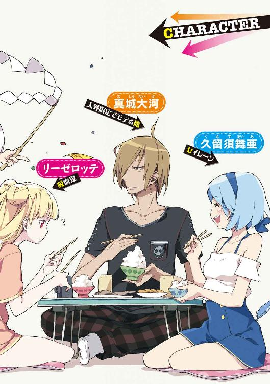

| 吸血鬼に彼女役を頼んだ結果→とんでもないことになりました (一迅社文庫) | |
| すえばし けん | |
| (2015) | |

挿画：ＬＥＮＡ［Ａ-７］
デザイン：ナカムラナナフシ（ムシカゴグラフィクス）
プロローグ
あいにくと、空には月も星も見えなかった。
（――このところ、曇りがちだったものね）
リーゼロッテは小さくため息をつく。最後かもしれないというのに風情のないこと。
むろん、彼女の眼は光源を必要としない。闇夜にあっても彼方の山脈や、城の周囲に広がる黒い森をくっきりと映し出すことができる。
だが、彼女は月や星が好きだった。太陽の影響力には及ぶべくもないのに、それでも必死に夜を照らし出そうとする姿は、実にけなげだと思う。
――と。
バタバタと石畳を踏む足音、続いて大勢の人影が屋上に姿を現した。
中位から下位の吸血種、そして獣人たち。
おそらく、三十人はいるだろう。知った顔も知らない顔もある。全員に共通しているのは、戦闘能力に長けているということ、表情が緊張と殺気に満ちているということ。
リーゼロッテを包囲した人垣から一人の男が進み出た。
「......もう、逃げ場はございませんな、姫様」
年の頃はおそらく六十歳過ぎ。黒い燕尾服に白い頭髪。慇懃な物腰。印象としては、高貴な家を一手に預かる家令を連想させる。
「城の周りにも、すでにアリ一匹漏らさぬよう、兵を配置しております。どうか、素直に同行ください」
「......もしかしたら、あなたくらいは味方してくれるかも、と思ったのだけどね、爺や」
「それはご期待に添えず、申し訳ございません」
老人は穏やかに言った。内心はうかがえないが、少なくともその声にはリーゼロッテを軽んじたり嘲ったりする響きは、欠片も存在しなかった。
「これも我が国のことを思えばこそ。クラルヴァイン公は力強く、そしてまた、恐ろしいお方でありますゆえ」
「ええ、そうね」
あの野心家のことは良く知っている。
――いや、実力行使で自分を確保しにくることまでは予想できなかったから、そこまで偉そうなことも言えないか。
リーゼロッテは小さく自嘲の笑みを作った。
「姫様を粗雑に扱うつもりなど、公の方もお持ちではないでしょう。だからこそ多少なりとも、姫様とご縁のある私を派遣された」
「かもしれないわね」
どうでもいい、という口調でリーゼロッテは答えた。
「その意を汲み、どうか抵抗などなさいませぬよう。お怪我をさせるのは本意ではありませぬゆえ。大人しくされている限り、姫様の安全は保証されております」
「安全というのは、クラルヴァインの伯父さまの管理の元での話でしょう？ 自由を奪われたまま、傀儡として過ごせというのかしら？」
「......『血の交換』の儀を執り行い、次代の王を定めるのは選帝者のお役目にございます。それさえ済めば、公もことさら御身の自由を制限したりはなさらないでしょう」
「それでは遅い。あなたにもよくわかっているはずよ、爺や。事が済んだ時には、もう私は鎖でつながれている。そんな生に何の意味があるというの？」
淡々とリーゼロッテは問いかけた。
「ねえ、ハルトマン、かつての私のお目付け役。ときに厳しくときに優しく私を導き、育ててくれたひと。――あなたは本気で、私がそうなることを望んでいるの？」
「............」
返答はない。
答えられないのか、あるいは、もはや問答に意味はないと諦めたのか。
ハルトマンは背後を向き、口を開いた。
「これより、選帝者《鉄槌の姫》、リーゼロッテ・フォン・ヴェルトハイム様をお連れする。両側について手をお取りせよ」
「謹んでお断りするわ」
「――残念でございますな」
小さくため息。
「ならば、一勝負お相手仕りましょう。――命令を変更。そなたらは手を出すな。姫様を逃さぬことだけ、留意せよ」
その言葉とともに、かつてのお目付け役の姿が一変する。
肌が獣毛で覆われ、顔が変形。そこにいるのは――狼の頭部を持った人間、獣人だ。
エーリヒ・ハルトマン。リーゼロッテが知る中で、おそらくは最強の人狼。
「少々の痛い目はお覚悟下さいませ」
「............」
さて、と、リーゼロッテは考える。
ここまで思い切った行動に出た以上、クラルヴァイン公は決して諦めないだろう。
リーゼロッテは永遠に追われ続けることになる。
この世界のどこにも、もう居場所はない。
（だったら......別の世界へ逃げるしかないわね）
現在、この城の近くには通行可能な門があったはず。そこから跳ぶ。
まあ――その前に、目の前の人狼と、その背後の数十人と、さらには城を包囲する兵たちを突破しなければならないのだが。
「では、参りますぞ、《鉄槌の姫》」
ハルトマンが動いた。
一話
――この街で一番ヤバいのは誰か？
そんな話題だった。
「『北高の魔人』じゃね？」
頭を品のない金髪に染め上げた少年が言った。
「いやーあれ、都市伝説っしょおー？」
「そーそー、雲戸瀬北高って、しょぼいお坊ちゃん高じゃないすかあ」
くわえタバコの少年が同調した。
いずれも十代半ばから後半だろう、いまひとつ個性のない羽目のはずし方をしたのが五、六人、コンビニの前で地べたに座り込んでいる。他の客や通行人が眉をひそめているが、彼らは意にも介さない。
「えーっと、『百人殺し事件』だっけ？ 遠征に来た他所のケンカチームが、たまたま女とイチャついてた『魔人』に絡んで怒りを買って、全員返り討ちにされたっていう」
「いやいや、一人で百人に勝てるかよ」
ありえねーと皆でゲラゲラ笑う。
「あと、あれだ『ライブハウスで人さらい事件』」
「あー、ボーカルの女が好みだっつってライブ中に乱入、ステージからさらってそのまま逃げたとか」
「バンドは解散だってな」
「いや、わざわざライブ中に誘拐とか、ただの頭おかしいやつじゃないっすか、それ」
「実際おかしーんじゃねーの？」
「やたら女絡みの噂聞きますよねー。お水っぽいのを侍らせてるとか、連れてる女が日替わりだとか」
「とにかく女癖が悪くて、即食っちまうらしい」
「『魔人』っつか、ほとんど獣じゃん、野獣じゃん、それ」
「面白がって尾ひれつけてるやつがいるんでしょ？」
「やっぱ都市伝説だって」
「ところがな――」
年かさらしい少年が、ぼそりと口を開いた。
「山田クンが、タイマンで負けたってんだよ」
「山田って......あの『南高の人食い鬼』の山田先輩？」
全員の顔から笑いが消えた。
この地域に雲戸瀬と名のつく高校は二つ。
偏差値そこそこの進学校である雲戸瀬北高校。
そして、不良の集うことで有名な雲戸瀬南高校。
雲戸瀬南高校に籍を置き、周辺の不良、ヤンキー連中を束ねている最強無敵のケンカ屋、それが山田である。
「ほら、山田クン、『魔人』のこと、かなりウザがってただろ？ やたらヤバい噂が絶えないからさあ」
『南高の人食い鬼』がどれだけ悪さを重ねても、必ず『北高の魔人』の冗談のような伝説がその前に立ちはだかった。『魔人』あるかぎり、『人食い鬼』は唯一無二の最凶にはなれないのである。
「で、サシできっちりケリつけて、でかい顔できないようにさせてやるっつって、街外れの神社に呼び出したんだ。昨夜の話な」
全員が固唾を飲んで身を乗り出した。この街の頂上決戦である。
「神社って、あの山の上にあるやつっすよね。......で、どうなったんすか？」
「山田クン、ボロボロで再起不能だと」
「は？」
「あの、山田先輩が？」
「連れを待たせておいて、山田クンは一人で神社へと続く階段を上って行った。しかし、五分と経たないうちに階段から転げ落ちてきて、『ママー、ママー』と泣きながら逃走、で、家に引きこもって、今日は連絡が取れないってことだ」
「............」
「............」
「............」
「............」
皆、無言で顔を見合わせた。
『魔人』には一歩譲るとしても、伝説の山田である。その凶悪さは知れ渡っているのである。
にわかには信じられない話だった。
「いやいやいや」
「ありえねーって、マジで！」
「そっすよお！ まさか山田先輩がそんな――」
と、一同の声が高くなったそのとき。
「あのう......お客様......」
コンビニの中から小柄な女性店員がでてきた。
どうやら店の入口正面での騒ぎを放置しておけなくなったものらしい。
「そこで座り込まれますと、他のお客様のご迷惑になりますので......」
「ああ？」
金髪が険悪な視線を向けた。
無意味に歪めた唇とか頚椎の捻挫が心配になるような首の角度とか、いちいちどこかのマンガのトレス度が高そうな仕草だったが、気弱そうな店員には十二分に効果的だったようだ。
「そ、そそそ、その、も、もう少し、端によって、お話していただけると......」
「何か文句でもあんのかぁ？ こら」
「どこで何しようと勝手だろうが。店の勝手な都合押し付けてんじゃねーよ」
「俺ら客だろ？ さっき買い物してやっただろ？ あ？」
「い、いえ、あの......」
口々に言われ、店員は涙目になった。
「あ？ 聞こえねーよ。はっきり言えやオラア！」
怒鳴り声を上げて、少年の一人が傍らの電柱を蹴り上げた。
ひ、と短く声を上げる店員。同時にその頭部から、焦げ茶色の毛に覆われた一対の獣耳がぴょこんと生えた。
「あ、わ......」
彼女は慌てたように手で押さえ、隠そうとする。
その姿を見て、少年たちは一斉に笑った。
「んだよ、こいつ、ＯＳかよ」
「獣人系？」
「いや、コボルトの変化だろ、よわっちそうだし」
「人間様に意見してんじゃねーよオラ。身の程わきまえてすっこんでろオラ」
凄まれ、馬鹿にされ、心折れた様子の店員は半泣きで店の中へと戻っていった。
少年たちは、話を再開する。
「で、その......『北高の魔人』は、そんなに強いんすかね」
「あ、もしかしてＯＳじゃないんすか、そいつも。さっきのコボルトみたいなんじゃなくて、なんか強い種族とか」
「まっさか。だったら単なるケンカでも、その時点で逮捕されてんだろ。こんなに悪名広まらねえって」
「あー、ＯＳとしての能力を人に向けた場合、銃をバンバン撃ったのと同等に扱われるんでしたっけ？」
「やっぱり人間？」
「じゃね？」
一同は考え込む表情になる。
やがて一人がぽつりと言った。
「......だったら、一回囲んでやっちまいますか？ 俺らで」
「山田クンの仇だしな」
伝説の山田が尋常な方法で負けるわけがない。卑怯な手を使ったに違いない。であれば『北高の魔人』は大勢で袋叩きにされて当然。
――そういう理屈だった。
一見、筋が通っている気がしないでもなく、証拠も必要ないという素敵ロジックである。
冷静に考えてみればかなり卑劣なやり口なのだが、彼らの中には冷静な者も考える者もいなかったので、皆、何となくいけそうな気分になった。
その場のテンションは何よりも優先されなければならない。仲間内で『空気読めない奴』とみなされれば、ヒエラルキーは一気に低下する。それは死にも等しい恥辱なのだ。
「学校の行き帰りとか、できれば自宅突き止めて襲いましょーよ。その『魔人』の本名はわかってるんすか？」
「ああ、たしか、真城、ましろ――」
「大河」
「そう、そんな名前だ――って、何だお前」
いつのまにか見知らぬ少年が一人、その場に現れていた。
ひょろりとした長身。ラフな服装。
何より特徴的なのはその顔だった。無造作な短髪に、痩せた頬。落ち窪んだ眼窩の中央で一対の目が鋭い光を放つ。悪魔や幽鬼を連想させる凶悪な風貌。
平然と人を殺す男というのはこういう顔をしているのだろうと、その場の誰もが思った。
「だ、誰だ？」
「今、お前らの噂してた人間だよ」
だるそうに少年は言った。
「雲戸瀬北高の真城大河。――んで、俺に何か用か？」
「............」
あらゆる噂、悪評が真実だと信じさせるのに十分なその容姿に気圧され、少年たちはとっさに言葉を返せなかった。
「用がねえならどけよ。コンビニに入りてえんだ」
大河は少年の一人を押しのけて、足を進める。
「――て、てめえっ！」
恐怖に耐えられなかったのか、一人が問答無用で襲いかかった。
勢いをつけた拳が、大河の頬にめり込む。が――
「い――いて、いてええええ！ 折れた、折れたぁぁぁああああぁぁッ！」
悲鳴を上げたのは殴りつけた方だった。
まるで巨大な石柱を叩いたような感触だった。十分に力の乗った拳の骨や手首の関節が耐えられるはずもない。
大河はそちらを一瞥し、すぐに興味を失ったようにコンビニの中に入って行った。
「だ、大丈夫ですか？」
大河の唇の端が少し切れて、血が滲んでいた。
コボルト店員の視線が、まるで吸い付けられたかのように傷へと向けられていた。
「大したことねえよ。ほっといてくれ」
「で、でも、えっと、拭うだけでも......」
そして店員は潤んだような目で大河を見、その服を掴んだ。
「あ、お、お客様――あなた、あの真城大河さん、なのですよね!?」
大河がわずかに眉をひそめ、返答しようと口を開きかけたとき――
「待てやぁ、ゴルァ！！！！」
我に返った不良たちが、店内に殺到してきた。
＊ ＊ ＊
人間の暮らす〝こちら側〟と、異形種の暮らす〝あちら側〟。
――世界は、二つ存在する。
あちら側の世界と、そして世界を結ぶ出入り口である門が公的に確認される以前から、交流は細々と続いていた。
何の前触れもなく忽然と姿を消す、いわゆる『神隠し』の中にはあちらの世界へ渡った者も相当数いただろう。逆にあちらから渡ってきた異形のものは、『妖怪』『妖精』『神霊』といった存在としてあらゆる地域の伝承に残っている。
あちら側の存在とこの異世界の住人たちを公的に認めようという動きが出てきたのは、前世紀の初頭のことだ。
門に対する研究が進み、社会制度も整備されるようになった。結果として、市民権を得てこちらに住み着く人ならざる者も増えた。
何らかの事情があって門を越えこちらにやってきた者たちは、いつしかＯＳ――つまり『あちらがわの者』と呼ばれるようになっていた。
人化の術を使えるものがほとんどで、見た目は人間と変わらない。
加えて特殊な能力を持つものも多いが、各国の治安維持組織に協力するＯＳも増え、法律も整ってきたことで、問題が起こることも少なくなった。
現在、人口の１パーセント程度がＯＳであると言われている。
珍しいことは珍しいが、彼らはもはや超自然的な存在ではない。
さて、『別世界とそこへ続く道』という概念は、古来より多くの宗教、神話、伝承の中に見られるものだ。だが、確実な往来手段が特定されていないのは門が極めて不安定な存在だからである。
『門』とはいうものの、肉眼では淡い光を放つ単なる空間の歪みとしか認識できない。
そして、不定期に出現したり消滅したりを繰り返す。確実な法則性もない。
ただ、地域や時期によってある程度の傾向はあるらしく、門の出現頻度が高い場所は政府によって特異点と認定される。
日本の一地方の片隅にある小さな街、この雲戸瀬町は、門の出現確率が極めて高い場所として、政府から特異点指定を受けていた。
現在、あちら側とこちら側の協定により門の出現状況は厳しく監視されており、気安く行き来することはできなくなっているが、それでもＯＳの数は他地域に比べてずいぶんと多い。
――これは、そんな街で暮らす一人の少年の物語。
＊ ＊ ＊
「真城大河、雲戸瀬北高校二年、か。――君、ＯＳじゃなく、人間なんだよね？」
警官は言った。
大河は肯く。
「人間だとしても、だ、ここまで大暴れしてくれたら、問題にせんわけにはいかんよ。――救急車で運ばれた少年が五人。コンビニの店員さん一人が意識不明。加えて器物損壊。見ての通り、コンビニ店内は滅茶苦茶だ」
「............」
「この状況を見ても、まだ自分に責任は一切ない、などと言い張るか？ それが通ると本気で思ってるのか？」
「......通ってくれねえと、困るんすよ」
警官に視線を向け、ぼそりと口を開く。
「――――っ！」
特に威圧したつもりはなかったのだが、相手は顔を強張らせ身構えた。
こういう反応には慣れている。慣れているのだが――だからといって、嬉しいわけではない。
げんなりした気分で、大河は続けた。
「だって、俺、何もしてねえから。ただ、新発売の『ふわとろジャンボシュークリーム』を買いたくて、少し遠くのコンビニまで足を延ばしただけで」
「シュークリームを食うような奴がこんな事件を起こすかよ」
ひどい偏見だと大河は思った。
そのとき、奥からもう一人、若い警官が顔を覗かせた。店長だかオーナーだかの聴取を担当していたようだ。
「防犯カメラ、確認しましたよ」
「おう、どうだった？」
「それが、ですね」
若い警官は、何とも複雑な表情で大河をちらりと見た。
「映像を見てみたところ――」
「待てやぁ、ゴルァ！！！！」
怒声と共に店内に殺到してきた不良たちの一人は、ナイフを持っていた。
小振りな、服を貫けるかどうかも怪しい代物だったが、それでも刃物は刃物だ。威嚇の効果はあると判断したらしく、彼はそれを大きく振り回した。
そしてそれが大河の耳をかすめた。
傷とも呼べないようなかすり傷だ。刃先からほんの一滴だけ血の飛沫が舞い、それが店員の頬にかかった。
そのまま大河が少年たちに取り囲まれたとき――
「――お客様の迷惑らって、言ってんでしょぉ！」
犬耳の女店員が、据わった目で大声を上げた。
そしてそのまま、人間を遥かに凌駕する身体能力で、不良少年たちを叩きのめしたのだ。
大河が制止する間さえなかった。
「すばらしい精気を、ありがとうごじゃいました！ あなたの精、すごく、美味しかったですー！ さすが噂に高い真城様！ ......結婚してください！」
――以上が事の顛末である。
大河は夜道を歩きながら、ふう、と息をついた。
カメラの映像によりとにもかくにも無実が証明され、ようやく解放されたのだ。
不良に絡まれるのもＯＳに絡まれるのも初めてではないが、毎回著しく精神力を削られる思いがする。ぐったりと疲れた。
「......結局、シュークリーム買い損ねたな」
食欲も失せた。まっすぐ帰るとしよう。
真城大河は特異体質の保有者だ。
大河の保有する精気――生物が備えている生体エネルギーは、その質も量も常軌を逸するレベルなのである。痩せた見た目からは想像もつかないような活力が、体内に満ちているわけだ。
これにより彼は人間離れした耐久力、また魔力、妖力に対するありえないほどの抵抗力を持っている。素手でダメージを与えることはまず不可能で、ＯＳの特殊な力も無効化してしまう。
何より大きな特徴は、この精気がＯＳたちにとって、この上なく上質な餌であり、その力を底上げする燃料になるということだった。
大河の血液、その他体液などには、高い濃度の精気が含まれている。
ただし、あまりにもその質が良すぎるため、力の弱いＯＳに対しては過剰摂取反応を引き起こすことがあった。単に活力が得られるというのを通り越して、抑制しきれない精神の高揚、興奮、力の暴走などが現れるのだ。
現れ方は個体差があるが、大雑把に言ってアルコール度数の高い酒を呑んだような状態になるようである。
あのコボルトの店員の様子がおかしくなったのも、そのためだろう。本人の意思に関係なく酔っぱらわされたようなもので、大河としてはむしろ申し訳なさを覚える。
ちなみに彼女はやたらといい笑顔を浮かべて大河に結婚を申し込んだあと、昏倒してしまった。寝顔は気分よさそうだったので、まあ大事にはならないと思う。
大河の体質のことは警察に話したし、役所に届け出もしてあるので、あの店員が咎められることもないはずだ。
まあ、もし記憶が残っていればあとで死にたくなるかもしれないが......それについて大河にできることは何もなかった。
実のところ、こういうトラブルは何度も経験している。
まず、やたらと打たれ強くしかも顔が少々怖いため、いつの間にか伝説の不良のような扱いになっていた。実のところ、大河から手を出したことは一度もないというのに。
そして、大河の身柄は精気を独占しようとしたＯＳ――特に異性のＯＳに、よく狙われる。
この両者の複合型が最悪だった。
例えば、一般に『百人殺し事件』として知られているものは、強力なＯＳが大河を強引にものにしようとしていたところへ空気の読めない不良グループが絡み、全滅させられたというものだった。
根も葉もないとは言わないが、悪評のほとんどはこの体質がもたらした濡れ衣なのである。
つくづく自分の体質が呪わしい。
多くは望まない。ただトラブルのないおだやかな生活が欲しい。それだけなのに、どうして叶わないのだろうか。
現在、大河は、路地の奥にある安アパートで一人暮らしをしている。
この街には門が多く出現しＯＳも大勢暮らしているが、同時にＯＳと共存する環境も整っていると聞いていた。なので、高校入学と同時に親元を離れ越してきたのだ。
住人もＯＳが絡んだトラブルには慣れているはずだし、警察や役所の対応も他のところよりは洗練されているだろう。そう思っていた。
が、残念ながら今のところあまり快適な生活は送れてない。家族を巻き込むことがなくなったのが、ほとんど唯一の救いだろうか。
そんなことを考えながら、ため息をつき――
「............ん？」
大河は足を止めた。
どこからか、かすかな声が聞こえてきた気がしたのだ。
周囲を見回す。
人通りのない細道。道沿いには住宅に、畑、駐車場。
（犬や猫じゃなさそうだったよな）
そのとき、また聞こえた。確かに人の声、それも痛みをこらえるような、うめき声だ。
街灯の明かりも届かない道の端――電柱の陰に隠れるように、塀に背中を預けて人が座り込んでいた。
「おい、大丈夫か？」
大河は近寄って確認する。女性、それもどうやら年若い少女だ。
こんな田舎町ではまず見ないようなドレスを纏っているが、ズダボロでほとんど原型を留めていない。怪我も負っているようだ。
気配を感じたのか、少女は身じろぎするとわずかに目を開け、小さく息を吐いた。
思わず大河は息を呑んだ。
血の色をした瞳、長く伸びた犬歯。明らかに人間ではない。
異性のＯＳ。大河にとっては恐怖の具現化、決して相容れない天敵にも等しい存在。
（だが......）
弱っているのであれば、放置してはおけない。
まあ、動けないほど弱っているならややこしいことにはならないだろうし、さっさと警察なり病院なりに任せてしまえば――と、大河は手を差し伸べ、助け起こそうとする。
「......血の......香り」
そのとき、小さな声が少女の唇から漏れる。
次の瞬間――その細い体が跳ね起き、大河へと襲いかかってきた。
「――――ッ！」
とっさに飛び退いた大河の耳元で、ガチンと牙が鳴る。
「ちょ、おい！ 落ち着け！」
過去一度も効果を発揮したためしのない言葉を吐きながら、突き放そうとする。
その腕――肘と手首の間くらいに、牙が食い込んだ。
少女はそのまま貪るように大河の血を飲んだ。
「あ――っつ......」
不思議と痛くはない。ただ、頭の中にノイズが走るような感覚と、背筋を這い上ってくる悪寒を覚えた。
これはどう考えてもまずい、と、大河が大声で助けを呼ぼうとした瞬間――突然少女は口を離した。そして大河を見上げ、後悔の表情を浮かべる。
「ごめ......んな、さい」
そして、力を振り絞るようにして続けた。
「......人は、呼ばないで......見逃して......お願い」
「血を吸っておいて見逃せって――おい」
しかし、少女は大河の苦情を聞くことなく、地面にくずおれた。再び気を失ったようだ。
大河は決断を迫られることになった。
警察にでも通報すれば、しかるべき処置をしてくれるだろう。
しかし――
大河は携帯を手にしたまま悩み――結局、それをしまって少女を背中に担いだ。
＊ ＊ ＊
明けて週末、土曜の朝。
大河は歩いて十分の最寄りのコンビニでパンと飲み物を買い、アパートに戻ってきた。
「あ、おはようございます、犬伏さん」
ちょうど隣室の住人が階段を下りてくるところだったので、挨拶する。
「お、おはようございます」
犬伏日和子は、少々硬い笑顔ながらも挨拶を返した。
近くの大学に通う女子大生だと聞いている。
収まりの悪い髪に眼鏡、服も着古した印象。大体いつも生活感にあふれる格好をしていた。多分、着飾ればすごく綺麗な人なのだと思うのだけど。
「大学すか？」
「い、いえ、今日はその、バイトがあって」
「頑張ってください」
うん、ありがとう、と言って、日和子は共同駐輪場の方へと歩いて行った。
会話は成り立つが、微妙に距離を取られている気もする。
笑顔もどこか無理をしているような......
大河は自分がほんのちょっぴり悪人顔であることを自覚している。
（やっぱ、怖がられてんのかなあ）
嫌われているというほどでもないとは思うのだが。
そんなことを考えながら、二階一番奥の自室へと足を進める。
玄関の鍵を開けて中に入ると、二畳のキッチン。その奥にちゃぶ台と安物のパイプベッドが置かれた六畳間。これが大河の住居の全てである。
ベッドでは少女が眠っていた。
ちゃぶ台にコンビニの袋を置き、大河は改めて彼女を観察する。
年齢は十代後半。見事な金髪、西洋人形のようにきれいな顔立ち。
出るところが出ており、スタイルも非常に整っていると言っていいだろう。ただし、今は服がボロボロなので少々目のやり場に困る。
よく観察しないとわかりにくいが、胸は緩やかに上下している。夕べとはうって変わって寝顔も呼吸も穏やかだ。
ここに運び込んだときにはかなりひどい傷を負っていたはずだが、きれいに癒えている。大河の血によって治癒能力が跳ね上がったせいだろうか。
（......しっかし、かなり大量に飲まれたよな）
怪我をしていたとはいえ、あれだけの血を必要とするＯＳには初めて会った。これまで大河の精気を欲しがっていた者たちは、たいてい一舐めで満腹、それ以上だと酔いつぶれて正気を失うような状態になっていたのに。
と、少女がゆっくりと目を開けた。
「............」
無表情のまま周囲を見回し、次いで自分の体に視線を移す。状態を確かめているようだ。
そして大河に目を留め、ゆっくりと口を開く。
「――あなたは、クラルヴァイン公の手のものではない」
「はい？」
「なぜなら、私が拘束されていないから」
「......そりゃ、論理的な判断だな」
何と言うべきかわからなかったので、大河はそう答えた。
クラル何とかいうのが、この少女を追いかけていた奴なのだろうか。悪そうな名前だし。
「昨夜の記憶はあるか？」
「............」
少女は眉間にしわを寄せて思い出そうとしている様子。
ややあって口を開く。
「私......もしかして、あなたの血を吸ったかしら？」
「しっかりとな」
大河は腕の傷を示した。耐久力のみならず治癒能力も常人より上なのだが、傷跡はまだくっきりと残っている。
「もしかして、どこかで人の血を吸って逃げてきたとかじゃねえだろうな」
「いいえ」
少女は即座に否定した。
「吸血したのはあなたが初めて。それだって本来あってはならないことだわ。今まで人間に手を出したこともない」
そして無表情のまま傷に視線を固定し、じっくりと見つめた後、少女は再び口を開いた。
「体調に変化は？」
「特に何も。何かまずいことが起こるのか？」
「......あなた、人間よね？」
「人間だよ。ちっとばかし特殊な体質らしいけどな」
「そう......なの」
少女はしばらく考えて、再び口を開く。
「リーゼロッテ」
「は？」
「私の名。......あなたにも名乗ることを許すわ」
――つまり名前を教えろってことか。
妙に偉そうな物言いだったが、不思議と見下されている感じはしない。
「あー、俺は真城大河」
「タイガ、ね。――傷を負わせてしまったこと、改めて謝罪します。そして、あなたの尽力に心からの感謝を。ありがとう」
リーゼロッテは小さく頭を下げた。
口調はしっかりしている。昨夜のように理性を失うようなこともなさそうだ。
「――で、ここはどこなの？」
大河のベッドに半身を起こしたまま、少女は興味深そうに周囲を見回した。
「俺の部屋だよ。お前が倒れてたところから、歩いて五分くらい」
「狭いのね」
ストレートに感想を述べ、そして続ける。
「でも、この世界の平均値を知らないのに、結論を出すのは早計かもしれないわ。タイガ、ここはあなたたちの基準では大広間だったりするのかしら？」
「俺達の基準でもクソ狭いよ。安アパートの一室なんだしな」
「あぱーと？」
「聞いたことないか？」
どういうところの育ちなのだろう。
大河は説明しようと思ったが、賃貸の集合住宅という住居形態とか一般的な生活水準とか自分が一人暮らししている理由とか、色々と解説が面倒なことに気付いて迷い、諦めた。
「それはさておき......とりあえず、服をどうにかしたほうがいいんじゃないか？ ――Ｔシャツと短パンくらいなら貸せるけど」
現状、リーゼロッテは半裸といってもいい状態だ。礼儀上、なるべく見ないようにしているのだが、肌色な部分が自然と視界に入ってくるのである。
特に彼女が体を起こしてからは、重力に負けない張りのある膨らみがわがままに自己主張しており、色々困る。
「着替えたほうが良さそうなのは確かね」
リーゼロッテは重々しく肯くと、軽く両手を上げた。
「では、脱がせて」
「......俺が？」
「あなた以外に誰がいるの？」
「......なんで？」
「一人で脱ぐより脱ぎやすいでしょう？」
なぜそんな当然のことを尋ねるのだろう、というように彼女は首を傾げた。
「あのさ、正面からだと、俺が色々見てしまうことになるけど――その、いいのか？」
大河が確認すると、それまで動きに乏しかったリーゼロッテの顔に、初めてむっとしたような表情が現れた。
「それは私に対する侮辱なのかしら？ 見られて恥ずかしい体をしているつもりは、ないのだけれど？」
「いや......うん、悪かった」
大河は抗弁する意欲を失った。
昔の貴族なんかは人にお世話されるのが当たり前で、使用人に裸を見られることをいちいち気にしていなかった、なんて話を聞いた覚えがあるが――今もＯＳたちのコミュニティの中には、そういう習慣を保っているところがあるのだろうか。
できるだけ素肌に目をやらないようにしつつ、ドレスを脱がせ、Ｔシャツを着せる。
「動きやすいわね」
着替え終えるとリーゼロッテはベッドから降り、軽く手足を伸ばす。
「単純な作りだけど、機能的だわ」
お気に召したようだった。大河もようやく視線を落ちつかせることができる。
「人心地ついたんなら、そろそろそっちの事情について聞かせてほしいんだけど。どこから来たんだ？」
「......ここではない、どこか遠く」
「誰かに追われてたのか？ 何か、さっきそんなことを言ってたけど」
「............」
「危ないんだったら、警察に駆け込んだほうがいいんじゃねえか？ 人を呼ぶなっていうから昨日は連れて帰ってきたけど、この辺りの警察はＯＳも人間と同じく面倒見てくれるぜ」
「警察、こちらの公的な治安維持組織。ＯＳ、こっちにおける『人ならざるもの』の呼称、だったかしら」
リーゼロッテは呟く。
「はい？」
「何でもない。――いえ、警察は困るわ、味方であるとは限らない。むしろ敵かも」
「......はあ」
別に冗談を言っているわけではなさそうだ。
ＯＳであれ人間であれ、警察はそうそう簡単に一個人を目の敵にしたりはしないと思う。彼女が怪我を負っていたのは間違いないし、トラブルに巻き込まれているのは確かなのだろうけど......恐怖で冷静な判断が出来なくなっているのだろうか。
「あなたに命じます。――いえ、命じるのではなく、提案ね」
「というと？」
「可能なら匿ってほしい。私に払えるものなら、どんな代償でも払うわ」
「代償って......んー、お金持ってるの？」
「お金はない。今、私にあるのは、この体ひとつだけ」
「............」
「どんな代償でも払うわ」
沈黙し、そして大河はため息をついた。
「......いらねえよ」
そういう申し出がろくなものであったためしがない。
血の一滴と引き換えに、好きなことさせてあげる――なんて女性のＯＳは過去にも大勢いた。断っても断らなくても、この種の取引はやっかいなことになる。
リーゼロッテは軽く眉を寄せ、やがて納得したように肯いた。
「ああ、あなた、そっちの趣味なの」
「ちげえよどっちの趣味だよ。――その手の交渉には乗っからないのが信条なんだよ、俺は。嫌な思い出が多々あるんでな」
「そう......」
あまり表情は変わらないが、ガッカリしたのは何となくわかった。
どういう育ちなんだ、こいつは――と、大河は改めて思う。
何かとＯＳに縁のある大河だが、自身はまごうかたなき人間だ。ＯＳのコミュニティ事情に関してはそれほど詳しくない。
まあ、彼らもケンカすることくらいはあるだろう。
多種多様な種族が存在するからか、意外に縄張りや面子、力関係といったものを気にすることも知っている。
このあたり、昨夜絡んできたヤンキーどもとそう変わらない。
――ただ、戦闘能力が高い分、ひとたび闘い始めると、ちょっと人間同士では考えられないくらい派手なことになったりするだけで。
（......こいつはヤンキーってより、悪い大臣に反乱を起こされて逃げてきたお姫様って印象だけどなあ）
そう思わせるほど、浮世離れした印象がある。とはいえ、いまどきそんな出来の悪いライトノベルみたいな話もないだろうが。
当のリーゼロッテは立ち上がり、もの珍しそうな様子で大河の部屋を見て回っている。
どうやらキッチンの古びたアルミなべに興味を覚えたようで、ためつすがめつしていた。
「誰か頼れる人はいないのか？」
「いないわ。ここを追い出されたら行き場もない」
淡々とした口調で彼女は答えた。
同情を買おうというわけでもなさそうだが、それだけにかえって重く響く。
リーゼロッテに知り合い――つまり身元保証人がいれば、特にそれが人間であれば、ずいぶんと話は違ってくるのだが。
少々特殊な力を持っていたところで、ＯＳたちは圧倒的な少数派だ。なので組織を作ってお互い助け合っていることが多い。ＯＳコミュニティのある地域にはそういう団体や顔役がいて、彼らをとりまとめているのが通常である。
特に、治安の維持にはどこも気を遣う。
この世界で圧倒的多数を占める人間たちを敵に回すのは、得策ではない。なのでやりすぎたＯＳに対しては、大抵の場合、まず同類たちから制裁が加えられる。はみ出し者を許容していては、自分たちの首を絞めることになるからだ。
要するに基本的にＯＳは人間たちに手を出さないし、逆に人間と深く係わっていることを示せれば、他のＯＳとの間で多少のトラブルを抱えていたとしても保護や救済を受けやすくなるということである。
「うーん......」
どうしたものか。
一応、手を貸してくれそうなところに心当たりはなくもない。
大河自身がやたらとＯＳに襲われるので、そういう組織にも知己がいるのだ。
（とはいえ、保証人のいない奴を丸投げされても困るだろうしなあ）
リーゼロッテ自身も結局追い出されることになっては、誰も得しない。
――と、そこでふとあるアイデアを思いつく。
ギブ・アンド・テイク。
彼女に力を貸すことは、自分のメリットにもなるかもしれない。
「......ひとつ、頼みたいことがあった。協力してくれるなら、この部屋――はともかく、この町にいられるよう取り計らってもいい」
「聞かせて」
「俺の彼女役を演じてほしい」
「――彼女、役？」
リーゼロッテはきょとんと目を瞬かせた。
「この場合の『彼女』は代名詞じゃない。俺のもっとも親しい異性として振舞ってほしいって意味だ」
もちろん狙いがある。
このところ強引な実力行使は少なくなったものの、『健全な男女交際の申し込み』を装って大河を手に入れようとするＯＳはいまだに多い。
しかし特定の『彼女』役を傍に置いておけば、この方面からのアプローチをシャットアウトが可能だろう。
さらに『女をとっかえひっかえしている』という悪評を払拭する効果も期待できる。
リーゼロッテはどうやら大河の精気に対して高い耐性を持っているようだ。であれば、これ以上の適任はいない。
「もっとも親しい異性」
感情の読めない声でリーゼロッテは繰り返した。
「......ええ、そうね」
思案したのち、小さく肯く。
「こちらとしても、それはとても助かる申し出だわ」
「決まりだな。じゃあ、俺を保証人ということにして、こっちのＯＳ組織に紹介する。と、その前に、芝居臭くならないよう設定を――」
煮詰めておくか、と言おうとしたそのとき、玄関のチャイムが鳴った。
続けて軽いノックの音。
「先輩、先輩、あたしの大河せんぱーい、あなたの舞亜ちゃんが来ましたよー。あっけて下さーい♪」
陽気な声が聞こえてくる。
「外はいい天気ですよー。起きましょうよー」
大河は眉根を寄せた。
もう少しリーゼロッテと打ち合わせをしておきたかったのだが......どうする？ 居留守を使うか？
――と、思う間にリーゼロッテがドアを開けていた。
「あ、先輩、おっはよーございまー......え？」
ドアの向こうにいた少女は勢いよく右手を挙げて挨拶しようとし――そこで凍りついた。
「お、おい、勝手に開けんな」
「客人に応対しないのは失礼だわ、タイガ」
「............」
当の客はしばらく凍り付いたままだったが、そこに至ってようやく口を開いた。
「......だ、誰？」
「リーゼロッテ」
「この、気配......あなたもＯＳね？ もしかして、先輩を襲うために入り込んだの？」
少女の肌に、鳥の羽毛が浮き上がった。そして息を吸い込み、口を大きく開く。
「――待て、力使うな久留須！ そいつは違う！」
大河はあわてて割りこんだ。
「じゃあ何なんです、先輩！ なんで先輩の部屋に女の人がいるんですか！」
不服そうな少女に、リーゼロッテがさらりと告げた。
「私はタイガの彼女」
「............」
少女は再び凍りついた。数秒を経て自己解凍。
「か、か、彼女、って、いうと......彼女、ですか？」
「一番親しい異性のこと。――そうよね？ タイガ」
リーゼロッテは部屋の中を振り返ってたずねた。
「お、おう」
「せ、先輩が認めたぁ！」
訪問者の少女は愕然とした表情で大きな声を上げた。
「......へー、昨夜はお泊りしたんですか、へー。だから先輩のＴシャツ着てるんですねー」
招き入れられ、話を聞いた彼女は幾分引きつった表情でそう言った。
久留須舞亜、中学三年生。大河の知人である。
小柄でかわいらしい容姿。笑顔を絶やさない陽気な性格だが、さすがに今は少々動揺しているようだった。子供には刺激が強かったかもしれない。
「でも、ＯＳを彼女さんにするなんて意外ですね。先輩が選ぶなら、普通の人間の女性だと思ってたんですけど」
「まあ、その、巡り会わせというか、運命というか、だな」
ちなみに人間の女性にはまったくもてない、というか敬遠されまくりなので、そちらと仲良くなれる可能性はないだろう。
「運命、ですか」
舞亜はふうと息をついた。
「いえ――失礼しました。いずれにしろ、祝福しますよ！ おめでとうございます！」
「ああ、ありがとう。驚かせて悪かったな」
「いやーそりゃあ、びっくりですよ」
明るく言う。ようやくいつもの調子を取り戻したようだ。
「女の人がいるとは思わなくて。――ほんとに、びっくり、で......」
なぜかまた急激にテンションが下がったようだった。
まあ、いきなり目の前にＴシャツ一枚の金髪巨乳が出てきたら、普通は驚くだろう。
「で、お前は何の用だったんだ？」
「あ、はい、えっと、お母さんが炊き込みご飯作ったんで、おすそわけと――」
舞亜はカバンからタッパーウェアを取り出し、ちゃぶ台の上に置いた。
「あと、『交際の申し込み』がたくさん」
続けてばさっと手紙の束。
「で、その、ついでに、いつもみたいに先輩の精気を分けてもらおうかと。......欲求が抑えきれなくなっちゃって――」
甘えるように言い、そしてちらりとリーゼロッテを見る。
「あ、でも、彼女さんできたなら、今後は遠慮した方がいいですかねー？」
「いや、いいよ、お前は特別だしな」
大河は言った。
「......あの、屈託なく言われると、逆に対象外確定っぽくて辛いものが」
「辛いって？」
「いえ、その......何でも。やっぱ、精気はまた今度でいいです！」
そういって、あははと少し気の抜けたような笑みを浮かべた。
なぜだか今日は、気分の浮き沈みが激しいようだ。
舞亜は鳥妖の一種――半人半鳥のＯＳである。
彼女の一族は『大理石の窓』というＯＳのコミュニティを取りまとめている。これまで大河も何かと助けられてきた。
大河は、幼いころから人ならざるものを引き寄せる体質だった。
成長すると、特に女性型の人外種族からの接触がますます強引になっていった。
周囲には女の影が絶えず、やがて『女癖の悪い不良』という事実無根の悪評が囁かれるようになった。むしろ、自分は利用されるだけの存在だというのに。
雲戸瀬町に越してきてからもそれは変わらず、どんどん心が荒んでいったとき――
『真城大河さんですねー？ お力になれると思うんですけど、少しお話を聞いていただけませんかー？』
舞亜は大河の前に現れた。去年の、夏ごろのことだ。
大河は警戒した。当時、精気を狙った異性のＯＳたちが恋愛を装って迫ってくるという事態に悩まされており、相当な異性ＯＳ不信に陥っていたのだ。
舞亜もその手合いかと思ったのだが――少し違っていた。
彼女の一族はＯＳと人間の間がうまくいくよう調整する役割を担っている。なのでそれなりの権力があり、大河に近づく異性を制限したり、その他トラブルに陥ったとき助けることができる。ただ、その報酬として、少し精気を分けてほしい。
それが彼女の主張だった。
精気が目的なのは同じであるかもしれない。だが、これまでのＯＳたちのように、我欲を恋愛感情だと偽って近づいてきたりはしなかった。
つまり大河は彼女の正直さに好感を持ち、信頼を寄せることにしたのだった。
以来、舞亜は大河のマネージャー的な役割を果たし、簡単にはＯＳが近寄れないように力を尽くしてくれている。
しかし、彼女に頼ってばかりも悪い。自分のそばにいてはボーイフレンドすら作れないだろうし。なので、彼女の負担を減らすことができないかとずっと思っていたのだ。
こうして大河が彼女（役）を作れば、舞亜もお守りとして張り付いている必要はなくなる。
つくづく一石何鳥もの名案だ――と思うのだけど。
「――つまりこの人、余所から流れてきたＯＳで、先輩に助けられた、と」
舞亜は難しい顔で肯いた。
リーゼロッテを助けた経緯については、おおむね隠さず話している。大河が一目惚れして口説き落としたという設定を付け加えただけだ。
「俺が保証人を引き受ける。なんとか『大理石の窓』で面倒をみてもらえないか？」
「んー......」
腕組みをして真剣に考え込む舞亜。
見た目は幼いが、自分のお役目はしっかり果たす子なのだ。
「隠し事無しで言えば、先輩に貸しを作れるのは、うちの組織にとって悪い話じゃないんですよ。高品質の精気って、黄金より価値のあるものですから」
これまでにも、力を借りる代償に血液を渡したり、精気を食わせたりしたことはある。（ちなみに舞亜はよっぽど弱ってない限り、大河の指先に口づけする程度で満たされるそうだ）
「ただ......吸血鬼なんですよね？」
舞亜の視線を受け、リーゼロッテはこくんと肯く。
「こっちの世界にいる吸血鬼は極めて少なかったはずです。あたしも直接会った記憶はないですし。――もしかして、不法入界者ですか？」
「............」
「もちろん事情はあるのでしょうし、それだけで排除するつもりもないんですけど。追っ手がかかっているというなら、あたしたちが交渉の窓口になって話を付けますし」
「......私の居場所が割れない限り、追いかけては来られないと思う。名もないＯＳとして普通に生きさせてもらえれば、それ以上は望まないわ」
「その場合でも、出自や過去を話せないってのはネックになりますよ？ あなたがたは特に取り扱い注意な種族さんなので......何かやらかしてたり、やらかす可能性が高いと受け入れ辛いんですよねー」
吸血鬼は人間に害をなす存在。そういうイメージは根強い。
実際、吸血されると一定確率で吸血鬼に転化する。しかも、そうして生まれた吸血鬼は正気を失って暴れるケースが多い。
自動的に発動する精神と肉体の変成――いわば一種の呪いなのだ。
現代魔術医療の進歩により、今は後天的な吸血鬼化なら抗呪ワクチンで抑制できるようになっているのだが、かつては節操のない吸血鬼が食欲を全開にした結果、村一つ焼き払う事態になったこともあったらしい。
「先輩も噛まれたんですよね？」
「......ああ」
「耐性のある先輩だからよかったですけど、一般の人なら大ごとですよー？」
「俺だからこそ、こいつが誘惑に耐えられなかったのかもしれねえだろ？ そういう体質なんだから、俺は」
「......我を失ったのは否定しない。でも、私はタイガ以外の人の血を吸ってはいない。これからも吸うつもりはない。信じて、と言うしかないけれど」
「栄養補給自体は普通の食品でも大丈夫なんですよね？」
リーゼロッテは肯くとストローをくわえ、牛乳を一口飲んだ。
朝食として大河が買ってきたものである。
「ちなみに牛乳は好きだわ」
「......だからでしょーかねー」
舞亜はむーと唇を尖らせつつ、リーゼロッテの胸元に目をやった。自分との格差を痛感しているような表情だった。
「まあ、それはさておき――襲われて血を吸われたのに、先輩はどうして彼女を庇うんですか？ そういうのが嫌で逃げ回ってたんじゃないんですか？」
「んー......」
なぜだろう、と自分でも思う。
付き合っているというのはあくまで見せかけだけのことだが、リーゼロッテに嫌悪感を持っていないのは確かだった。異性のＯＳという苦手な存在であるはずなのに。
「俺を騙して利用しようとはしなかったから、かね。――久留須と同じだ」
「............」
舞亜は少し意外そうに目を見張り、そして小さくため息をついた。
「ずるい人だなあ。――まあ、持ちかえって検討してみます。寝泊りする場所くらいは何とかしますよー」
＊ ＊ ＊
「ほんと、申し訳ないよね......」
市役所の駐輪場に自転車を止めながら、日和子はさきほどすれ違った隣室の少年――真城大河のことを思い出した。
多分、かなり露骨に避けているように見えるだろう。なのに、挨拶は欠かさない。
顔に似合わず、いい子なのだ。
日和子が彼と距離をとっているのは、別に怖いからではない。
――彼が、あまりにも『美味しそう』だからだ。
汗の一滴は甘露にも等しい。うっかり近づきすぎると、我を忘れてむしゃぶりつきその首筋に鼻を埋めたくなる。
ＯＳにとって、彼の精気はそれほどまでに蠱惑的なのである。
犬伏日和子。最近ちょっとお腹周りの肉が気になる、二十歳の平凡な女子大生。
――というのは表向きの顔。
実は人狼と人間のミックス。人狼の特徴を色濃く受け継いでいるためＯＳとして登録されており、同時に政府機関である公安調査庁亜人局所属の公務員である。
亜人局というのは、亜人の活発な地域に置かれる一種の調査、監視機関である。名前の通り、亜人、つまりＯＳたちを対象とする。
日和子の任務は、真城大河と彼に近づくＯＳの監視――というより、むしろ観察といったほうが正しいだろうか。
大河はＯＳに対して大きな影響力を持つ特殊体質だが、特に問題行動が多いわけではないことは把握している。恐ろしげな容姿と、やたらＯＳを引き寄せＯＳの女の子にモテまくるという以外は、ごく平凡な少年だ。
加えて、現在彼はＯＳコミュニティ『大理石の窓』の保護下にある。相互不干渉が原則であるため、よほどの事態にならないかぎり公権力が積極的に介入することにはならないだろう。
要するに、トラブルの有無とその概要だけ把握できれば十分ということである。
結果として日和子の仕事は大河に関する定期的なレポート、周辺防犯カメラの確認、あとは週に一、二度、市役所の地域担当と治安維持に関する打ち合わせをするくらいしかない。
ある意味新人にふさわしい任務だと言えるだろう。
今日は打ち合わせの日なのだが、何か予定が詰まっているとかで朝一の時間を指定された。
（早く済ませて寝なおそうかなあ）
そんなことを考えながら廊下を歩き――
「――――ッ！」
次の瞬間、日和子は人間には不可能な動きで大きく跳躍していた。
周囲の職員たちが驚いて目を見張る。
「いやー、いい反応だね、日和ちゃん」
日和子の視線の先で、冴えない顔の中年が笑っていた。
「柳木局長......？」
直属の上司である。
「い、いきなり殺気ぶつけるのやめてください。心臓が止まるかと思いましたよぅ......」
「ほんと、素材は一級品なんだよねえ、君は。もう少し現場慣れするか、最前線向きの性格してるといいんだけど」
「う、そ、その辺は生まれつきの才能というか、素質というか......いえ、それより、局長はどうしてこんなところに？」
物腰は軽いが、これで結構偉い人なのである。
普段は主要都市部にある亜人局事務所の方に詰めていて、地方の市役所に出てくることはまずないはずだ。
「ちょっと会議に呼ばれててね。ついでだから、日和ちゃんとも打ち合わせしておこうと思ってこの時間に呼んでもらった」
「あらかじめ言ってくれたらいいのに......というか、別に電話やメールでも......」
「部下を直接いじめる楽しみが無ければ、管理職なんぞやってられんよ」
「不良上司を持った部下はもっとやってられませんよ......」
「早く出世するんだね。――何か変わったことは？」
「え、えっと、いえ、特には。昨夜、運悪く真城君の血液に触れたコボルトの女性が、コンビニ内で暴れましたけど――これは警察の方で注意して終わり。そのくらいです」
「『大理石の窓』とは？」
「組織の久留須舞亜さんとは良好な関係を続けています。あ、昨日くらいからもう一人、彼の部屋に来ている雰囲気だったかな。気配がしてましたから。可能なら顔を確認しておきます。報告はこんなところですね」
「了解了解。で、ちょっとお願いなんだけど......そっちの任務が問題ないようだったら、追加で一つ、やってもらいたいことがあるんだ」
「何でしょう――」
と、そのとき、不意に日和子は寒気を覚えた。
初老の男がちょうど二人の横を通りかかった。
かなりの長身。場違いともいえる燕尾服――洋画の中の執事のような――を身につけているが、あまりに似合っているため、地方の役所という場所にもかかわらず不自然さを感じさせない。
何より印象的なのは、その気配。殺気や害意はないのに、存在感が畏怖を覚えるレベルに達している。なんだろう、この迫力は。
「......ＯＳ、ですよね」
職員に案内されて階段を上って行った男を見送り、日和子は言った。
「獣人だそうだ。日和ちゃんのお仲間だね」
「やめて下さい。わたしなんかとは格が違いますよ......。でも、なんで、あのクラスの人がこんなところに？」
「今日の会議の主賓なんだよ。『あっち側』の世界からの正式な使者らしい。機密レベルが上がるから、これ以上は言えないけど」
こちらとしても聞きたくないなあ、と日和子は思った。
それを教えられることがあるとしたら、任務絡み、それも胃痛を覚えるレベルで重要な案件にかかわる場合だろうし。
「......それで、追加の仕事というのは？」
「おー、そうだ、それそれ。話が途中だったねえ」
柳木はへらへらと笑った。
日和子はいやな予感を覚える。彼がこんな顔をしているときは、たいていろくでもないことを押しつけようとしているのだ。
「実は、余所で傷害事件を起こしたＯＳがこの町に逃げ込んできた可能性がある。捜査、確保してくれ。必要なら実力行使も視野に入れて」
「うぇ!?」
日和子は思わず声を上げた。
「わ、わたし一人で？」
「大丈夫だ」
柳木は真顔になった。
「君は一人であっても孤独ではない。君の背中は無数の人によって支えられているんだ。――これまでも、これからも、ね」
「な、なんか良いこと言った風な空気出してますけど、それ要するに今回現場で動くのはわたし一人ってことですよね!?」
亜人局の調査官たるもの、あらゆる状況に対応できて当然だし、戦闘訓練もちゃんとこなしてはいる。だが通常、危険が予想される場合はもっとベテランが担当するか、少なくとも複数で事に当たるはずだ。
「んー、実は警察から応援の要請が来ていてな。もし抵抗された場合、戦力的に不安なんで誰か貸して欲しいそうだ。手空きの人員のうち、適任が君しか居なくてねえ。多分、捜査は向こうがやるから、君は用心棒の先生的な役割だね」
「実戦経験ないですよ、わたし......」
「でも強い」
そして柳木は付け加えるように言った。
「これも機密なんだけど、ちょっと今、ややこしい案件があってね、我々も警察も、そっちに人を回さないといけないんだよ。かといって、市民の皆さんを危険にさらすわけにはいかない。どれだけ不安だろうが、現状、用意できる最大戦力が君なんだ」
「......鳳龍院家の方に依頼は？」
「そっちも『ややこしい案件』に回ってもらってる」
「............」
断る権利はなさそうだ。いや、もとからないのだろうけど。
やります、と日和子は小声で答えた。
「うん、信じてた。これ資料な」
厚めの封筒を手渡された。ざっと目を通す。
「――吸血鬼、ですか。珍しいですね」
絶大な知名度に比べて、こちらの世界での個体数が極めて少ない種族である。
「吸血鬼の特性は知ってるね？」
「は、はい。えっと......血を吸います」
「............」
柳木は生暖かい笑みを浮かべた。
「あ、ち、違うんです！ いえ、違わないですけど、吸血鬼と聞いて、とっさにそのイメージが出てきてしまっただけで！」
脅威度が高いので、当然亜人局の職員としては頭に入れている。
血を吸うことは、食事というより嗜好品を楽しむのに近い感覚であるらしい。
ただし、行き過ぎると吸血行為が止められなくなり、精神の安定を失うことも多い。このあたり、アルコールや違法な薬物とよく似ている。なので、見境ない吸血は、彼らの間でも品のない行為と見られているようだ。
もちろん吸われた人間が吸血鬼化する危険を考えれば、上品だろうが下品だろうが、放置はしておけない。
その他、身体的特徴。
鼓動や呼吸はあり、昔のフィクションで描かれたような死人ではない。当然不死でもない。
一般的な人間より紫外線に耐性を持たないが、日中に行動できないというほどではない。
運動能力が高く、個体によっては魔眼による魅了や催眠を使う。
「まあ......確かに、普通の人間が対処するのは難しいでしょうね。たとえ、お巡りさんでも」
「そういうこと。ま、戦闘は避けるに越したことはないけどね」
がんばれよ、と柳木は日和子の肩を叩いた。
＊ ＊ ＊
「そろそろいいか？」
どうぞー、と返事があったので、大河は自室のドアを開けた。
部屋の中には複雑な顔の舞亜と、無表情でベッドに腰掛けるリーゼロッテ。
リーゼロッテの服は――先ほどと変わっていなかった。大河が貸した古いＴシャツとハーフパンツのままだ。
「あれ、舞亜の服に着替えたんじゃなかったのか？」
「着られなかったわ」
淡々と事実を告げる口調でリーゼロッテは言った。
「......サイズが全然合わなかったんですよう」
ため息をつくと、彼女はきっと顔を上げてリーゼロッテの胸に指を突きつけた。
「特に！ 何なんですか、そのけしからん二つのふくらみは！ メロンですか？ いやむしろスイカですか？ たわわに実って収穫されるのを待つばかりですか!?」
そして視線が大河の方を向く。
「――乱獲は許しませんからね、先輩。環境破壊！ 黒船横暴！ 消費者は慎ましやかな国産品にも目を向けるように！」
「......うん、何言ってるかわからんけど、ちょっと落ち着け」
日曜。
とりあえずの問題として、リーゼロッテの着る服がなかったため、舞亜に貸してもらえないか頼んだのだ。
「んー、下着は買わざるを得ないとして......まあ、何から何まで新調というわけにも行かないですしね。いくつか見繕って行きますよー」
ということで、彼女は自宅から持ってきてくれたのだが――どうやら無駄な手間をかけさせただけに終わったようである。
「......一応、ふわっとしてて着られそうなのを選んだつもりだったんだけどなあ。想定してたよりさらにおっきいんだもの」
ショッピングモールを歩きつつ、舞亜がぶつぶつ言っていた。
彼女はリーゼロッテより一〇センチほど背が低い。服によっては合うものもありそうだが、身長というより体型の差で無理だったようだ。
具体的にどこがどうだったのかは、語らなかった。
「気を取り直して――えーとですね、当座の生活必需品を買うために、我が『大理石の窓』には一万八千円の援助枠がありまして。この範囲であればあたしたちが肩代わりします。越えた分は自費か借金扱いということで」
ケチとは言わないまでも、えらく現実的な金額だな、と大河は思った。
「経営、苦しいんですよー」
大河の考えを読んだかのように舞亜は渋い顔になる。
「寄付金とか、トラブル解決の礼金とかでどうにかやりくりしてますけどねー。――ああ、あたしたち、慈善団体じゃなくあくまで互助組織なんで、リーゼロッテさんにもそのうち何か頼み事をするかもしれませんけど、いいですか？」
「構わないわ。生きるために労働が必要だというくらいの知識はあるし」
「ありがとうございますー。でも、知識だけってことは......実践した経験はないんですね」
ほんと、どんなお嬢様なんですかねー、と舞亜はぼやいた。
この全国チェーンのショッピングモールは、雲戸瀬町における商業的中心地と言っても過言ではない。
食料品、雑貨、書籍、家電――何でも手にはいるので、老若男女あらゆる人間が利用する。
もちろん服も例外ではなく、ここなら安価で一通り揃えることができるだろう。
女性の服を買うということであれば本来大河の出る幕はないのだが、彼女が出来たと知らしめるためには一緒に出かけるのも悪くないだろう、という判断のもと、同行することにした。
が、十分も経たないうちに、大河は心が折れそうな思いを味わっていた。
――うわさ話が聞こえてくるのである。
「......おい、『北高の魔人』だぜ、あれ」
そのあだ名、勘弁してほしい。
「また二人も女はべらせてんのかよ......。うわ、あの金髪、胸でっか」
付きまとわれたことはあっても、自分から望んではべらせたことなど一度もない。胸に関しては同意。
「一昨日だっけ？ コンビニで南高のやつら二十人くらいと揉めて、一人残らずぶちのめしたらしいぜ？ で、全員病院送り」
二十人――影分身でも使ったのかあの不良たち。しかも濡れ衣だ。揉めたことは揉めたかもしれないが、ぶちのめしたのは自分ではない。
「しかも、食い物とか巻き上げたらしい」
不良たちがコンビニ前で食べ残したまま病院に運ばれて行ったうえ、店員さんたちも忙しそうだったので、片付けただけだ。
「すげえな、現代の狩猟民族か。ハントで生計立ててんだな」
「............」
どんどん情報が変質して、みるみるうちに自分に対する悪評が生まれている。大河はがっくりと地面に膝をつきたくなった。
「気にすることないですよー、先輩」
舞亜が言った。
「もしどうしても生活が苦しくて、不良さんたちからカツアゲしないと食べていけないようだったら、あたしを頼ってください！」
「......そこまで苦しくねえし、カツアゲもしねえよ」
大河はため息をつく。
と、リーゼロッテの口数が減っていることに気付いた。行き交う買い物客を眺めているようだが、別に不機嫌だったり人混みに苛ついたりしているわけではなさそうで――
「......何だか、楽しそうだな」
「ええ、楽しいわね」
リーゼロッテはあまり表情を動かさないが、どこかわくわくしているような気配があった。
「街になんてほとんど出たことなかったし。それに何より皆の表情からここが平和だというのがよくわかる。素晴らしいことだわ」
「そっか」
なんとなく、大河の心も少し軽くなった気がした。
「......お前さ、やっぱ、あっちの世界の出身？」
小声で問いかける。
すこしためらって、リーゼロッテは小さく肯いた。
「あっちの情報ってそんなに詳しく入って来ないんだが、平和なところじゃなかったのか？」
「こちらも同じかもしれないけど、平和な地域とそうでない地域があるわね。私が育ったのは後者。強い国。言い換えれば、強さを保ち続ける責務を負った国。強者が上に立ち、弱者を蹴落とすことが悪とされない国」
そして、ぼそっと付け加える。
「......決して国そのものを憎んでいたわけではなかったのだけど」
「お前次第だけど、市役所とかの方へ届け出ておけば、いつかあっちへ帰る道が開けるかもしれねえぞ？ 門の管理は政府がやってるはずだし」
「それは無理。私は火種だから」
リーゼロッテは何かを諦めたような笑みを浮かべた。
「はいはい、二人でなに内緒話してるんですかー。買い物済ませますよー」
舞亜が少し拗ねた様子で割り込み、大河はどういう意味か問いかけるタイミングを失った。
三人はショッピングモール内の衣料量販店や古着屋を回った。予算に限りがあるため、高いものは買えないのだ。
しかし若干垢抜けない印象があるものでも、リーゼロッテが着ると妙に様になる。
顔とスタイルが飛びぬけて良いので服の魅力が上乗せされたり、あるいは逆に地味な服とのミスマッチ感が『外国人モデルの日常生活』的な魅力を醸し出したりするのだ。
「......何着ても百点だと、選び甲斐もないですねー。素材の暴力だわ」
服を見繕う舞亜がぼやいていた。
「ああ、衣類の洗濯と管理の仕方もあとでレクチャーしますからね。リーゼロッテさん、その辺の常識もなさそうだし」
なんだかんだで面倒見はいい。
無事に買い物を済ませると、三人はハンバーガーショップに立ち寄った。
ここはお礼も兼ねて大河が奢ることにした。また舞亜に懐の心配をされてしまったが、さすがにこのくらいの余裕はある。
「ナイフとフォークは？」
「手づかみで齧り付け。ここの飯はそういうもんだ」
しばらく怪訝そうな顔をしてハンバーガーを眺めていたリーゼロッテだったが、やがて指示されたとおり両手で持って牙を立てた。
「――さて、リーゼロッテさんのことなんですけど」
オレンジジュースを一口飲んで、舞亜は表情を改めた。
「母とも相談したんですけど、大河先輩が身元に責任を持ってくれるということなんで、ひとまず寝起きする場所は用意します。数日待って下さい」
「感謝するわ。ありがとう」
リーゼロッテが厳かに言った。唇の端にケチャップがついていた。
「ただ、その後の生活については責任を持てません。今、この街ではある問題が持ち上がっています。――どうやら、東のほうの街で人間に対する傷害事件を起こしたＯＳが、この雲戸瀬方面に逃げてきたようなのです」
「傷害？」
もちろん歓迎できないが、珍しいことではない。
「昨日も少しお話ししましたけど――あたしたち『大理石の窓』はＯＳの互助組織。基本、行き場のないＯＳを支援します。住居や仕事を紹介して、暮らしていけるようにします。必要以上に過去を詮索することもありません。ただ、例外はありまして......犯罪者に手は貸せないんです。ＯＳ全体の信用を損なうことになりますから」
「そりゃそうだろうな」
「問題は――その傷害というのが、吸血鬼による吸血行為だということです。他のＯＳ組織はもちろん、警察も動いています」
連鎖的に感染を拡大させる恐れがあるため、ＯＳによる傷害事件としては、おそらく最悪の部類に入るものだろう。
リーゼロッテも不快そうに眉をひそめている。
「被害者は三人。一晩で立て続けに吸われました。全員に抗呪ワクチンが打たれ、吸血鬼化は免れたそうですけど。――そこで質問です。リーゼロッテさん、あなた、四日前の夜、どこで何をしていましたか？」
「......まだこちらの世界には来てないわ」
「それを証明してくれる人は？」
「いないわね」
「リーゼロッテが疑われてるのか？」
「正確に言うと、そういうわけではありません。被害者も魔眼で記憶を混濁させられたらしく、いまだ犯人の詳しい特徴は不明です。ただ、こちら側では数の少ない種族なので、ただの偶然で済ませるわけにはいかないんですよー......。えーっと、正直に言って、この状態で匿うのは、ちょっとまずい」
舞亜は眉根を寄せながら言った。
「――では三日前の夜ならどうですか？」
「同じね。こちらには来ていないけど、証明も出来ない」
「四日前は三人がやられてた日だとして、三日前は何かあったのか？」
「この街で被害者が出ました。といっても、吸血じゃないんですけど。えーと、確かうちにも資料が回ってきていたはず......」
舞亜はスマートフォンを操作し、目的のデータを呼び出した。
「あ、これですね。――魔眼による精神錯乱。軽度のもので数日たてば快復する模様。現場は町外れの神社。被害者は雲戸瀬南高校三年の山田一郎太」
「山田......？」
どこかで聞いた覚えがある。
「あ、思い出した。南高のトップだ。俺、喧嘩売られてた」
大河を名指しした時代錯誤な果たし状が、学校に届けられたのだ。木曜の夜、神社で待つということだった。
大河は素直に出向くことにした。負けてみせればいいだけの話だ。
逃げ回れば執着されるだろうし、別に不良間の名声などに興味はない。それに敗北が広く知れ渡れば、自分に対するくだらない噂にも区切りをつけられるかもしれない。
しかしその日、刻限になっても彼は現れなかった。
「はい、先輩と決闘するつもりだったようです。でも、その場所に向かう途中、吸血鬼と遭遇したものかと」
「あそこ、人が来ないから吸血鬼が隠れ場所にしてたのかもな。――ああ、少し行ったところにある山の神社なんだ」
後半のはリーゼロッテに向けての説明である。
「外に出れば、ここからでも見えると思う」
「現場は山のふもとから境内に至るどこかです。同行者なし、また恐慌に陥って逃げてきて、詳しい証言も取れていないため、特定はできず」
「俺、早めに来て参道の階段上っていったけど、特に何もなかったぜ？」
山林の中を突っ切って、不意打ちでもしようとしたのか。
あるいは、単に意表をついてカッコイイ登場をしたかっただけなのかもしれない。今どき果たし状とか送ってきて、一対一の勝負を望むような奴だし。
災難だったな山田君、と、大河は会ったことのない不良少年に同情した。
「そのヤマダというのは男性ね？ で、吸血はされていなかった、と。他の町で吸血されたという三人は、男？ 女？」
「全員、女性です」
「なら男の吸血鬼の可能性が高いわね」
「なぜそう言える？」
「相手の体液や精気を自分の体内に取り込むわけだから、同性を相手にするのは心理的な抵抗を覚えるのが普通だわ。人間でも口づけを交わして唾液の交換をするのは、異性とが多いんじゃないかしら？」
「え、キスみたいなものなのか？ 精気のやりとりも？」
そういうニュアンスを含む行為なら、やたらと大河に迫ってくるのが女性のＯＳのみである理由は理解できるが――回数から言えば、過去一番精気のやりとりをしたのは舞亜である。
「な、なな、なんで、こっち見るんですか、先輩」
「いや、もう少し俺も気を遣った方がよかったのかな、と......」
『今日は精気取っていくか？』とか結構軽く口に出していたような気がする。
中学生女子に対してこれは、セクハラ案件ではないだろうか。
「あ、あたしが、いいと思ってるので、いいんです！ そ、そ、それはともかく、リーゼロッテさん」
少し慌てたような早口で舞亜は言った。
「人間と同じく、同性との、その、行為が、別に不可能なわけではないですよね？」
「そうね。多くはないけど、同性好きも両刀も居ると思うわ。特にタイガのような特別に上質な獲物であれば、性別関係なく狙いたくなるかもしれない。私の無実を証明する決め手にはならないということね」
リーゼロッテは小さく肩をすくめた。
「俺はこいつが嘘ついてるとは思えねえけどな。俺の血を吸ったことはあっさり認めて謝罪したけど、他のは認めないって不自然じゃないか？」
それに血を吸ったときの後悔の表情は本物だったと思う。この件の犯人に対する嫌悪も。
「まあ、あたしも同感なんですけどね。血を吸っちゃったのがばれて逃げるというのは、何ていうか、この人らしくない。ただまあ、あたしには『大理石の窓』としての立場があるので」
むう、と舞亜は唇をへの字に曲げた。
大河は少し考え、口を開いた。
「なあ、もし俺たちで犯人を見つけることができたら、無罪が証明されたってことになるんじゃねえか？」
「それはそうですけど......」
「こっちに逃げ込んだって噂がある以上、久留須たちも動くんだろ？ だったら、俺とリーゼロッテにも手伝わせればいい」
「まあ、人手が増えるのは助かりますけど。しかし、先輩、彼女さんに親身ですねー」
「......どうして、なの？」
リーゼロッテは短く問いかける。
「そりゃ、一目惚れした大切な彼女さんだからでしょ？」
「............」
舞亜が言ったが、リーゼロッテはじっと大河の答えを待っている。
（――まあ、ギブ・アンド・テイクの範囲を越えてるか）
お互い利益があるから現在の形に収まっているわけなので、どんな手間や犠牲を払ってでも関係を維持しなければならないというわけではない。
親切すぎれば、当然疑問を持たれるだろう。
どう答えるべきかとわずかの時間悩んで――結局、正直に言うことにした。
「別に愛だの恋だの打算だのそういうのじゃなく、単に個人的な信条の問題なんだよ」
「信条？」
「そう。――身に覚えのない悪評とか濡れ衣とか、嫌な気分になるだろ？ だから、誰のものであれ事情がどうであれ、俺はそれを許容しねえ」
＊ ＊ ＊
初めて経験する種類の任務というのは、どうも勝手がわからない。しかも一人で他部署と協力しなければならないとなれば、なおさらだ。
（いやまあ、普段から大したお仕事をしているわけじゃないんだけどね......）
愛用のママチャリを道端に停めて、日和子はため息をついた。
昨日、柳木に会った後、警察へと向かいミーティングに参加した。
話は通っているようだったが、あいさつのため顔を合わせた刑事たちは、みな一様に失望の表情を浮かべた。そして、ミーティングの途中で、
「あー、じゃあ君は自宅待機しててよ、必要なら呼ぶから」
などと言われて、体よく追い出されてしまった。
そりゃそうですよねー、と日和子は思った。
対ＯＳ専門部署から戦闘能力に長けた人員が来ると聞いていたのに、現れたのは二十歳になったばかりの眼鏡女。自分が彼らの立場でもがっかりするだろう。
とはいえ、こういう扱いを受けたことで、多少やる気に火がついたのは事実だった。
愛車に鍵をかけると、目の前の石段を見上げる。
数日前の夜、この近辺で高校生が吸血鬼と遭遇したと推測されていた。
「といっても、直接の目撃者は錯乱状態。残留魔力を解析した結果、おそらく魔眼の影響と思われる。未だ聴取ができる状態ではない、だったか」
資料を思い出しながら、日和子は呟いた。
現場検証を行うも有力な手がかり無し。被害者の証言を期待して回復待ち、というのが現状であるようだ。
今日、ここまでやってきたのは、一度自分の目で現場を確認したかったからである。獣人としての感覚の鋭さがあれば、人間の鑑識官が見落とした手がかりを発見できるかもしれない。
日和子はあえて階段を使わず、山林を突っ切って頂上の神社を目指した。
吸血鬼は他の街で事件を起こして逃亡中の身だ。当日、この付近に居たとしても、見通しのいい参道は避けるだろう。
軽い足取りでどんどん上る。
これでも人狼の端くれ、鈍そうに見えたとしても、その気になれば一般人を遥かに凌ぐ体力を発揮することができるのだ。
とはいえ、運動はあまり好きではないし、できるだけ労力を省いて生きていくというのがモットーなのだけど。
「......空気が変わった。この辺りかな」
足を止める。
人狼のもう一つの特徴は、五感が鋭敏であることだ。
特に鋭いのは嗅覚。
日和子も例外ではなく、人間形態であっても犬を凌ぐ鼻を持っている。
まずは歩き回りながら大きく息を吸いこんで、周辺の臭気を大まかに把握する。その大半は木や土、虫や小動物のものだ。
次に意識を集中し、その臭気の中から『異物』をピックアップする。
本来あるはずのないものの臭い。つまり、この環境に存在しないはずの、余所者の気配。
それを何度か繰り返すことで、ここ数日、この場所で起こったことをある程度掴むことができるのだ。
（......ちょっと緩いと思うんですよね、ここの警察）
作業を進めながら、日和子はそんなことを考える。
この辺りのＯＳたちを取りまとめているのは、『大理石の窓』と呼ばれる組織。
彼らはなかなかに優秀らしく、雲戸瀬におけるＯＳたちの問題行動、犯罪件数は全国平均を大きく下回っている。
警察とも良好な関係を築いており、今回の事件に関しても情報交換を行っているようだ。
だからなのか、少し気の緩みが見られるような気がするのである。
そう、『いざとなったら奴らたちが何とかするだろう』という油断が。
日和子も吸血鬼と直接相対したことはないが、亜人局ではまず『特に注意を要するＯＳ』として、その危険性を叩き込まれる。
数は少なく群れたりもしないが、個々の戦闘能力は極めて高く、何より吸血による感染が広がればとんでもないことになる、と。
なので、どうしても楽観的な気分にはなれなかったのだ。
「とにかく、次の犠牲者が出るまでに解決しないとね......」
まずは、ここから吸血鬼の痕跡を見つけ出したい。
吸血鬼の臭いとはどんなものなのだろうか。いかに人狼といえど、かいだ経験のない臭気を正確に判別するのは不可能だ。とにかく違和感を注意深く拾っていくしかない。
「吸血鬼は、別に死者ってわけじゃないのよね。代謝は人間に比べて低いそうだけど」
口に出しながら、考えをまとめる。
「なら、臭いも人間に近いのかな？ 人間よりも生の香りが薄くて、死と血の入り混じったイメージで――」
そう、ちょうど今、そこの木の陰から殺気とともに漂ってきているような......
「――――ッ！」
弾かれたように顔を上げ、日和子はそちらに視線を向けた。
若い男がじっとこちらを見つめていた。
目が合うと、獲物を見つけたというように、にぃっと笑う。その口元から長い牙が覗く。
――あ、まずい、と日和子は思った。
単独で犯行現場を調べ、決定的な証拠を手に入れようとする――死亡フラグとしては、そこそこメジャーなものではないだろうか。
つまり――
「......次の犠牲者わたしってパターンだ、これ」
＊ ＊ ＊
ショッピングモールから出ると、すでに西の空がうっすらと色づいていた。
「ほら、あそこが例の神社」
大河は指さした。
山の上、木々の隙間から鳥居が覗いている。
「そういや、吸血鬼って神社は平気なのか？」
「敬虔な信仰心の集まる場所は、どこであれ居心地はよくない。ただ、単に不快なだけで実害はないし、さびれた宗教施設ならまったく影響はないわ。あそこも人が集まらなくなって久しいようね。何も感じない。ところでこの赤いの、ケチャップというの？ 悪くない味ね」
テイクアウトしたハンバーガーを齧りながらリーゼロッテは言った。どうやら気に入ったらしい。
「で、先輩、何か手がかりに心当たりでもあるんですかー？」
舞亜が尋ねる。
「まずは、その被害者の山田君に話を聞くとか」
「入院していて、まだ話せる状態じゃないそうですけど」
「魔眼って......そんなに影響力がでかいんだ」
「ものと使い手の力量によります。そもそも『魔眼』というのは魔術的な機能を持った眼の総称であって、特定の効果をさすものではないんですよ」
例えば視線を向けた相手に不幸を呼ぶ、石にする、発火させる――など。
対象の死期を見たり未来を予知したりするなどの超感覚も、場合によっては魔眼に分類されるそうだ。
「吸血鬼に多いと言われるのは、精神操作系ですね。自分に好意を抱かせたり、逆に恐怖で心を満たしたり。獲物を捕えるのに有利だから、その方面に特化したというのが通説です」
「逆に言うと、即死するようなものでもないんだな」
まあ、生き血の方が美味だということなのだろう。
「俺には多分通用しないんじゃねえかな？」
「そう思いますけど――」
舞亜はすっと目を細めた。
「先輩、まさか、自分が囮になろうとか考えてます？」
「だめか？ リーゼロッテも、俺なら性別に関係なく狙いたくなるかもしれないって言ってただろ？ 魔眼が無効化されるなら危険はそんなにないだろうし、現行犯でとっつかまえれば相手も言い訳できない」
「だーめーでーす。これは危険度じゃなく、あたしたちの責任の問題です。先輩みたいな人を危険にさらしたくないから早く捕まえようとしてるのに、危険な真似させてたら本末転倒じゃないですかっ！」
「わかったわかった」
大河は舞亜の剣幕に押されて主張を引っ込めた。
悪くないアイデアだと思ったのだが......なかなか手っ取り早く解決というわけにはいかないようだ。
「これは腰をすえてかからないと駄目かな。ま、安心しろリーゼロッテ、時間はかかるかもしれないけど、必ず――」
そこで大河は言葉を中断させた。
「あれ、あいつどこ行った？」
「え？ あ......ほんとだ。さっきまでそこに居たと思いましたけど......」
舞亜もきょとんとしている。
吸血鬼の少女の姿は、いつの間にか消えていた。
＊ ＊ ＊
――我が名を、この世界に轟かせてやる。
彼はそう考えていた。
門を越えこちらの世界にやってきたのは、十日ほど前のこと。
自分以外の吸血鬼には今のところ出会って居ない。
ここでＯＳと呼ばれているらしい人ならざる種族たちは、人間と交わったためか、あるいはこの世界に慣れ親しんだせいか、いずれも脆弱で吸血鬼より格下の存在と成り果てているようだった。
彼は自分がこの世界の頂点に立っていることを確信した。
そして、気を大きくした彼は――吸血行為に手を染めた。
あちらの世界において見境なく行うのは禁忌とされているが、こちらの世界に自分を咎めるものはいない。
立て続けに三人の女性を襲い、血の甘さと酩酊感を堪能した。
ああ、人間という劣等種は餌となるために存在を許されているのだ。そう思った。
しかし、ほどなく彼は代償を支払わされることになる。
人間の身柄に手を出した瞬間、彼らは牙を剥いて襲い掛かってきた。突然、複数の術師による襲撃を受けたのだ。完全な不意打ちで、いかに高い戦闘能力を誇る吸血鬼といえど、一旦は他の町に逃走するしかなかった。
「き、き、き、吸血鬼の、方ですね？」
眼鏡の女は震える声で言った。
獣耳と鋭利な犬歯が見える。おそらくは、人狼か。
獣人系の能力はピンからキリまで幅広い。通常なら、決して侮っていい相手ではない。
だが、目の前の女は問題にならなさそうだった。明らかに戦闘経験に乏しく、ただの町娘も同然。平和な世界で戦士は育たないのだ。
「だとしたら、何だ？」
「す、数日前に楠岡町で、三人に吸血行為を働いた件、また、この雲戸瀬町で魔眼を使用し、少年一人を意識障害に至らしめた件で、ほ、捕縛命令が出ています。――あ、あなたの、仕業ですか？」
「意識障害？ ――ああ、そんなこともあったか」
この街に逃れてきて、ひとまず山に身を隠した。
その日の夜、妙にうまそうな精気をその身に宿した少年が石段を上っていった。彼は即座に襲うことを決めた。
人間の血は吸血鬼の能力を増強する。
こちらから仕掛ければ現状でも負ける気はしないが、人間側にも反撃するだけの力を持つ者がいる以上、念には念を入れておきたい。
あれほど高品質のものであれば――性別を気にするより、実利を取るべきだ。
しかし、接近しようと山中を移動した際、別の少年と鉢合わせしてしまったのだ。
魔眼で恐慌状態にして追い返したが、運悪く彼が階段を派手に転げ落ち、人の集まる気配があったので、やむなくその場は引き上げた。
あの美味そうな少年がもう一度現れないかと、時折このさびれた宗教施設らしき場所を訪れていたのだが――その結果、別の獲物と遭遇したというわけである。
「こ、こちらでは、みだりに能力を使用し、人を傷つけることは、き、禁止されてます。て、てて、抵抗せず、おとなしく――」
「うっせーよ」
彼は牙を剥いて見せた。
ひ、と短く声を上げ、女は後ずさる。
「おいおい、捕縛すんじゃねーのか？」
改めて彼は思う。自分はこの世界に君臨すべき存在だと。
しばらくは吸血を繰り返し、力を蓄える。そして障害になりそうな術師やＯＳを狩る。
しかる後、支配者として名を轟かせる。
盗人から世界の頂点へ。こんな痛快なことがあるだろうか。
「そうだな......獣人の血はあまり美味くなさそうだが、食らってやってもいい。今応援を呼ばれたりするとちと困るんでな、人事不省にはなってもらう」
彼が一歩踏み出す。女は一歩下がる、と――
「ひぁっ!?」
女は木の根に躓いて仰向けにすっ転んだ。
「......本当に、こっちのやつらはレベルが低いなあ。愛おしさすら覚えちまうよ」
くくっと笑い、距離を詰める。
「なに、殺しはしない。この世界に我が名を広く知らしめなきゃならんからな。そう、近いうちに、オレはこの世界を掌握する」
そして彼は青ざめた女の顔を見下ろしながら宣言した。
「覚えておけ、オレの名は――」
＊ ＊ ＊
「覚えておけ、オレの名は――」
そう言った次の瞬間、男の姿が消えた。
いや、正確には消えたのではない。ものすごい勢いで吹っ飛ばされたうえ、ピンボールの球のように木々にぶち当たり跳ね返り、地面に落ちて動かなくなったのだ。
獣人の動体視力でなければ、視認できなかっただろう。それほどの速度だった。
「え......え？」
そして視認できていても理解が追いつかず、日和子は目を瞬かせた。
どうやら目の前に突如出現した金髪の少女が、跳び蹴りを見舞ったらしい。
「怪我はないかしら？」
彼女は意識を失ったらしい男の背中をぐりぐりと踏みつけながら、言った。
「え、ええ。いえ、あの......？」
「襲われてるのが見えたから、飛んできたの。同族が迷惑をかけたわね。謝罪するわ」
「あ、は、はい、どうも......」
日和子はようやくそれだけ答えた。
いったい、どこから見えてどこから飛んできたのだろう。
改めて少女を観察する。
同族――と言うからには吸血鬼か。敵意はなさそうだ。
貴族的な美貌の少女だが、安っぽいＴシャツとジーンズ、そして手に持った食べかけのハンバーガーがミスマッチな印象だった。
「耳が出てるわね。あなた、人狼なの？」
「え、ええ。母は人間ですけど......」
どうにか心を落ち着かせ、飛び出ていた狼の耳を引っ込める。
「あ、わたし、公安調査庁亜人局のものです。ちょうどその容疑者を追っていまして......ご協力、本当にありがとうございました」
そう、と肯き、少女はハンバーガーを口に押し込み飲み下す。
そして足元に視線を向けた。
「この男、どうなるの？」
「警察に逮捕、勾留されて、こちらの法で裁かれることになります」
「なるほどね。――一つ、頼みがあるの。警察その他政府機関には、私のこと、伏せていてもらえないかしら？」
「伏せて、ですか？」
「こちらでは、可能な限り目立ちたくないから。この男も何が起こったか理解できてないだろうし、全部あなたの手柄にすればいいわ」
「それは――」
どうなのだろう。職業倫理的にまずい気もする。
「いえ、そうですね。身元を告げず立ち去ったという扱いにすれば――」
と、そこで日和子は気付く。
彼女の吸血鬼としての体臭の中に、覚えのある臭いが混じっている。
「これ、は――あの、あなた、もしかして、真城君のところに来てる人ですか？」
「............」
少女は小さく眉をひそめたが、否定はしなかった。
うん、間違いない。昨日の朝すれ違った大河からはかすかに彼女の臭いがしたし、彼女からは大河の臭いがする。
大河の部屋から感じた気配は、この子のものだったのだろう。
「あ、実はわたし、お隣に――あ」
そこまで言って、口を勢いよく閉じた。
これは......まずい。自分の身分職業が監視対象――大河にばれてしまう。
とはいえ、今さら言葉を濁しても遅いだろう。顔を合わせてばっちり名乗ってしまった後だ。
うあーと呻いて、日和子は頭を抱えた。
「お隣？ あぱーとの？」
「......ええ」
上手い言い逃れも思いつかないので、諦める。
「あの......さっき仰った条件を飲みますので、わたしの職業のことも、真城君に話さないでいてもらえますか？」
「タイガを見張っているの？」
「見張るというか、トラブルに巻き込まれたとき対応できるよう、見守る感じです。ただ、彼の了解は取ってませんし、こちらを気にせず自然に過ごしてもらいたいですし......勝手な都合で申し訳ないと思うんですけど」
「なるほど。彼は特殊だものね」
少女は少し考えてから肯いた。
「いいわ。悪意はなさそうだし。お互い便宜を図るということで。――私はリーゼロッテ」
「犬伏日和子です」
お互い名乗り合って、協定を成立させる。
と、そのとき、空から羽音が聞こえてきた。
見上げると、両腕を翼と化した鳥妖が羽ばたいていた。
そして、その足にしがみついているのは――
「――おい、いきなり居なくなんなよ」
「タイガとマイア」
リーゼロッテが彼らの名を呼んだ。
鳥妖の少女はふうと息をついて人間形態に戻る。
大河の方はリーゼロッテに詰め寄っていた。
「まずかったかしら？」
「まずいっつーか、心配するんだよ。あー、もう、またケチャップ付けて」
大河はハンカチで少女の口元を拭く。
リーゼロッテはお世話されるがままになっている。
「知らない土地で迷子になるって、心細いもんだぞ？ 連絡手段もないし――」
と、そこで大河がこちらを見た。
「って、あれ、犬伏さん？ こんなとこで何してんすか？」
「え、ええっと......」
日和子はどうにか笑みを浮かべ、口を開いた。
「そ、その、たまたま、お参りに来てまして......そしたら、突然変な男に襲われたんです。危ないところだったんですけど、彼女に助けていただいて......」
「変な男って――おわっ」
リーゼロッテの足元に視線をやり、そこで初めて大河は無様に伸びている男に気付いたようだった。
「そう、私が叩きのめした。多分、さっき聞いた吸血鬼」
「え、ホントですかー？」
舞亜が目を丸くした。
大河たちの方は、目撃者の証言を辿ってリーゼロッテを追ってきたのだそうだ。
リーゼロッテは術や特殊な能力を使用することなく、身体能力のみで文字通りこの山の上まで『跳んできた』そうである。
結構な数のＯＳを見てきた日和子だったが――このレベルのは記憶にない。いったいどういう存在なのだ？
「こいつが犯人？ じゃあ、リーゼロッテの無実が証明されたってことになるのか？」
「ええ。警察に逮捕してもらって、確認が取れてからのことになりますけど。――あ、とりあえずあたし、一一〇番してきますねー」
スマートフォンを操作する舞亜に任せたと一声掛け、大河は日和子を見た。
「えっと、犬伏さん、すんません――リーゼロッテはこの場にいなかったことにしてもらえませんか？」
眼光が鋭いが、別に脅す意図はないことはよく分かっている。
「ああ、うん。さっき彼女からも聞きました」
実のところ、警察とあまりかかわりたがらないＯＳも多いのだ。言い分自体は不自然だと思わなかった。
「いいですよ、何か事情があるんでしょうし」
「助かります。このお礼は――」
と、大河が言いかけたとき――地面から、影が跳ね起きた。
「――――ッ！ 目を見ちゃだめです！」
舞亜が怒鳴る。
日和子は視線を逸らしつつ距離を取った。
リーゼロッテと舞亜も無事だ。
しかし――対応の遅れた大河が、男の魔眼を正面から受けていた。
男は大河の胸ぐらを掴み、引き寄せ、くくくと笑った。
「こいつの意志を奪った。人質取って形勢逆転だな」
リーゼロッテに蹴られた傷、木々にぶつけられた傷がみるみるうちに再生していく。
「......ああ、時間経過による日没と、タイガが近くに来たことで精気の恩恵を受けたのね。読みが甘かったわ」
感情のうかがい知れない声で、リーゼロッテが言った。
「ああ、オレはついてる。しかも、コイツは探し求めていた上質の供物じゃねーか。食って力をつけさせてもらうぜ。――おっと、誰も動くなよ。動いたらこいつ、殺すぞ」
得意満面の笑みを浮かべると、男は大河の首筋に牙を近づけた。
と――
「あー、確かに男の唇が近づいてくる光景って、気分いいもんじゃねえな」
「な――!?」
吸血鬼の男が愕然と目を見開いた。
「き、貴様、なぜ我が魔眼が――ぶべっ！」
言葉は強制中断させられる。大河の肘が無防備になった男の鼻に直撃したのだ。
目に涙を浮かべながら男も反撃の拳を振るい、胸元にヒットさせるが――微動だにしない。
「そういう体質なんだよ」
驚異的な精気量による耐久力向上、および呪力魔力の遮断。
日和子も資料で知ってはいたが、目の当たりにするのは初めてだった。
ゆったりと歩を進めたリーゼロッテが、片手で男の喉元を掴み、宙に吊り上げる。
男は必死にもがくが、指一本緩む気配はなかった。筋力に圧倒的な差があるのだ。
「ぎ、ぎざまも、高貴な種族ではないがッ！ なぜ、なぜごんな、緩い世界に味方ずる！」
濁った声でわめき立てる。
リーゼロッテは二、三度瞬きし、んー、と小さく首を傾げた。
「そうね、こっちの世界と住人を、割と気に入り始めてる、からかしら？」
「ぞんな――」
「あとね、あなたみたいなのと同族であるのは、たまらなく不愉快なの」
冷ややかに言うと、リーゼロッテは投げた。
男はプロ野球投手の投げる速球の、数倍ほどの速度で宙を飛び、山の斜面にめり込んだ。
＊ ＊ ＊
「いやー、お手柄だなあ、日和ちゃん」
柳木は満面の笑みで拍手した。
「まさか一日で捕まえてくるとは思わなかった。頑張ったね」
どうも、と、日和子は幾分引きつった笑みを浮かべる。
実のところ、ほとんど他人の手柄なので素直に喜べないのだ。約束があるので口にすることはできないが。
第三亜人局、局長室。日和子と柳木局長の二人だけである。
（にしても......すごかったな、リーゼロッテさん）
『大理石の窓』の保護下に入っているようだから、おそらくこっちに詳しい資料は漏れてこないだろうが――どういう存在か、気にはなる。
吸血鬼の中でも、相当な高位に属するのではないだろうか。
――でもまあ、今後、自分がそれを詮索することはない。
日和子はあの場でのリーゼロッテの活躍を見ていない。大河についてのレポートに載せるとしても、正体不明のＯＳという扱いにする。そういう取引条件だ。
大ピンチを助けてもらった恩があるし、正直なところ憧れも覚えている。個人的に、仕事抜きで仲良くなれると嬉しいのだけど......
「ところで、犬伏調査員」
「は、はい」
呼び方が変わった。思わず背筋が伸びる。
「部屋に呼び出したのは、褒めるためだけじゃないんだ。新たな仕事を任せたい」
「新たな......」
「まあ、お前も色々こなして行かなきゃならん時期だってことだよ。慢性的な人手不足もあるから、いつまでも新人扱いってわけにはね」
日和子としては、はあ、と答えるしかない。
「この前、市役所で会ったときに言った『ややこしい案件』の話、覚えてるかい？」
「え、ええ」
機密レベルが高く詳細は教えてもらえなかったが、ベテラン職員たちの多くが掛かりきりになっているという任務だ。
「その人員を更に拡充することになってね。で、今度は日和ちゃんもそっちのチームに入ってもらう。――ああ、硬くなることはない。危険はそんなにないし、きつくもないと思う。ただ、ホントにややこしい事情が絡んでて、外部に漏らされるのだけはまずい。大丈夫だよな？」
「はい」
力強く日和子は肯いた。
実務能力についてはまだまだ自信はないが、機密保持くらいはできる。というか、出来なければこの仕事失格である。
「なら、ここからは他言無用。――あっちの世界の社会制度は知っているか？」
「はい。そんなに詳しくはないですけど」
人間とそうではないものの比率が、こちらの世界とは逆転する。
あちらにおいて人間は少数種族の一つに過ぎない。
多種多様な人ならざるものが暮らしているが、その頂点に立って統治しているのは吸血鬼だ。
「確か大きな帝国が一つあって、その中に各種族の自治体がいくつもあるような感じなんでしたっけ。で、吸血鬼の中から皇帝が選ばれる」
「概ねその通り。で、問題はその皇帝の選任方法なんだな」
「世襲ではないんですか？」
「血統は無関係じゃないが――ある立場の者の思惑が大きく影響する。神託によって選ばれる『選帝者』ってのがいてな、こいつが文字通り吸血鬼たちの皇帝を選ぶ役割なんだ。選考基準は不明だが、これ、と認めたものに『血の交換』という儀式を執り行って、皇帝を任命する。で、その後自分は皇妃の座につく」
ということは、女性なのか。
「先代の皇帝が身罷ってそろそろ次代のを選ぶ時期に来てるらしいんだが、ここで大胆な行動に出たやつがいてな、大貴族の一人が『選帝者』をさらおうと目論んだ。自分のいいように利用するつもりだったんだろうな。だが、失敗した」
「『選帝者』は？」
「逃げた。今に至るまで、行方不明だ」
何となく話が見えてきた。
「もしかして、門を利用して、こちらにやってきた可能性が高い？」
「そういうこと。この余計なことした大貴族のせいで向こうが内乱状態になっててね、門の管理もまともに機能してないっぽいんだ」
結果、こちらの世界では、一気に増えた不法入界者の取り締まりに追われることになった。
「それは......確かに人手不足にもなりますね」
「混乱を招くから、この話も国民やマスコミには伏せられてるんだけどね。さて、本題はここから。先日見かけた、あの執事風の男性覚えてるか？」
「ええ、もちろん」
忘れようとしても忘れられるものではない。
日和子と同じく獣人でありながら、圧倒的な風格を感じさせた、初老の男性。
「彼はあちらからの使者でね、正式に協力を要請してきた」
「『選帝者』の捜索ですか......」
「まあ、政府としても全面協力だ。向こうとの関係を悪化させるわけにいかないしな。何か手がかりが見つかったとかで、あの執事さん、今日は警察の方に出向いてるみたいだね」
とはいえ捜索対象が超重要人物なので、おおごとにはできない。
なので、基本的には亜人局が専任で担当し、できるだけ極秘に進めることになったそうだ。
「『選帝者』の利用した門は、雲戸瀬町に通じていた可能性が高い。日和ちゃんのホームグラウンドだよね。土地勘があるし、はぐれＯＳが隠れられそうな場所にも詳しいと思う。だから、今回、力を借りることにした」
「理解しました」
緊張しつつ日和子は肯いた。これは重要な任務だ。
「まず考えられるのは、ＯＳコミュニティによる保護ですね。あのあたりは『大理石の窓』ですけど......そちらの確認は？」
「したけど、空振りだね。うちと関係が悪い訳じゃないんだけど、あそこ、一線引いて接してくるから、こっちもなかなか踏み込む隙がない。まあ、吸血鬼の新入りなんてそうそうないだろうから、何か目立つことでもしてくれれば、すぐに――ってどうした」
「――い、いえ......何でもないです」
雲戸瀬町に新たに現われた吸血鬼。女性。
――今、とんでもない心当たりを思い出してしまった。
「ちなみに、その......『選帝者』の外見資料、ありますか？」
「ああ。――といっても肖像画だから、どの程度正確かはイマイチ信用できんのだが。そっちのスマホに送るよ」
程なく着信。日和子は震える手で画像を確認する。
「十代後半かな。金髪のえらい美少女だよなあ、いや、眼福眼福」
「......局長」
「うん？」
「ちなみに、もし彼女が見つかった場合、どうなります？」
「強制的に連れ帰られて、向こうの流儀で扱われることになるんだろ。逃げ出すからにはよっぽど嫌なことがあったんだろうし、あっちに人権なんて概念があるかどうかは知らんが――何にしてもこっちが口出しできる筋じゃない」
「じゃ、じゃあ――」
冷や汗が背中を流れ落ちるのを感じながら、日和子は続けた。
「もし、見つからなかった場合は？」
「そりゃ外交問題だ。向こうはかなり必死みたいだし、もしこっちのミス、手抜き、あるいはわざと匿ったとかが発覚したなら――戦争になるかもな」
「せ、戦争......」
すうっと体温が下がり、口の中が一気に乾いた。
「有史以来、最初の異世界間戦争だ。俺たちのしくじりでそうなったら、歴史に名前が残るだろうなあ」
柳木はうひゃひゃとおかしそうに笑った。
日和子はまったく笑う気分になれなかった。
――スマホの画面から、精巧に描かれたリーゼロッテが無表情でこちらを見つめている。
＊ ＊ ＊
「......だからさ、ぬるいんだよな」
彼は小さく呟いて鼻を鳴らした。
鉄格子付の扉と、石壁で区切られた小さな部屋。
留置所――というらしい。
取調中の罪人を留め置くところだそうだ。
無論、ＯＳが脱出出来ないように扉にも床や壁面にも魔術的処置が施され、腕利きと思しき見張りもついているが――あちらの世界の牢に比べれば、ずいぶんと居心地が良く、警備もずさんなものだと思う。
彼はおとなしく聴取に応じていた。
とはいえ、反省して裁きを待っているわけではない。
油断を誘って脱出するためだ。
警察とかいうここの治安維持機構には、実に隙が多い。
建物の構造についても、警備態勢についても、だ。
彼は程なく自力で自由を手に入れられることを確信していた。
幸いにして、過去のしくじりを検証する時間も、希望溢れる未来の計画を立案する時間も、十分にある。
まず脳裏に浮かんだのは――圧倒的な力で自分を叩きのめした同族の小娘だった。
一目見たときから、どことなくその顔に引っかかるものを覚えていたのだが――
（そうだ、思い出した。――選帝者《鉄槌の姫》だ）
吸血鬼たちの間でも特異な地位にある姫君。
貴族たちよりさらに格上の存在。
肖像画と、そして遠目にちらりと見たことがある程度だ。服装も雰囲気もかなり変わっていたので、初見では気付けなかったが――間違いない。
クラルヴァイン公が彼女を手に入れるため軍を動かしたという話は知っていたが――どうやら、こちらの世界に逃れてきていたようだ。
（であれば、これは好機として捉えるべきだな）
そう彼は考える。
力では勝てないとしても、手の届くところに貴人がいるのだ。
利用しない手はない。
抵抗を封じて身柄を確保し、クラルヴァイン公に売り渡すことができれば、最良。
何とか向こうの世界と連絡を取って、情報を売りつけるというのもアリだ。彼女があっちに連れ戻されてしまえば、自分はこちらで勢力を広げることができるだろう。
「なーんだ、先行き明るいじゃねえかよ」
くくっと彼は笑みを漏らす。
やはり自分は特別な星の下に生まれてたのかもしれない。
どれくらい時間が経っただろう。
「――――？」
彼は留置所の扉が開く音で、目を覚ました。どうやらうたた寝をしていたようだ。
入って来たのは一人。穏やかそうな初老の男。黒い礼装姿である。
警察の人間ではなさそうだ。
見覚えのない顔だが――気配が人間のものではない。
「お休みのところ、失礼いたします」
「......なんだ、お前」
彼は警戒しつつ問いかけた。
「通常、面会にはそれ専用の部屋を利用し、見張りもつくそうなのですが......特例で、個人的に尋問する許可をいただきましてね。しばし、お付き合い願えますかな？」
笑みを浮かべると、口元から尖った歯が覗く。
吸血鬼のものではない。肉を噛み裂く獣の牙だ。
「......人狼か？」
訪問者は答えない。
「何の用だよ。答えられることはもう警察とやらに答え――」
その瞬間――彼の腕が折れた。
反応する間も与えず、すうっと間合いを詰めた男が、掴んで握り潰したのだ。
「――――ぁッ！」
声も出せず、床にはいつくばる。
「そうおっしゃらず、少しお話いたしましょう」
上品な笑いを含んだ声で、男はそう言った。
「しかし......ふむ、大して期待していたわけではなかったのですが、吸血鬼が捕えられたということで、念のため確認しに来て正解でしたな。あなたからは、姫様の臭いがする。それもかなり強く」
「て――めえ、オレを誰だと......がッ――！」
訪問者が、今度はあばらを踏み砕いた。
吸血鬼の治癒速度は人間をはるかに上回る。骨の二本や三本砕けたところで致命傷には程遠いが......その情け容赦なさは、彼の心を折るのに十分なものだった。
「お名前はともかく、お顔は存じ上げておりますよ。たしかボルン伯のお城におられましたな？ 不祥事を起こして出奔したとうかがっておりますが」
「............！」
思わず男を見上げた。
もともと彼は、あちらの世界の貴族である上位吸血鬼――に仕えていた下働きだった。
しかし、食器、燭台など城の備品を懐に入れる癖があり、主人の装飾品に手を出すに及んでとうとうそれが露見、住居と職場を捨て、姿を消す羽目になったのだ。
ちょうどそのころ、あちらの世界では内乱が勃発していた。大貴族であるクラルヴァイン公が『選帝者』を手の内に入れようと、軍を動かしたのである。
選帝者《鉄槌の姫君》の居城周辺は混乱し、普段は厳重な門の警備も機能していない。
これ幸いと彼は門を抜け、世界を渡った。
こちら側はあくびが出るほど平和で危機感に乏しい、まるでぬるま湯のような世界だった。
吸血鬼としての身体能力を駆使すれば、万引きして食料を確保することなど造作もなかった。見咎められたなら、全力で逃走すればいい。
次いで彼は金を調達する方法を覚えた。人気のない道を通りがかる人間を待ち受け、魔眼で前後不覚に陥らせてから、財布をすり取るのである。
ちなみに中味だけ抜いてまた戻しておくので、正気に戻った後も獲物はしばらく自分が失ったものに気付けない。気付いたとしてもいつどこで失ったのか思い出せない。我ながら実に頭脳的なやり口だった。
人間というのはやはり劣等種なのだな、と彼は思った。吸血鬼という上位にして高貴なる存在に抵抗することすらできないのだから。
この世界でなら、自分は頂点に立てる。そう思った。
「混乱に乗じてこちらへ逃げてくる犯罪者も多かったようですな。クラルヴァイン公も罪なことをなさる。ずいぶんとよそ様の世界に迷惑をかけてしまった」
「逃げ、たんじゃねえ。オレは、この世界に、オレの名を轟かせ――あがッ！」
背中を踏みつけられ、呼吸が止まる。
「あなたの名前になど、誰も関心を抱きませんよ」
男の口調はあくまで穏やかだ。
しかし、この口調と表情を変えないまま、人を殺すことができるのだろう。
その理解は、彼が身の程を思い出すのに十分だった。
「私も、あなたについて興味を覚えるのはただ一つ。――どこでリーゼロッテ様と接触したのですか？」
――ほどなく彼は、自分の知ることの全てを、洗いざらい吐き出した。
二話
雲戸瀬北高校、二年生の一教室。
本日最終の六時限、英文読解の授業が行われている。
「じゃあこの和訳を――真城」
「............」
「真城大河」
「............あ」
窓の外、今にも雨が降り出しそうな梅雨の曇天模様を眺めていた大河は、指名されたことにようやく気付き、立ち上がる。
だが、上の空で問題の方は聞き逃していた。今、どこをやっていたのだろう。
先ほどこの辺りまで進んでいたはずだから、などと眉を寄せ考え込んでいると――
「なんだ、聞いてなかったのか？ そんなんじゃ、テスト赤点だぞー？」
若い男性教諭は爽やかに冗談めかそうとし、はははと乾いた笑い声を上げた。
「......もう一度、お願します」
大河は彼をまっすぐに見据えて頼んだ。
「............」
相手の顔から笑みが消えた。
聞こえなかったのかと思い、大河は少し声を強めてもう一度尋ねる。
「今の、もう一度、お願いできますかね？」
「ひ――」
彼はなぜか顔色を無くし、教壇のうえで一歩後ずさった。
にわかにクラス内の空気が張り詰める。
「............あー、ま、まあ、その......なんだ」
しばらく言葉を失っていたが、教諭はかすれた声でようやく沈黙を破った。
「あ、赤点とか、決め付けたのは、先生悪かった。真城、別に成績悪くないもんな。うん。決め付けは、よくない」
「いえ――」
と、そのとき授業の終わりを告げるチャイムが鳴った。
教諭は救われたような表情を浮かべると、早足で教室を出て行った。
いえ、違うんです、もういっぺん言ってみやがれとかそういうニュアンスを込めたつもりはなくて、単に問題を聞いてなかったから再度教えてもらおうと――
という言葉は、結局発するタイミングを失ったまま大河の胸のうちにしまいこまれた。
（まあ、元はといえば、授業に集中できてない俺が悪いのか......）
ため息をつく。
原因ははっきりしている。
ここしばらく、いくつかの悩み事に煩わされているのだ。
先日の吸血鬼事件は、見事な大団円を迎えた。
捕らえた男は、警察の取調べで罪を全て認めたそうだ。
「なんでも、心がぽっきり折れて生ける屍みたいな状態になってるらしいですよ。良心の呵責とか、あったんですかねー？」
そんなことを舞亜が言っていた。
ついでに雲戸瀬南高校の山田君も正気を取り戻したと聞いた。
ただ、錯乱した姿を晒したことで権威が失墜したらしく、顔役の座は引退を余儀なくされた。で、現在、後継者の座を巡って南高は大規模な抗争のさなかにあるという。
......まあ、正直これはどうでもいい。
とにもかくにもリーゼロッテの無実は確定し、彼女は晴れてこの町で暮らすことができるようになった。
『大理石の窓』により割り当てられた彼女の新しい住居は、大河のアパートの一階真ん中、ちょうど犬伏日和子の部屋の真下になる。
「えー、先輩とお付き合いしているなら家は近いほうがいいだろうし、あたしもお二人を一緒にフォローしやすくなりますので、実際的だろうという判断ですー」
それを伝えに来た舞亜は、なぜかあまり面白くなさそうな顔をしていた。
ちなみにこれを決定したのは彼女の母親――『大理石の窓』の最高運営者であるらしい。舞亜も逆らえないということなのだろう。
すべては収まるべきところに収まった。めでたしめでたし。
――のはずだったのだが。
なぜか、大河の周辺は以前より騒がしくなっていたのだ。
クラブには所属していないので、授業が終わればあとはアパートに帰るだけである。
六時限目終了直後は昇降口がもっとも込み合う時間帯なのだが、大河が姿を現すと、すぱっと人混みが割れて道ができた。
（モーゼかよ、俺）
一人ツッコミ。もちろん大して気分は晴れなかった。
道を作んじゃねえ――と言うわけにもいかず、仕方なく足を進める。
すると、左右からヒソヒソ声が聞こえてきた。
「......おい、『魔人』が帰るぞ」
「聞いたか？ 新たな伝説」
「聞いた聞いた。神社で変質者を半殺しだってな」
大河はため息をこらえながら、聞こえないふりをした。
件の吸血鬼、大河と日和子の二人で取り押さえたということにして警察に引き渡したのだが......どうも、ふもとに止まったパトカーや、大挙して押し寄せた警察官たちが人目を引いてしまったらしく、大河たちが山を下りるころには、結構な数の野次馬が集まっていた。
その中に大河の顔を知っているものがいたようで、勝手に写真を撮ってＳＮＳに投稿。
そこから前後の経緯に尾ひれがついて噂が拡散。
結果。
「『北高の魔人』が、山の神社で変質者を半殺しにした。どうやら自分の女に手を出され、激怒したらしい」
――という新たな伝説が生まれるに至った。
一方、リーゼロッテという彼女（役）を作り、大河の精気を狙っているＯＳたちを牽制するという計画だが――こちらも芳しい成果を挙げるには至っていない。
大河は下駄箱を開けて、靴を履き替えようとする。
と、中に可愛らしい封筒に入った手紙を発見した。今日は三通だ。
手に取って周囲を見回すと、少し離れた下駄箱の影からこちらをじっとうかがっている女の子の姿を発見した。
目が合うと、顔を赤らめタタッと駆け去っていく。
記憶にある顔ではなかったから、一年生だろうか。
多分、手紙の出し手の一人で、ちゃんと大河の下に届くかどうか気になったのだろう。
――また、ため息が漏れた。
近年は普通に学校へと通うＯＳも増加しているので、校内でもこうしたアプローチを受けることがある。
大河のメールアドレスはごく限られた者にしか教えていないので、コンタクトに際してこういうアナログな通信手段が採用されることも、珍しくない。
問題は、受け取る量が以前より増加していることだ。
当初はその理由がさっぱりわからなかったのだが、手紙の中身を読んでいくことで、疑問は氷解した。
彼女ができたんですか？
本当ですか？
ショックでした。
今更ご迷惑でしょうが、気持ちを伝えないと後悔すると思いました。
――どれもこれも、概ねこんな感じだった。
大河が特定の相手を作ったという話が広まり、かえって彼女たちを刺激してしまう結果になったようだ。
やぶへび、というやつである。
「結局のところ、誰かと付き合おうが、誰とも付き合うまいが、俺の精気がＯＳを惑わすって事実は変わらねえんだよなあ......」
下履きに履き替えながら、呟く。
まあ計画の是非について、今、結論を出してしまうのは早計だ。
ここを乗り切れば状況が落ち着き、念願の平穏な生活が手に入るかもしれない。もう少し彼氏彼女ごっこを続ける価値はあるはずだ。
そんなことを考えながら、大河はそっと封筒をカバンの中にしまった。
直接自分に届くものであれ『大理石の窓』を通じて渡されるものであれ、この種の手紙には必ず穏便な返事を出すことにしている。
別に全員が全員、大河を騙して精気をせしめようとしているわけではないだろう。
大河の精気に当てられて気分が高揚するのを、恋愛感情だと錯覚してしまうようなケースも多々あるはずだ。
そういう相手に『それは錯覚だ』と教え、どうか自分に対する興味を失ってくれという想いをこめて丁寧な長文で説得する――これがもっとも効果的な対応。
大河はそう信じているが、不思議と言い寄ってくる者の数は減らなかった。
一度、舞亜に相談してみたことがある。
「だって先輩、誠実にお相手しすぎて、ときどき文通とかお悩み相談みたいなことにまでなってるじゃないですか。それに......優しい返事もらえてるうちは、自分にもまだ一縷の望みがあるのかなーとか思っちゃいますよー？」
「へ？ そりゃ恋愛絡みのときだろ？ 俺に近づく奴ってのは、つまり俺の精気に惹かれててそれに気付いてないだけなんだから、当てはまらねえよ」
舞亜はうわあ、と呆れたような表情を浮かべたが、諦めたのかそれ以上何も言わなかった。
大河の方はなぜ呆れられたのかもよくわからなかった。
校門を出ると、大河は脇道に逸れてスーパーを目指した。
特に買い物の予定がなくても、二日に一度くらいは特売品の値段をチェックすることにしている。
「モヤシは金曜まで待てばあと十円安くなるよな。夏野菜ももうしばらく我慢。――んー味噌と醤油はここで買っていった方がいいかね。毎日使うし......」
大河は売り場を眺めながらぶつぶつと呟いた。
高校入学から一年と少し。
節約生活のスキルは上がったし、無駄遣いもしない主義なので、今のところは実家からの仕送りだけで十分やりくりできている。
しかし、最近、不確定要素が一つ加わった。
階下で暮らし始めたリーゼロッテの存在である。
住居が決まったとはいえ、あの浮世離れした吸血鬼の少女にはまだまだサポートが必要だ。
今は『大理石の窓』から生活費の援助が出ているが、いずれはアルバイトも始めなければならない。
というか――まず一般常識を覚えないと、買い物もできないだろう。
そのあたりは大河が労を惜しまず手を貸すつもりだった。
幸いにして『付き合っている』という設定があるので、暇を見つけて二人で出歩きつつ、色々教えていこうと思っている。
ただ――
「やっぱ、金だ。金がいる」
小さく声に出す。
すれちがったサラリーマンが何やらぎょっとした顔になった。
別に物騒な話ではなく、単にもう少し経済的余裕が欲しいということである。
といっても、大河がアルバイトをするのはなかなか難しい。
このトラブルを呼ぶ体質があるため、職種を慎重に選ぶ必要があるのだ。
（節約して金を浮かすって手もあるが――）
現状でもかなり節制しているため、実のところあまり削る余地がない。
大河にとって趣味といえるのは、せいぜいコンビニのスイーツ買い食いくらいのものだ。甘党なのである。
これをカットするとしても――
「金額的には、知れてるよなあ」
うーん、と唸って腕を組む。
と、そのとき、ちょうど目の前にコンビニが出現した。
「......ま、いいか。一時棚上げだ」
新作のチェックと、リーゼロッテへの土産にプリンでも買っていくとしよう。
あの少女、お姫様然としており育ちの良さをうかがわせるが、意外に駄菓子やジャンクフードの類を喜んで食べるのだ。
もちろん、コンビニスイーツも好評である。
「いらっしゃいま――あ......」
大河が店内に入ると、若い女性の店員が目を見開いて立ち竦んだ。
見覚えのある顔だった。
知らんぷりをした方がいいのかな、とも思ったが、対応を決めかねているうち、向こうから声を掛けてきた。
「先日は、その......大変なご迷惑をおかけして、すみませんでした。真城大河、さん」
いつかの夜、大河の精気に酔って、不良をＫＯしたコボルトの店員さんである。無論、今は人間の姿だ。
「あー、いえ......そもそも、俺のこの体質が原因なので、こっちこそ申し訳ないす」
店内に客はほとんど居ない。中学校の制服を着た女の子が、お菓子の棚を物色しているくらいか。
これなら少しくらい話をしても大丈夫だろう。
「......でも、ここの店舗勤務じゃなかったすよね？ もしかして辞めさせられた、とか？」
だとしたら更に申し訳ないな、と思ったが、彼女は首を横に振った。
「いえ、警察も不可抗力、責任なしって判断でしたし。ただ......やっぱり気まずいし居づらかったので、辞めるって申し出たんです。そしたら、少し離れた別の店に移るのはどうかって話になって、紹介してもらえることになりまして」
そして少しはにかむような表情になって続ける。
「あの、前の店の店長に聞きましたけど......真城さんも、私に責任はないって口添えしてくれたんですよね？ ありがとうございました」
「いえ、当然のことすから」
そもそも誰が一番悪いのかといえば、大河に絡んできた不良たちだ。
まあ、彼らはきっちり報いを受けたわけだが。
「私たちＯＳの間では有名なんですよ、真城さん。私、あんまり濃い精気に耐性がないですから、真城さんだってわかった時点で、自分から気をつけるべきだったんれす。結果的にごめーわくをおかけしにゃ――」
ろれつが怪しくなってきたため、大河は慌てて距離を取った。
酒に弱い人間がアルコールの匂いのみで酔っぱらうようなもので、近くにいるだけでも影響が出てしまうのである。
コボルトの店員はぶんぶんと頭を振って、正気を取り戻した。飛び出しかけていた犬耳も引っ込んだようだ。
「......か、重ね重ね、すみません」
「いえ、俺の方こそ」
そして大河は付け加える。
「俺と喋ってて、もし体調がおかしくなったら、遠慮や我慢をせず少し離れてください。俺、自分の体質知ってますし、色んな反応にも慣れてるんで、そんなんで気を悪くしたりはしないすから」
「あ、は、はい、覚えておきます」
「んじゃ、そろそろ行きます。――ああ、これとこれを」
大河はプリンとシュークリームを取り、レジに出す。
彼女は袋に詰めて手渡し、お会いできてよかったです、またどうぞ、と微笑んだ。
＊ ＊ ＊
少女は、彼が店員と会話を交わし、店を出て行くまでの一部始終を観察していた。
「――ふーん、あれが真城大河、ね」
ぼそりと呟く。
特殊な精気を持ち、次々とＯＳを籠絡、手駒にすると聞く。
その噂はどうやら本当だったようだ。
実をいうと、後をつけていたのは雲戸瀬北高校の校門からだった。
高校の授業が終わるころに待ち伏せし、尾行を開始したのである。
スーパーとコンビニに立ち寄って帰宅という、とくにどうということはない平凡な行動パターンだったが――周囲に向けた目つきの鋭さは、明らかに常人のものではなかった。
案外、彼女の尾行にも気付いていて、敢えて泳がせていたのかもしれない。
（だとしたら、うかつに仕掛けなくて正解だったかもね）
このレベルとやり合うには、自分の方にも入念な準備が要るだろう。
いずれにせよ、偵察はここまでで十分だ。
少女は唐揚げとフランクフルトを買い、自分も店を出ることにする。
「......見てなさいよ、お祖母様。私はあの男をひれ伏させて、鳳龍院の名を継ぐにふさわしいことを証明してやるんだから」
フランクフルトにケチャップとマスタードを掛けながら、彼女はそう誓った。
＊ ＊ ＊
犬伏日和子はハンバーガーをもそもそとかじる。
味がまったく感じられなかった。
――といっても別に店の調理が悪いわけではなく、彼女の精神的コンディションに問題があるだけの話なのだが。
悩みの種は、あの美しい吸血鬼の少女である。
階下の住人、リーゼロッテの存在を上にどう報告したものか、日和子はまだ決めかねていた。
自分が動かなくても、近いうちに存在が知れる可能性は高いだろう。しかしその場合、間違いなく情報隠蔽、職務怠慢の責任を追及される。
かといって、異世界から必死に逃げてきた年若い女の子、しかも自分の恩人を売るような真似はしたくない。
つまり、どちらも選べないのだ。
（――ストレスが食に影響する体質なんだなあ、わたし）
そんなことを現実逃避気味に考え、日和子はまたハンバーガーを一口かじった。
繁華街にある、全国的ハンバーガーチェーン店。
食欲もない日和子がどうしてこんなところにいるのかというと、待ち合わせ場所に指定されたからである。
何も頼まないわけにはいかないので、とりあえず一番安いハンバーガーのセットを注文したのだが......これならドリンクだけでもよかったかもしれない。
「あら、小食なんだ」
ため息をついていると、そんな声が聞こえた。
「なーに？ 日和子さん、ダイエットでもしてるの？」
顔を上げると小柄な少女が立っていた。
有名私立校中等部の制服。
日本人形っぽく整っているが、気の強そうな顔。
鳳龍院千登里。
日和子の待ち合わせ相手である。
「ああ、うん......ナチュラルにダイエットができそうな感じではあるね......」
そして相手のトレイに視線を向ける。
そこには大量のハンバーガーが載っていた。ポテトも一番大きなサイズが三つ。
「......千登里ちゃんは、その、そんなに食べられるの？」
向かいの席に腰をおろすや否や、さっそくパクつき始めた少女に日和子は尋ねた。
「こういうとこ滅多に来ないから、色々味わっておいてもいいかなと思っただけよ。――あ、もちろん、鳳龍院のお屋敷の料理人が作る和食の方が、百倍美味しいんだけど」
クールな台詞とは裏腹に、千登里はうきうきとした様子で包み紙を開き、次々とジャンクな食品を頬張っている。
若いっていいなあ、と日和子は年寄りじみたことを思った。
鳳龍院家は、いわゆる退魔師の名家である。
ＯＳがトラブルを起こした際、公的機関はしばしば彼らにアドバイスや支援を依頼する。
つまりは民間の協力団体だ。亜人局とも繋がりが深い。
現在、この日本においてＯＳにかかわる勢力は、大きく三つ。
まず『大理石の窓』のようなＯＳたちのコミュニティ。
日和子属する亜人局のような公的機関。
そして鳳龍院家を頂点とする民間の退魔組織。
それぞれ協力とも敵対ともつかない微妙な関係だが、目的は同じく『秩序の維持』。
大きなトラブルが発生したときは、三者協調するのが通例となっている。
「それで御用は？」
日和子は尋ねた。
千登里は鳳龍院家期待の若手であり、将来を期待される術者である。
その彼女からぜひ会って話がしたいと連絡があったのは、今日の昼のこと。
日和子の返事も聞かず、待ち合わせにこのハンバーガー店を指定して電話は切れた。
一方的だなあ、と思ったが――別に断る理由もなかったので、日和子は出向くことにした。
あるいは気分転換をしたかったのかもしれない。
「うん、ちょっと個人的に頼みたいことがあるの。――日和子さん、もしかして今、真城大河って男に関わる任務についてる？」
食事の手を止めて、千登里は尋ねた。
「......お仕事のことは、お話できません」
「ああ、まあそうよね。じゃ、勝手に話を進めるけど、この真城って男のことが、今、私たちの業界でもちょっと話題になってるの。モグリだけど、周りに女のＯＳたちを従えて使役する、凄腕の魔物使いらしい――ってね」
日和子は危うくむせ返りそうになった。
「な、なんなの、それ......」
「根も葉もない噂なの？」
「............」
考え込む。根も葉もない、とは言わない。
ただし、大きな誤解はあるように思う。
特殊な体質のせいで確かにＯＳたちとの関係は深いし、やたらとトラブルに巻き込まれてはいるが――大河はあくまで一般人だ。
自分が監視についているのも現状把握のためであり、特に危険や問題があると思われているわけではない。
（......ただ、このあたりの事情をべらべら千登里ちゃんに喋るわけにもいかないよね）
どう返答したものか検討していると、千登里は一人合点して肯いた。
「うん、その反応を見るとやっぱり信憑性があるみたいね。私自身でもちょっと偵察してみたけど、確かにただものじゃないって印象だった。――あのね、日和子さん」
「な、なに？」
「私、その彼にちょっと勝負を挑むつもりだから」
「な――」
「うちのネットワークに情報が入ってきてるんだけど、この間、暴れてる吸血鬼を取り押さえたの、日和子さんと彼なんでしょ？ 実はあの件、うちにも協力依頼が来ていて、もう少し長引いてれば私が出る予定だったんだ」
ポテトを頬張り、呑み込むと千登里は続ける。
「いや、別に獲物を横取りしたとか責める気はないんだけど――日和子さんとこはともかく、フリーの人間に手柄を取られたのって、なんか悔しくて。せめてどの程度の腕なのか試してやりたくなったの」
そして千登里はにやりと笑った。
「それにさ、なんか女ばっか侍らせてるってのが気に食わないじゃない？ いかにも女の敵っぽいし」
「あの、それは......」
「あ、別に仲介してもらおうとか考えてないから大丈夫よ。鳳龍院としての仕事でもなく、あくまでこれは私個人のわがまま。住所はもう調べてあるの。日和子さんのお隣だよね？ いきなりだと日和子さん驚かせるかもしれないから、一応、話を通しておこうと思って」
「............」
日和子は頬に冷や汗が伝うのを感じた。
これはまずい。
大河が誤解されているのも問題だが――今、リーゼロッテが彼と共に居るのだ。
吸血鬼の中でも超上位に立つ姫君。
向こうの世界が血眼になって探している、重要人物。
こんな状況で彼女を騒ぎに巻き込み、その存在が外部に広く知られるようなことになったとしたら――
『有史以来、最初の異世界間戦争だ』
柳木局長の声が脳裏によみがえり、日和子は震え上がった。
「あ、あの、ちなみに、勝負はいつ？」
「今日にでも」
「や、や、やめようよ、千登里ちゃん」
泣きたい気分で説得する。
「相手に迷惑だし――そんな、争って勝ち負け決めたって、誰も得なんかしないよ......」
「そうはいかないんだ。実は、他にもちょっと個人的な事情があってね」
千登里は静かに言った。
「私は、私の力を証明しなければいけないの。――あ、心配しないで。勝負と言っても、何も殺し合いをしようというわけじゃないわ。勝ったとしても、はぐれ退魔師に私たち専門家の存在を思い知らせ、余計な真似をしないよう釘を刺すだけ。ただ......」
千登里はそこで大人びた表情を浮かべた。
「日和子さんがそんなに慌てて止めようとするってことは、どうやら真城大河は正真正銘の本物みたいね」
「ほ、本物じゃないから！ ニセモノ、超ニセモノ！」
必死の言葉に取り合わず、少女はふっと笑みを漏らす。
「楽しみだわ。――じゃあ、そういうことだから」
千登里は立ち上がった。いつの間にかハンバーガーもポテトも綺麗になくなっている。
さらに呼び止めようとする日和子に軽く手を振り、退魔師の少女は店を出て行った。
夕方になって、本格的に雨が降り始めた。
「うあああ......まずい、まずいなあ」
日和子はアパートへと自転車をとばしつつ、忙しく頭を回転させる。
まず鳳龍院家に連絡をとって千登里の独断専行の原因を探り、場合によっては政府を通して圧力をかけて――いや、だめだ。時間が掛かる。
それに鳳龍院家は政府の下部組織ではなく、あくまで協力者なのだ。頭ごなしに押さえつければ、反発を招くだろう。
干渉するにはそれなりの理由が必要になるが、リーゼロッテのことは絶対に漏らせない。
そもそも鳳龍院家は人外の存在を駆逐するのが役目だ。仮に事情を話したところで、最上位の吸血鬼などという脅威に対し、好意的に反応してくれるわけがない。
「――ああ、もう、なんでこんなトラブルが立て続けに起こるの......神様、わたし何か悪いことしましたか？」
共用駐輪所に自転車を置き、とりあえずリーゼロッテに警告しようと一階の彼女の部屋を訪ねたが、留守のようだった。
となれば、大河の部屋か？ しくしく痛む胃を押さえつつ、階段を上る。
しかし、彼の部屋にも鍵が掛かっていた。
「......二人で出かけたのかな」
日和子はすんすんと鼻を鳴らし、廊下の空気を解析した。
大河の臭いが強く残っている。
階段からアパートの外に向けて、濃くなっている印象。
どうやらつい先ほど出かけていったところのようだ。
（まあ......二人とも留守なら、千登里ちゃんが来ても問題は起こらないか）
とりあえず自分が応対に出て何とか追い返せば、今日のところは時間が稼げるはず。
日和子はふうと息を吐き、廊下の壁にもたれかかる。
少し気持ちに余裕が生まれたようだった。
「......それにしても」
いい香りだなあ、と改めて思う。
甘く、それでいて心地よい刺激があり、頭の奥がぼうっと痺れる感じがする。
大河はきわめて高品質な精気を持つ、稀有な人間だ。
精気はＯＳにとって活力の源。特に人狼のような嗅覚が発達した種族にとっては、残り香でさえその効果はてき面である。
「............」
左右を見回して人目がないのを確認し、日和子は大きく深呼吸した。
廊下の空気を思い切り肺に取り込む。
すぐに体温が上がり、頬が上気し、精神が高揚してくるのを自覚した。
「はあ、素敵......」
悩みや迷いが薄れ、前向きに頑張ろうという気分になる。
ストレスに蝕まれた心身が癒されていくのを感じる。
リーゼロッテは彼と付き合っているようだが、この感覚をいつでも味わうことができるのだろか。だとしたらずいぶんうらやましい話である。
――と、そのとき。
「――――っ！」
日和子は廊下の片隅に一枚のＴシャツが落ちているのを発見した。
ごくりと唾を飲み込む。
手に取る前から、本能で感じ取る。多分、いや、間違いなく大河のもの。
しかも臭気の濃さ強さから考えて、洗濯前だ。
この古アパートには洗濯機を設置するスペースがないため、住人は近くのコインランドリーを利用することになる。
大河が持っていくときに落としたのだろうか。
身動き一つしないまま、日和子はその布地に視線を固定させている。
どれだけの時間が経過したか――やがて覚悟を決めたように一つ肯くと、彼女は手を伸ばしてそれを拾い上げた。
「......放っておくわけにもいかないよね、うん。あとで届けてあげよう」
言い訳がましく声に出し、日和子は自室へと入っていった。
現在、日本政府はリーゼロッテ・フォン・ヴェルトハイムの行方を必死に追っている。
不法入界者自体はさほど珍しいものではない。が、それが『向こう側』の超重要人物となれば話は別だ。
連日対策会議が開かれ、下っ端ながらチームに組み入れられた日和子もそこに参加することを命じられていた。
「まったくもって無駄な時間なんだけどね......」
ぱたんとベッドに倒れ込んで、日和子は呟いた。
探すまでもなく、リーゼロッテはこの真下の部屋で暮らしているのだから。
ゴロゴロと遠くで雷が鳴っている。
今日は朝早くから会議、終わったと思ったら千登里に呼び出され心労の種を増やされ、帰り道は雨に降られる。
――ひどい一日だった。
いや、過去形で言うのは早い。まだ終わっていないのだ。
とりあえず、千登里を思いとどまらせる。
そして――いい加減、リーゼロッテに現状を説明し、彼女の意思を確認するべきだろう。
日和子一人が抱え込んでいても、何も解決しない。
（でも――）
その後、どうする？
もし『諦めて出頭する』というのであれば、もう自分にできることはない。
『逃げる』というのであれば、その思いを尊重し、協力したい。
しかし生来の小心者であるため、職務を裏切るのもそれはそれでストレスになる。
「ばれたらクビかな、いやクビですめばいいけど......スケープゴートとして逮捕されたり、あるいは向こう側の世界に突き出されたり......」
日和子はぶるりと身を震わせた。
「もう、なんでこんなことになってるのかなあ。わたし、ぺーぺーの新米なのに」
泣きたい気分で、もう本日何度目かわからないため息をついた。
と――部屋の隅に畳んで置いた、大河のＴシャツが目に留まった。
「............」
逡巡は一瞬。
ストレスに弱った心は、たやすく快楽の誘惑に屈した。
日和子はＴシャツを取ると胸に掻き抱き、鼻を埋めた。
そして、その臭気を心ゆくまで堪能する。
「......あは」
すぐに気分が浮き立ってきた。
「あは、あははははははははははは、はははははは！」
Ｔシャツを抱きしめて、ゴロゴロと部屋の中を転がる。
変化が解けて耳と尻尾が出たが、気にしない。
だってここは自分の部屋なのだから。
不良上司にも面倒な任務にも縛られない、自分だけの空間なのだから。
だから――狼としての本能に身を任せ、心を解放し、自由に振舞うのだ。
精気の摂取による高揚は、アルコールによる酩酊に近いと聞いたことがある。
日和子は酒をたしなまないが――なるほど、こんないい気分になれるなら、世の中のお父さんたちが仕事終わりに一杯引っ掛けたくなるのも、よくわかるというものだ。
「すごいなー真城君、さいこーですねー」
再びＴシャツに鼻をうずめる。
「そう、人生はバラ色だー、なんてねー。あは、あははは、あはははははは、あーははははははははははっははははっはははははは――は？」
そこで彼女は笑いを収めた。
窓の外に目を留める。物干し台の細い手すりの上に、人影があった。
カッと雷光が閃く。
「楽しそうですねー、犬伏さん」
稲妻に照らし出され、満面の笑みを浮かべた鳥妖――久留須舞亜の姿が浮き上がった。
「先輩のＴシャツ、良い匂いですもんねー。さてさてー、少しお話があるので、中に入れていただけますか？」
すうっと顔から血の気が引く。酔いが一気に醒めた。
ドゥォオオオンと天地を裂くような雷鳴が轟き、古アパートの壁を震えさせた。
「あ、あの......」
日和子はニコニコと笑みを浮かべる舞亜に尋ねた。
「ど、どの辺から、見てたんですか？」
「割と最初から」
「............」
「さて、改めてご挨拶をー。あたしは『大理石の窓』の久留須舞亜。ご縁があって、真城先輩と持ちつ持たれつな関係を築いております」
明るい声で舞亜は自己紹介した。
「先輩のお部屋を尋ねる際に、犬伏さんとは何度かすれ違ってますよね？ 何となくＯＳっぽいなあと思ってたんですが、なるほど、人狼だったんですねー」
「う......」
「しかし、男性のＴシャツの臭いをかいで大興奮とか、問題じゃないですかねー？ 仮にも公務員だというのに」
「え――」
日和子は目を見開いて、腰を浮かせた。
「わ、わたしの職務も知ってたんですか!?」
「いえいえ、知りませんでした」
舞亜は苦笑する。
「今のは単にカマを掛けただけですよー」
「......え？ あ......」
つまり、自ら白状したことになる。
日和子はがっくりと肩を落とした。
「犬伏さん、ＯＳっぽいけど、『大理石の窓』がお世話してる人じゃない。なら政府関係で、先輩の監視役というあたりかな、と見当をつけました。正解でしたか。確認できてよかったですよー」
「............」
もしや、廊下のＴシャツも舞亜の小細工だったのか？
「ああ、ご安心を。本題はそこじゃないので、あなたのことは先輩に黙っておいてあげます。ただし、ほんのちょっと、あたしに協力してもらえれば」
「な、舐めないでくださいね」
どうにか虚勢を発動させることに成功し、日和子は舞亜を睨んだ。
「し、正体を見破られたのはわたしの失態ですが、真城君にバラされたところで別の監視役が派遣されてくるだけのことです。脅迫するようなら、上を通して『大理石の窓』に抗議させてもらいますし、組織同士の関係が悪化することになりますよ？」
「ああいえ、バラすとかバラさないは、あなたの任務についてではなく」
舞亜は微笑んだまま続ける。
「先輩のＴシャツをスーハーしてたことですよ？」
「――――！」
「お隣さんがそういう人だと知ったら、先輩もさぞ困惑するんじゃないかと。それに、あなたの組織って、職員のそういう行為も庇ってくれるものなんですかねー？」
「............」
日和子は涙目になった。
消えたい。
「それに協力といっても、大したことじゃありません。ちょっと訊きたいことがあるので、答えられる範囲で答えてもらえれば。――リーゼロッテさんなんですけど、彼女の素性って割れてるんですか？」
「そ、それは......言えません」
首をぶんぶんと左右に振る。
「わたしが変態として社会的に抹殺されても、絶対、言えません！」
だが舞亜は納得顔になった。
「ああ、その反応ってことは、やっぱり何かすごくヤバイ系の人なんだ」
「............」
「犬伏さん、口、堅いけど、同時に堅くないですね。非常にわかりやすいですー」
「............」
消えたいというか、むしろ死にたい。
「――誰か私を殺してください」
「あ、そんなに落ち込まないで下さい。知りたいことはだいたい知れたので、任務についても趣味についても口外しませんよー。――で、ちょっと真面目な話なんですけど」
そこで舞亜は表情を改めた。
「別に情報を悪用したいんじゃなくて......単純に先輩が心配なんです。妙なことに巻き込まれるんじゃないかって」
その不安はわからないでもない。
大河は自分の体質のせいでしばしばトラブルに見舞われると思っており、もちろん、それはそれで間違いではないのだが......自覚なく面倒ごとの渦中に突っ込んでいくことも、多々あるように見受けられる。
自分で信じているほど孤高な性格ではないのだ、彼は。
「拾ってお世話した縁で付き合い始めたそうですけど......あの吸血鬼、とんでもなく高位の存在なんですよね？ どこかの組織――それも、うちが手に負えないような規模のところに、狙われてたりしませんか？」
＊ ＊ ＊
「......少し小降りになったかな」
大河は空を見上げて言った。
「寒くねえか？」
「平気」
リーゼロッテは短く答えた。
二人で散歩中、雷雨が激しくなったので、書店の軒先を借りて雨宿りをしていたのである。
散歩中と言っても、無目的でぶらついているわけではない。
リーゼロッテに対する一般常識の授業も兼ねてのことだ。
通貨と買い物の仕方、交通ルール、様々なケースにおけるマナー――などなど、彼女が知るべきことはたくさんあった。
「今日学んだことをまとめると――」
リーゼロッテは思い出す表情を作り、口を開く。
「お金がないと、行動の選択肢が大幅に狭まるということ。お金大事」
「......間違ってねえけど、なんで買い物のやり方教えただけでそんな結論になるんだ？」
「何か物を手に入れる、あるいは何か権利を手に入れる。基本的にはその積み重ねで私たちの生活は豊かになる。そして世の中において、何かを手に入れるのにもっとも一般的な方法は、代価を支払うこと。――それを目の当たりにしたから」
彼女は雨の強さを測るように、屋根の及ばないところへ手を伸ばした。
「例えば『雨に濡れない』という環境を欲したとき、お金があれば選択肢が幾つか生じる。乗り物を使う、雨具を買うなど。これらの金銭を消費する手段は、その見返りとして快適な環境、時間や労力の節約などのメリットを私たちにもたらす」
「ああ、まあ金がないと濡れるか止むのを待つしかねえよな、こんな風に」
大河は苦笑した。
リーゼロッテはわずかに眉をひそめた。
「誤解しないで。それが悪いことだ、不快だ、と言っているわけではないのよ。特にあなたと居る場合は。ただ......目の前で見て、実感したのは初めてだったから」
「わかってるさ。――ん、止んだな。帰るか」
二人はアパートに向かって歩き出した。
「......実感したのは初めて。かあ。お前のいたとこって、店とかなかったのか？」
「あったわ。お金と交換で物を得るという仕組みも同じ。ただ、私は直接買い物に行く立場ではなかったというだけ」
ただ欲しいと望み、持ってこいと命じれば、目の前に出てくる。
そういう環境だったそうだ。
「貴族か王様かって感じだな」
「......そうね。それに近かったかも」
「じゃあ、アパート暮らしは不便じゃね？」
「不便ね」
そして少し首を傾げ、付け加える。
「でも、楽しいわ。何でも他人がやるということは、自分では何もさせてもらえないということでもあったから。――あなたはどう？ そういうかしずかれるだけの生活って、楽しそうだと思う？」
「楽そうではある」
まあ、楽なのが自分に合うとは限らないわけだが。
「......王とか、皇帝とかになってみたい？」
「ま、一度くらいはいいかもな」
少なくとも、王様は野菜の価格変動に一喜一憂する必要はないだろうし、皇帝がコンビニは高いからスーパーまで足を伸ばそうとか考えることもないだろう。
「あ、そういや、コンビニ土産にプリン買ってきてたんだ。あとで食べ――」
「真城大河」
そのとき、背後からの声が大河の言葉を遮った。
振り返ると――少女が仁王立ちでこちらに視線をむけていた。
「ここで会えたのは好都合だわ。今からあなたの家を訪ねるところだったの」
中学生くらいだろうか。
クールな微笑を浮かべているが、顔立ちそのものは幼く、十分に可愛らしいといえるものだ。しかし一番印象的なのは、その服だった。
「......コスプレ？」
大河は思わず呟いた。
神職の――例えば、神社の巫女さんなんかが着ている衣装に近いだろうか。
当然ながら、こんな下町の路地裏で一般的に見られるようなものではない。
ときおり通りかかる人たちも奇異の目を向けているが、本人は気にした様子もなかった。
「今からあなたに勝負を申し込むわ、真城大河。私の名は――」
「いや、人違いだ」
「..................え？」
意味が理解できなかったのか、コスプレ少女は目を二度、三度と瞬かせた。
大人びた雰囲気が消え、年相応の無防備な表情になる。
「俺は真城大河じゃねえ。――じゃあな」
そう言い置き、大河はさっさと背を向けて歩き出した。
「あなた、真城大河ではなかったの？」
並んで歩きつつ、リーゼロッテが不思議そうに問いかける。
「いや、肯定すると面倒なことになる気がしただけ。何となくだけど。あの子には、かかわらない方がいい気がする」
色々トラブルに巻き込まれていると、面倒ごとに鼻が利くようになる。
そもそも、初対面の男にあんな珍妙な格好で勝負（何のかは知らないが）を申し込むような奴が、まともであるはずはないのだ。
「ち、ちょっと――待ちなさい」
我に返った少女は追ってきたようだ。案外しぶとい。
「振り切んぞ」
そうリーゼロッテに告げて、大河は駆け足に移行する。
「な――ま、待ちなさいってばー！ 真城大河ぁー！」
情けない声が聞こえてくる。
だが、そこから少女は頑張った。
根性の走りで追いすがってきたのだ。
スカートというか、緋袴というか......あんなダボッとした服なのに、よくあそこまで走れるものだ、と逃走しつつ大河は感心した。
だが――最終的にはその衣装があだとなった。
「なんで逃げるの！ 立ち止まって勝負を――ぶべ！」
蛙の潰れるような声がした。
振り向くと少女が顔面から地面の水たまりに突っ込んでいた。どうやら裾を自分自身で踏んだらしい。
結構な速度が出ていたと思うが......大丈夫だろうか。
「............」
大河は少し迷った後、ため息をついて引き返した。
まあ、ほうっておくのも気の毒だ。
「おい、怪我してねえか」
「............ふ」
うつぶせに倒れたまま、少女は声を漏らす。
「ふ、ぶふふ、ふは、ふはははは――ひっかかったわね」
がばっと体を起こす。
「全てはあなたをおびき寄せるための、お、お芝居よ！ ............ぃだい」
「涙目で痛いつってるじゃねーか......」
「い、言ってない！ 言ってないから！」
少女は怒鳴るとびっと指を突きつけた。
「改めて勝負よ、真城大河！ 私の名は鳳龍院千登里。たとえはぐれ退魔師でも、鳳龍院の名前くらいは聞いたことがあるでしょう!?」
「......いや」
妙にカッコイイ苗字だな、とは思うが。
何か、中学生が自作の小説に採用しそうな迫力がある。
「ってか、はぐれ退魔師って何だよ......」
「とぼける気？ 私の目は誤魔化されないわ。あなたのその鋭い眼光、顔つき――それは人の心を無くすレベルの荒行をクリアし、世の無常を悟りきるほどの修羅場と悲劇を潜り抜けてきた人間特有のもの。そう、人間らしさのすべてを捨て去り、魔物を殺す機械となり果てて初めて到達できる領域！」
「............」
何だろう、これ。新しいパターンの罵倒なのだろうか。
「......ま、やる気がないなら、それでもいいわ。やる気になってもらうだけだから」
千登里は中指と人差し指の二本を揃えて複雑に動かし、それを大河に突きつけた。
「縛！」
「............」
「............」
「............」
沈黙が場を支配する。
何も起こらなかった。
困惑して頭を掻く大河に、千登里は怪訝そうな声を上げた。
「あ、あれえ？ 印、間違ってないよね？ ちゃんと気合いも乗ってたはず......」
ぶつぶつ呟き、そしてもう一度。
「縛！」
「............」
「縛！ 縛！」
「............」
ちょうど夕食前くらいの時間帯だ。
このあたりは大通りから外れているが、それでも人通りが少ないわけではない。
帰宅中のサラリーマン、エコバッグを提げた主婦、犬の散歩をする老人、ジョギングをする若者、部活帰りらしき女子高生――
様々な人が、奇声を発しながらぶんぶんと腕を振り回すコスプレ少女に、憐れみの視線を向けて通り過ぎていく。
「ば、縛！ 縛！ 縛バクッ！ バクだって言ってんでしょバカァァァァァ！」
とうとう半泣きになってしまった。
「......なあ、あいつ何やってんだと思う？」
いたたまれなくなって、大河は隣のリーゼロッテに問いかけた。
「人間の術には疎いから推測だけど......動きを止める系統の魔術だと思うわ。束縛して身体を封じようとしている魔力が、タイガの精気に弾かれて、表面で消えてる」
「ああ、なるほど」
ＯＳの能力が効かないのと同じような理屈なんだな、と理解する。
おかげで大体の事情は理解できた。つまりこの子は大河のことを、ＯＳと戦う特殊能力者と誤解して腕比べを挑んでいるわけだ。
千登里はとうとう声も出せなくなったようで、膝に手を置き肩を激しく上下させている。
「気が済んだら聞け。お前は誤解してる。俺は退魔師とかじゃなく、ただの一般人だ。ムキになって勝負挑む価値も必要もねえよ」
「う、嘘、つきな、さい！」
ぜーぜーと呼吸を乱しながら、少女はきっと顔を上げた。
「し、素人が、わ、わたしの、術、無効化なんて、で、できるわけ、ないでしょ縛ッ！」
もう一度千登里は術を放ったが、結果は同じである。
大河に対して何の影響も与えることはできなかった。
「く――不意打ちも、無効化するなんて......やはり、相当な腕前ね！」
「............」
大河は助けを求めてリーゼロッテに視線を向けた。
リーゼロッテは目を閉じ静かに首を横に振った。説得の余地なし。
「......わかった」
大河はため息をついた。
「正々堂々と勝負に応じよう」
「ほ、ほんと？」
「ただし、全力で臨むには、俺の方にも準備が必要だ。少し時間が欲しい。ここでしばらく待っててほしいんだが......いいか？」
「か、構わないわ。フェアにいかないとね」
彼女の方にも休憩が必要だったのだろう。素直にうんうんと千登里は肯いた。
「なら、後ほど」
「楽しみにしてるわ！ 今度は私も本気だから、今みたいにうまくいくと思わないことね！」
少女の声を背に受けつつ、大河とリーゼロッテはその場を立ち去った。
「――まあ、長くても二、三時間で諦めるんじゃねえかな」
そう大河は予測した。
スーパーに寄って買い物をした後、リーゼロッテにラーメンを奢って夕食を済ませる。
そのままコーヒーショップで時間を潰し――二人がアパートに戻るころには、夜の十時を回っていた。
いつの間にか、雨も上がったようだ。
「......さすがに、帰ったか」
途中、待ち合わせ場所を遠くから観察し、あの少女の姿が消えていることを確認する。
騙したようで気が引けるが――そもそも一方的に絡んできたのはあちらの方だ。
穏便に帰ってもらう方法も思い浮かばなかったので、仕方のないところである。
「遅くなった。――課題と、予復習、急いで終わらせないとな」
「学舎の？」
「こっちでは学校という。あ、そういやプリン渡すって言ってたよな。家の冷蔵庫にあるから、今取って――」
そこで大河は言葉を呑み込む。
アパートの二階へと上がる階段の前に、人影が見えたのだ。
「あ、先輩帰ってきた。せんぱーい」
舞亜が手を振る。
その向こうに日和子の姿もある。
そしてさらにもう一人、いじけた様子で膝を抱えて座っているのは――
「............」
千登里は顔を上げ、大河を見た。
う、と大河はたじろいだ。諦めて帰ったりせず、大河のアパートに押しかけてきたらしい。この子の執念を甘く見ていたようだ。
烈火のごとく怒り出すか、と思ったが――見る見るうちにその大きな目に涙が浮かび、顔がくしゃくしゃになった。
「ど、どこ行って、たのよう......」
「いや、えっと――」
「わだし、信じて、あなたのいったこと信じで、待っでだのに......ずっどずっど、あぞこで待ってたのにぃぃぃ！！！」
千登里は泣いた。大泣きであった。
いたいけな子供を置き去りにしたような罪悪感を覚えた、が――
（いや、俺が悪い......のか？ これ）
途方に暮れていると、日和子が口を開いた。
「ああ、事情はわかっています。千登里ちゃんが迷惑かけて、ごめんなさい」
「いや、犬伏さんが謝ることじゃ......」
「事前に相談されてたんですけど、止めきれなかったんです」
日和子は沈痛な顔で言った。
「知り合いの子なんですよ。お家が退魔師の家系の。で、どこからか、真城君がフリーの退魔師だって噂を聞いて、誤解したらしくて」
「で、でも！ でもでも！ 私の術、弾いたし！ それに、吸血鬼も倒したんでしょ！ 一般人にそんな真似、できるわけないじゃない！」
「んー......」
どう説明したものか、と大河は悩む。
彼女が信じるかどうかはともかく、本当に退魔師ではないから勝負などできない。
吸血鬼を倒した件の説明をしようと思えば、リーゼロッテがさらに強力な吸血鬼であることを明かさざるをえないが、これは本人が表沙汰にするのを避けたがっている。
それに――ここまで意固地になるということは、千登里の方にも何か事情があるのかもしれない。最初ははた迷惑だとしか思っていなかったのだが......
対応を決めかねていると、リーゼロッテがついと大河の袖を引いた。
「どうした？」
「考えがあるわ。任せてもらってもいいかしら」
迷ったが、こちらに良いアイデアがあるわけでもない。
わかった、と大河は答えた。
リーゼロッテは千登里に近づいて、その正面に立った。
「私はリーゼロッテ。喜びなさい、この世界の魔術師。マスターの許可が降りたわ」
マスター？
何を言い出すつもりだと思ったが、黙って成り行きを見守ることにする。
「あなたの見抜いたとおり、マスターは世界でも指折りの術者。その本領は鉄壁の防御と、異界の魔王である私を使い魔とし、完璧に操る使役術にあるの」
「使役、術......」
涙に濡れた目を瞬かせ、千登里は呟く。
「そっか、なるほど、そうなのね。――だったら、なおさら負けられないじゃない」
よくわからないが、その顔にみるみる闘争心が満ちていく。
「ただ、その術式は秘中の秘。おいそれと正体を明かすわけにはいかない。また、マスターの闘いにおいて、攻の部分を担当するのは私。知っての通り、その力は吸血鬼を一蹴するほどのもの。だから街中ではうかつに使えなかった」
「それは......当然でしょうね。私も考えが足りていなかったわ」
自らの強引さを反省したように、千登里は視線を落とした。
「だから、少し広い場所でやりあうなら、お相手するわ。私を倒すことができれば、私に力を与え操っているマスターに勝ったと思って構わない」
そしてリーゼロッテは、言葉を促すように大河の方へと視線を向けた。
「う、うむ、そいつの言うとおりだ」
動揺を押し隠し、できるだけ重々しく肯いてみせる。
「そうだな、山の上の神社で、再度の勝負といこう」
「......大丈夫なのか？」
大河の問いに、リーゼロッテは小さく肯いた。
「大丈夫。あの程度の術師なら軽くあしらえるわ。怪我しないよう手加減して、そのうえで降参させる」
そして無造作な足取りで進み出る。
千登里の方は、少し距離を取り目を閉じている。精神を集中しているようだ。
最近何かと縁のある場所だが、神社を選んだことに他意はない。
人気が無くある程度開けた場所と考えたとき、ここ以外に思いつかなかっただけである。
「で――」
大河は背後を振り返った。
「なんで二人とも、ついてきてんだ？」
「立ち会いですよー。あたし、一応、雲戸瀬の治安とか秩序とかを守る立場ですし」
と舞亜。
「えっと、千登里ちゃんが心配なので......」
と日和子。
リーゼロッテに視線を向けると、彼女は大丈夫、と軽く手を挙げた。
「観客を危険にさらしたりはしない。ゆっくり見ているといいわ。――もっとも、すぐに終わってしまうかもしれないけど」
「言ってくれるわね」
すっかり元気を取り戻した様子の千登里が言った。
「やってみなさいよ。――鳳龍院の力、思い知らせてあげるわ」
＊ ＊ ＊
一口に退魔師と言っても、その能力はピンからキリまでである。
資格試験などがない以上、ＯＳ関連のトラブルに対応する術師はすべて退魔師。自称するのに流派や腕の善し悪しは問題にされない。
ＯＳが社会に定着している以上、退魔師もまた不可欠な存在であるのだが――これは同時に、山師詐欺師の温床となる危険もはらんでいた。
実際、二、三〇年ほど前までは、ＯＳと話を付ける、追い出してやる、などと言って高額の依頼料を受け取り、そのまま姿を消すなどという事件が頻繁に起こっていたのだ。
そこで動いたのが、退魔師の名門、鳳龍院家である。
千登里の祖母、鳳龍院廣乃は当主の地位に就くと、まず政府との結びつきを強め、積極的にＯＳの引き起こすトラブル解決を請け負った。
そして実績を作り信頼を得ると、今度は仲介業にも力を入れ始めた。政府から依頼された案件を、他の退魔師たちに割り振ることにしたのである。
国家の御用達である鳳龍院、そしてその鳳龍院から仕事を請け負う退魔師たちは、世間から一定の信用を得るに至った。
やがて鳳龍院は下請けのネットワークをさらに拡大し、民間からの依頼も受け付けるようにした。官民問わず、依頼を自分たちの下に一度集中させることにより、能力の低い術師や詐欺師の入り込む余地を無くしたのだ。
今や、鳳龍院といえば、退魔師の代名詞ともなっている。
さて、果たす役割が重要である以上、鳳龍院本家の退魔師にはそれなりの格が求められる。
能力の低い者が先頭に立てば、全体の信用を損なうことになりかねないからだ。
千登里は、一族の中でもっとも将来を嘱望される俊英だった。
幼くして多くの術を習得し、天才の名をほしいままにしていた。
いずれ当主の座につくだろうと誰もが期待していたし、千登里自身もそのつもりだった。
しかし――ここ最近、彼女は壁に行き当たっていた。
鳳龍院の術は、召喚と使役をその本質とする。
名前が示すように、極めれば鳳凰や龍さえも呼び出して自由に使うことができるのだ。
無論、当主を継ぐのなら、修めておかなければならない術である。
千登里は――これがどうしても苦手だった。
低級霊や、紙人形を操るていどなら、何とかなる。しかし、それより格が上がると、とたんに上手く扱えなくなるのだ。
焦った彼女は、無断で奥義の書――龍召喚の秘伝を盗み見、独りで術を習得しようとし――そして失敗した。
不完全な術は鳳龍院家の広大な庭の一角を吹き飛ばし、幸いにして怪我人は出なかったものの、全ては当主である廣乃の知るところとなった。
千登里は謹慎、及び無期限に退魔師の一線から外すことを申し渡された。
「――こんのぉっ！」
千登里は声と共に四体の式神を飛ばす。
その全ては棒立ちとなっているリーゼロッテに命中し、爆発した。
式神というのは、退魔師の使う使役術、またそれにより使役される存在のことである。
今、千登里が使っているのは紙で折った人形だが、無論ただの紙片ではない。
一体一体に強烈な念を込め、小型爆弾にも匹敵する破壊力を持たせているのだ。
過去、これを食らって無傷ですんだＯＳはいなかった。
が――
「な、なんなのよ、あなた......」
思わず呻き声が漏れた。
巻き上げられた土煙が晴れてみると――そこにはリーゼロッテが平然と立っていたのだ。
ダメージを受けている様子はない。
「......さすがに、服の破損は防げないわね。この間、買ったところなのに」
パタパタと煤を払い落としながら、リーゼロッテは言った。
力の差は歴然としていた。
自分の持てる限りの力を使って戦ったつもりだ。
しかし、五行の力を込めた霊符も、結界術による封じ込めも、気の力を込めた拳の一撃も、何一つリーゼロッテには通じなかった。
そして今、使役した式神の特攻も無駄に終わった。
「内包しているエネルギー量が違い過ぎる、と言えば、理解できるかしら」
リーゼロッテは淡々と言った。
「太陽に拳銃を撃ち込むようなものね。破壊できるわけがないの。――人間にしてはそこそこの精気量だけど、それに頼り過ぎだわ。今のやり方じゃ、格下の、力で押し切れる相手ならなんとかなっても、格上の相手には歯が立たない。私や、人間にして私以上の精気を秘めているタイガ――マスターのような、ね」
「............」
うー、と相手を睨み付けるが、反論の余地はない。
「降参したらどうかしら」
「――ま、まだ！ まだ負けてないんだから！」
千登里は怒鳴る。
そもそも、自分の失地回復の機会を奪ったのはこいつらなのだ。ここで引くわけにはいかなかった。
このところ、門の向こう側からやってくる不法入界者が増加しており、一族のものはその警備へと駆り出されていた。
そこに楠岡町およびこの雲戸瀬町で吸血鬼騒ぎが起きたので、人手不足のため千登里の謹慎を解いて派遣するかという話になった。
しかし、吸血鬼はあっさりと倒され、捕縛されたという。
功労者は日和子ともう一人。
日和子のことは知っているが、荒事をこなせるタイプではない。
つまり、この真城大河という男が、吸血鬼を倒したのだ。
であれば、この男を倒せば、自分の力の証明になる。
幼い頃から、立派な退魔師になることだけを目指し、修行に明け暮れてきた。
それ以外の未来など、考えたこともなかった。
ここで結果を出さなければ――自分は、本当に家から見捨てられてしまうかもしれない。その恐怖が彼女を突き動かしていた。
「リーゼロッテ、ケリつけられるなら、つけてやってくれ」
大河が言った。
勝ち誇る様子も見下す気配もなく、ただ見てられないという同情の色があった。
――悔しい。
何か、手はないだろうか。こいつらに通用しそうな手は。
「......ある」
一つだけ、あった。
やり方は知っているが、かつて失敗した術。
一族の、奥義。
「――龍よ、来たれ！」
＊ ＊ ＊
叫んだ千登里の背後に、ぽつんと一つ薄明かりが灯った。
光はゆらゆらと揺れ、少しずつ縦に大きくなっていく。
「......門？」
そう呟いて、リーゼロッテが眉をひそめた。
千登里との戦いで彼女が初めて見せた表情の変化だった。
大河は門の実物を見たことはないが、千登里が何か大技を仕掛けようとしているのは理解できた。
説明を求めて、隣の二人に視線を送る。
「......召喚術、かなあ」
自信なさげな口調ながら、日和子が答えた。
「擬似的な門を造り出して、何かを呼び出す――そんな術が鳳龍院の家には伝えられていると、聞いたことありますけど......」
「呼び出すって、何を？」
「わからないです。わたしも、退魔の術はかじった程度ですし。ただ、相当に高度で難しい技術だとは思います。千登里ちゃんに使いこなせるのかどうか......」
なるほど、と納得する。
「でも、かじっただけにしては、妙に詳しい感じですね。もしかして、犬伏さんも退魔師なんすか？」
千登里と知り合いとか言ってたし。
「――へ？」
日和子は眼鏡の奥で、目を瞬かせる。
「あ、いえ、その......わたしは退魔師なんかじゃなくて、一介の公務――でもなくて、ただの平凡な女子大生ですよ？ はい」
なぜかしどろもどろな口調で、弁解するように言った。
とにかく、どうやら千登里は『何か』をこちらの世界に引きずりだそうとしているらしい。
「でも、あれ、何か、まずくないですかー？」
舞亜が不安そうに表情を曇らせた。
出入り口は一定以上に広がらず、今のところうっすらとした影しか見えない『何か』も、激しい抵抗をみせているようだ。
光の周辺でぐにゃりと空間が歪み、パチパチと火花が散っている。
「......うん、どう見ても危ない。――千登里ちゃん、中止して！」
珠のような汗を浮かべて術式に集中している千登里に、日和子は呼びかける。
だが聞こえていないのか無視しているのか、彼女は反応を見せなかった。
（......いやな感じだな）
知識のない大河に、術の危険性や千登里の実力は判断できない。
だが、そういうのとはまた別のところで違和感を覚えていた。
何かが決定的に間違っていて、このままでは絶対に成功しないというような。
大河は千登里を見、その背後の光とのたうつ影に視線を移し――、そして違和感の正体に気付いた。
＊ ＊ ＊
「ぐ――」
千登里は奥歯を噛み締めた。
術が、あと一息のところで完成しない。
空間に働きかけ、出口をこじ開ける力。
そして異界に手を伸ばし、龍を引きずり出す力。
一つだけでも無茶な離れ業を、二系統同時に操る必要があるのだ。
曲がりなりにも成功寸前のところまで持っていけたのは、彼女の優れた素質と能力を証明するものだった。
だが――限界が近づいている。
まるで何かに引っかかったかのように術が前に進まなくなるというこの感覚は、以前にも経験したことがあった。
失敗の前兆だ。
力尽きれば、当然、無理矢理空間を歪めていた反動が現れる。
それで前回は庭を吹き飛ばすことになった。
召喚をキャンセルするためには、余力のあるうちに少しずつ少しずつ出口を閉じていくしかない。
消耗しすぎればそれさえ不可能になる。
難しいことも危険であることも、あらかじめ承知していた。
中止を求める日和子の声も耳に届いていた。
――しかし。
（やめるわけには、いかないの！）
ここで諦めてしまえば、自分の限界を受け入れることになる。
これ以上は成長できないと、自ら認めることになる。
それでは祖母に評価してもらえない。
「お、おとなしく、出てきなさい！」
必死の思いで龍に呼びかける。
「早く出てきて、暴れ回れっての......！」
何が気に入らないのか、龍は頑強に抵抗し続けていた。
出口を開けるのに使っている力をこちらに回し、強引に引きずり出すか？
いや、そうすると今度は出口の方が維持できなくなる。
術式自体は間違っていない。全力を振り絞ってもいる。
ただ――呪力の総量が足りない。
「......やはり、あなたには無理ね」
リーゼロッテが言った。
「大河の足元にも及ばないわ」
「う、うるさい！ うるさいうるさい！」
冷静な口調が勘に障った。
そもそもこちらが手間取っている間に攻撃を仕掛ければ、あっさりと勝利を手にできるはず。それをしないというのは......つまり、千登里を舐めているのだ。
悔しくて目に涙を湛える千登里に、リーゼロッテは憐憫の含まれた視線を向けた。
「あなた、根本的に勘違いをしている。おそらくはタイガにもわかっていることが、あなたにはわかっていない」
「な――にを......」
「魔術の類にはそこまで詳しくないのだけど......あなたのそれは、召喚として正しくないのよ。なぜなら――」
そのとき、大声がリーゼロッテの言葉を遮った。
「おい、そこのちびっ子！」
「ち、ちび――!?」
失礼極まりない物言いに、怒ることも忘れて思わず目を丸くする。
クラスでも小柄な方なのを気にしているというのに......
千登里の心情には頓着するそぶりも見せず、大河は続けた。
「お前、ちっとは相手の事も考えろよ！ そいつ、嫌がってんじゃねえかよ！」
「嫌がって、る？」
「出口だけ開けたって、出たくない奴が出てきてくれるわけねえだろ！ 相手の意思を無視してんじゃねえ！」
相手の意思を押さえつけて支配下に置くのが、召喚ではないのか？
（――いや）
不意に理解が訪れる。
おそらく、それは正しくないのだ。
では、召喚とは何だ？ 使役するとは、どういうことだ？
「あのな、勝手なイメージや望んでない役割を押しつけられるのって、本当にムカついて、傷つくんだよ。こっちの中身もちゃんと見やがれ、ってな」
これは、助言だ。彼は千登里を正解に導こうとしている。
（中身――中身？）
自分は龍の中身など知らない。
何を望み、何を考え、どんな価値観を持っているのかなど、知りようもない。
（なら、どうする？）
もう少しで何かが掴めそうな、答えに手が届きそうな感覚を覚える。
知らないなら、知ろうとしなければ。
そして、知ろうとするなら――どうすればいい？
「......ああ」
そうか。
だから――相手に命じてはいけなかったのだ。
誰だって、望んでいないことになど従いたくないのだから。
何を望んでいる？ 何を望んでいない？
どんなことならやってくれる？ どんなことはやりたくない？
わからないのなら――それを、相手自身に語らせればよかったんだ。
「ごめん、取り消し。暴れなくていい」
あいかわらず、疑似門を維持するのは強烈な負担となっている。
だが、龍の抵抗の方は少し緩んだような気がした。
「あなたは、やりたいことをやっていい」
いつしか雑念は消えていた。
今呼びかけている相手のことだけを、ただ考える。
「好きにして、自由にしていい」
抵抗がなくなった。こちらの声に耳を傾ける気配。
「だから、来て。――姿を見せて！」
千登里は命じずに、願った。
願いの言葉を言い終えると同時に、光の中から長い胴体が奔り出た。
――龍を顕現させることに成功したのだ。
「やった――！」
日和子と舞亜は驚きに目を見開いている。
リーゼロッテは少し意外そうに眉を上げた。
大河は――まるで、教え子の成長を目の当たりにした教師のように、その恐ろしげな顔を輝かせていた。
（そっか......『言うことを聞かせる』んじゃない、『言うことを聞いてもらう』なんだ）
千登里は自分がついに奥義の理解に至ったことを知った。
急速に意識が遠のいていく。力を使いすぎたのだ。
だが、気を失う前に、彼にお礼を言いたかった。
商売敵で競争相手で相容れない立場だけど――あなたのアドバイスがあったから、自分は壁を越えることができたのだ、と。
大河を見つめて、千登里は口を開く。そして――
「え？」
間の抜けた大河の声が響き、その身体が空高く舞い上がる。
細長い生物が彼の襟首をくわえていた。
一人と一体は、そのまま彼方の夜空と飛んでいった。
「り、龍......？」
大河を連れ去ったのは、間違いなく先ほど千登里が呼び出した龍だった。
まるでお気に入りの玩具を見つけた子犬のような様子。
嬉しそうにぶんぶんと揺れる尾がみるみる遠ざかり......そして消えた。
あとにはぽかんと口を開けた四人の少女たちが残された。
「ああ......そっか」
千登里は茫然としたまま、言った。
「好きにしていいって、私が言ったんだっけ」
暴れるのは嫌でも、大河をさらうのは良かったのだろうか、龍的に。
「......メスだったのかしらね、あれ」
面白くもなさそうな声でリーゼロッテが呟いた。
＊ ＊ ＊
千登里の召喚がうまくいかなかった理由は、推測した通りだった。
この幼い術師は我が強い一方で、コミュニケーションがまだまだ下手なのだ。
自ら気付きに至ったのは見事だった。が――
「さすがにこの展開は予想できなかったわ」
リーゼロッテはうーんと唸って腕を組んだ。
「まあ、あんなおいしそうな精気が目の前にいたら、普通、襲うわよね」
実際、自分も襲ったし。
「い――いやいやいや」
ようやく我に返った日和子が声を上げた。
「呑気なこと言ってる場合じゃないです。追いかけないと」
「もう見えないわ」
「わ、わたしが臭いを辿って行きます。彼の臭いはしっかり記憶していますから！」
「あー、確かにあれだけしっかりじっくり臭いを嗅いでたら、ちょっとやそっとじゃ忘れないでしょうねー」
「ち――ちょ、ま、舞亜ちゃん！」
「？ いつの話？」
彼女は人狼であり、鼻が利くのは知っている。
が、大河の臭気をじっくりと堪能していたなんて場面は記憶になかった。
日和子と大河が示し合わせ、隠れてそういうことをやっているのだとしたら――なんとなく、面白くない。
「ついさっきまでですねー、犬伏さんはＴシャツ――」
「わああああああ！ 強い精気は辿りやすいってだけですよ！ ほら、い、急がないと、真城君が危ないですから！ ね!?」
「はいはい、空から追うんだったら、あたしが運んでいくしかないんですよねー」
ばさっと翼を広げ、舞亜は鳥妖本来の姿に戻る。
「言っておきますけど、犬伏さんと二人で飛んで、龍に追いつくとか無理ですよー？ どこか休んでるところを捉まえないと」
「召喚で負担かけたから、そんなに遠くには行けないと思う」
千登里が言った。
「私も、なんとか、一緒に――」
「千登里ちゃん、力使い切っちゃったんでしょ？ ここで休んでたほうがいいよ」
「でも、私の責任だし、日和子さんたちだけに任せるのも......」
「足手まといだわ」
リーゼロッテが事実を告げると、千登里はしゅんとうなだれた。
「力の足りなさを知るのも、成長のうちよ」
「............はい。あと、ごめんなさい」
「謝罪はタイガに」
「じゃ、あたしたちは出ますねー」
日和子を足で掴んだ舞亜は、ふわりと浮き上がった。
「......思ったより、重い」
「え、え？ で、でも、舞亜ちゃん、いつだったか真城君を運んでたじゃないですか。さすがに彼よりは軽いと思います――けど......」
「どっちが重かったか、正確なところを聞きたいですかー？」
「......いいです」
「別に飛ぶのに支障が出るほどじゃないですけどねー。――リーゼロッテさんは？」
「下からあなたたちを追いかけるわ」
「龍には及ばないとはいえ、そこそこスピードでますけど、大丈夫――ん、多分大丈夫ですよね、あなただったら」
では始めましょう、というリーゼロッテの言葉を合図にしたように、三人は動き出した。
日和子の嗅覚は対象の臭いをしっかり捉えているようだ。飛行の方向に迷いがない。
夜、しかも良いとはいえない天候の中。しかし、吸血鬼の視力をもってすれば、上空の二人の姿は昼間のようによく見える。
最初は道路を駆けていたリーゼロッテだったが、だんだん面倒になってきたので、建物の屋根伝いに移動することにした。こちらの方が断然速い。
大河のことはもちろん心配だ。彼を傷つけられる存在などそうそう居ないとは思うが、万一、丸呑みでもされたら救出が面倒なことになる。
早く助けたいという気持ちに嘘はない――が、同時に彼女は楽しさも覚えていた。
リーゼロッテは、ずっと『特別』だった。
尊ばれ傅かれる存在だった。
こんな風に誰かと協力してことをなした経験など、一度もなかったのだ。
――対等な他者と関わり合うのは、面白い。
追跡劇は三十分ほどで終わりを迎えた。
「見つけました！」
頭上の日和子が声を上げた。
市街地を抜けると、大きな川が流れている。その河川敷に龍はいた。
上の二人が降りてきて、合流する。
「......あらためて見ると、そんなに大きくないですよね、あれ」
少し距離を取って観察しつつ、日和子は言った。
「体長３、４メートルってところですねー。龍ってより、大きなヘビ？」
「千登里ちゃんの実力で呼び出せたってことは、まだ幼体なんじゃないかな。――わたしたちの視力じゃ難しいんですけど、リーゼロッテさん、真城君の姿はここから確認することはできますか？」
「ええ」
龍はトグロを巻くような感じで河原の一角を占拠しており、大河はその円形の中央付近に座っている。
ちょくちょく龍がじゃれついてくるのに辟易しているようで不機嫌そうにしているが、特に大きな怪我もなさそうだ。
「よかった」
「ですねー」
日和子も舞亜も安堵の表情を見せる。
「でも、どうやって助けます？ 召喚主の千登里ちゃんは置いて来ちゃいましたし、あの龍がわたしたちのいうことを素直に聞くかどうか......」
「悩むほどの問題じゃないわ」
リーゼロッテはぐるぐると右腕を回しながら、歩き出した。
「――すまん、助かった」
救出された大河は、ふうと安堵の息をついた。
傍らには龍が長々と伸びている。
飛びかかったリーゼロッテに、なすすべもなく殴り倒されたのだ。
「真城君、怪我は？」
「大丈夫す」
そしてぴくりともしない龍の方に視線を落とす。
「......殺したりしてないよな？ 一応、俺を傷つけるつもりはなかったようだし」
「気絶させただけ。一晩は目を覚まさないと思うわ。不当に独占を図ったペナルティね」
「で、どうするんですかー、この子」
「ほおっておくわけにも行かないし、わたしから鳳龍院家に連絡して事後処理を頼んでみます。多分、千登里ちゃん、滅茶苦茶怒られると思うけど......」
「自業自得ですねー」
舞亜はシビアに評価した。
「で、ここ、どこなんだ？」
「雲戸瀬町から駅二つほど南の町。多分、まだ電車動いてますよー」
「駅までは......タクシーかな。――あ、舞亜ちゃん、この近くに大きな道路ってありますか？上から見つけられます？」
帰宅の算段を立て始めた二人。
土地勘のないリーゼロッテは、彼女たちに任せておくことにする。
――と、助かったというのに大河が浮かない顔をしていることに気がついた。
「どうかしたのかしら？」
「いや......つくづく俺ってトラブルから解放されないんだな、と思って」
大河は頭をかいてて言った。
「お前に彼女役頼んでただろ？ あれ、俺なりの計算があって、身の回りが落ち着くかなーと思ったんだけど、全然そういうわけでもねえんだよなあ......。まあ、考えてみれば当たり前だ。ＯＳ引きつけるっていう、大元の体質が変わるわけじゃねえんだから」
「体質ね......」
どちらかというと、問題は性格の方だと思うのだが。
今回だって、彼が千登里にアドバイスを送ったからこうなっているわけで。
嫌だ嫌だといいつつ色々なことに首を突っ込んでいる自覚がないのだろうか、この男。
「関係、解消してもいいぜ」
「............」
リーゼロッテは、無言で大河の顔を見つめた。
「もう『大理石の窓』の保護下に入ったわけだしさ、俺は不幸のまま、お前にはメリット特に無しだったら、続ける意味はねえような気もするんだよな。あと、巻き込むのも悪いしな。これは犬伏さんや久留須もそうなんだけど」
「無用な気遣いね。タイガが不幸だと、私は割と幸せだわ」
「......鬼か」
大河は苦笑する。
「二人ともー、こっちの方に少し行くと、国道があるっぽいですよー」
舞亜が遠くから手を振って呼んでいる。
二人は並んでそちらへ歩き出した。
――と、そのとき。
「......ようやく、お会いできましたな、姫様」
聞き慣れた、しかし、ここで聞くはずのない声が響いた。
＊ ＊ ＊
リーゼロッテが凍り付いたように動きを止めた。
いつの間にか、前方に人影が現われていた。
「お久しゅうございます――と、いうほど日にちは経っておりませんか。体調など、崩されてませんか？」
夜の闇に紛れて見づらいが、黒の燕尾服を身につけた初老の男だった。
服装といい物腰といい、『執事』とか『爺や』という言葉が服を着て歩いている印象である。
「ハルトマン......」
リーゼロッテの声はかすかに震えていた。彼女にしては珍しいことだ。
「何だよ、あんた。こいつの知り合いか？」
「............」
ハルトマンと呼ばれた男は大河をちらりと一瞥し、丁重に無視した。
「かつての、私の臣下、執事、師、育ての親。――そして刺客」
「刺客はひどいですな」
ハルトマンは上品に苦笑した。
「姫様を害するなど、考えたこともございませんよ。むしろ私としては、今でも忠実なしもべのつもりなのですが」
「......どうしてここがわかったの？」
「この付近に潜んでおられるようだ、という情報は手に入れておりました。こちらのお役人様たちにご協力をお願いして、範囲を絞っていただいているところだったのですが――」
執事は小さく肩をすくめた。
「少々派手に暴れすぎですな。街中で屋根を伝って飛んでいく姫様をお見かけしたときは、幻覚かと思ったほどです。あとは気付かれぬだけの距離を取りつつ、臭いを追跡。――で、今に至るというわけです」
「用向きは何？」
「おわかりでしょうに。お人の悪い。――お迎えに上がりました、リーゼロッテ様。我々の世界に帰りましょう」
大河は思わずリーゼロッテの横顔に視線を向けた。
「......帰らないわ」
吸血鬼の少女は答えた。
「理由の説明は要らないわよね？ 私はもうあのくだらない問答をしたくない」
「............」
ハルトマンは穏やかな表情を崩していない。
が、空気が張り詰めたのは、大河にも感じ取れた。
「あのう......」
沈黙を破ったのは二人のどちらでもなく、眼鏡の女子大生だった。
その後ろから、舞亜も歩いてくる。
「何かありましたか？ 二人とも来ないので、様子を見にきたんですけど......えっと、こちらの男性は――」
黒服の執事と顔を合わせる。
と、その瞬間、夜目にもわかるほど日和子の顔色が青ざめた。
「おやおや」
対照的にハルトマンは笑う。
「こちらのお嬢さんとは、一度、役所の方ですれ違いましたな」
「ご、ご記憶でしたか......」
日和子は今にも背を向け逃げ出したそうな様子であとずさった。
「職業柄ね。人の顔を覚える癖を付けておくと、護衛任務の際に便利なのです。ましてや、あなたからは同族の臭いがしましたからな」
同族？
「しかし――なぜこちらのお役人様が、姫様と一緒におられるのです？」
「――――っ！」
日和子はびくっと身を震わせた。
お役人？ 犬伏さんが？
「今さっき発見し、我々に身柄を引き渡しにくるところだったのですか？ もしや、居場所を掴んでいたのにその情報を隠蔽していたなんてことは、ありますまいな？ だとすると、厳重に抗議させていただくことになりますが――」
「そ、それは、その――」
だらだらと冷や汗をかいている。
舞亜の表情を見る限り、彼女もある程度事情は把握しているようだ。
大河は自分だけが蚊帳の外に置かれているような気がした。
「ハルトマン、あなたが話すべき相手は、私のはずでしょう？」
リーゼロッテは助け船を出した。
「失礼、仰るとおり」
「私の結論は変わらない。――目立つこともいとわず先を急いでいたというのは、あなたのような追っ手に見つかる危険性より優先すべきものがあった、ということなのよ。いまや、私の世界はあちらではなく、こちらだわ」
リーゼロッテは静かに、しかし決然と言った。
「『帰る』という言葉すら、今の私には違和感しかない」
「............」
ハルトマンは沈黙する。
表情から内心は読み取れないが、残念そうに小さくため息をついたようだった。
「では、また、いつぞやの繰り返しということなりますな」
「そうなるわね」
二人は視線を交わし――そして、リーゼロッテが大きく踏み込んだ。
ほとんど視認さえできない速さ、無駄のない最短距離で拳を突き出す。
だがハルトマンにはヒットしない。軽く手のひらで受け流したのだ。
そのまま至近距離で、二度、三度、四度と風切り音が交錯する。そこあたりで大河の認識が追いつかなくなった。
常人には理解不可能なこの攻防を制したのは――ハルトマンの方だった。
リーゼロッテの身体が宙を舞い、河原へと叩きつけられたのだ。
「――――くっ！」
遅れを取った方にも大したダメージはなかったらしい。
すぐに跳ね起きて距離を取る。
「さすがですな。単純な力で『鉄槌の姫』に勝てるものは、貴族の方々の中だって一人もおりますまい。ですが――」
皆まで言わせず、リーゼロッテが襲いかかる。
しかし、今度も空中に投げ出され一回転していたのは、彼女の方だった。
打ち込まれた正拳の、その手首をとってハルトマンが投げたのだ。
「力は技術で封じ込むことができる。――かつてお教えしましたな？」
「く――っ」
リーゼロッテも前回と同じく、すぐに起き上がって距離を取ったが、今度はさすがに続けて攻め込もうとはしなかった。
「や、やめて下さい！」
「人を呼びますよー！ 渋いおじさまは嫌いじゃないですけどー！」
日和子と舞亜が制止の声をかけた。
「なに、こちらの世界の人間には、手出しはできませぬよ。私に指一本でも触れれば、外交問題にいたしますのでね」
ハルトマンは平然とした顔で、えげつないことを言った。
「今、行われているのは、我々の世界の争い事。こちらの世界の方々を巻き込むものではない。違いますかな、姫様」
「......そうね」
リーゼロッテは肯く。
「ヒワコ、マイア、二人とも手出ししないで。面倒ごとに巻き込まれたくなかったら、何も見なかったことにして、家に帰りなさい」
複雑な顔を見合わせる二人。
「見物のみなら特に禁ずるほどのこともございませんがね。――では、次は私から」
ハルトマンが攻勢に出た。
すぐにリーゼロッテは防戦一方へと追い込まれる。
本人が言っていたように、力ならリーゼロッテの方が上。しかも彼女は力任せではなく、きちんと武術を修めた者の動きで戦っている。
単純にハルトマンの技量は、リーゼロッテの力プラス技を完全に上回っているのだ。
ミリ単位の見切りと受け流し、完璧な重心移動、限りなく予備動作を消し去った攻撃、虚実織り交ぜた駆け引きと戦術――いずれも、師と弟子の間にはいまだ大きな差があった。
「動けなくしたのち、強制的にクラルヴァイン公の元へとお連れします。お覚悟を」
二、三手の攻防で、リーゼロッテは大きく体勢を崩される。
そこを狙ってハルトマンの拳が襲いかかる。
――が、最後の一撃となるはずだった攻撃は、途中で停止していた。
「......何のおつもりですかな？」
大河が、二人の間に割り込んだのである。
「何のつもりもなにもねえよ。あんたの話が本当なら、こいつの居場所がばれたのは俺を助けたせいだ。黙って見てるわけにいかねえだろうが」
「頼んでないわ。下がってて」
大河はリーゼロッテの声を無視した。
「我々の世界とこの世界の争いになりかねませんが？」
「しらねえよ。俺はただの一般市民だし政治だの外交だのに責任を負ってるわけじゃねえ」
「タイガ！」
珍しくリーゼロッテが声を荒らげたが、これも無視。
「......ふむ」
ハルトマンは数歩下がってあごに手を当てた。
「タイガ......様と仰いましたか、ずいぶんと姫様の信頼を得ておられるようだ」
「............」
大河は背筋に悪寒を覚えた。
彼にとっての自分は、つい先ほどまでは道ばたの石ころ同然だったが、ここで一個の人格に昇格したらしい。
つまりは――生かすか、あるいは殺すかの選別を受ける立場になったということだ。
「そうですな、であれば......姫様を説得していただけませんか？」
「説得？」
「そう。このお方には是が非でも我々の世界に帰っていただかなければならず、手段を選んでいる余裕はないのです。とはいえ正直なところ、実力行使で強制的に連れ帰るというのは本意ではありません。納得のうえで帰ることに同意していただけるのなら、それが一番いい。――リーゼロッテ・フォン・ヴェルトハイム様。役名を『選帝者』、異名を《鉄槌の姫》と称されます」
選帝者とは、文字通り皇帝を選ぶ役目を持つ者だとハルトマンは言った。
「そして己の選んだ皇帝をパートナーとし、世界を治める。これが習わしです。では、なぜ選帝者は皇帝を選ぶ権利を持っているのか？ それはですね、選帝者自身が皇帝より重要な存在だからなのですよ」
大河は眉をひそめた。
「リーゼロッテが、皇帝より、偉い？」
「はい。あちらの世界を治める吸血の貴族たち、その中においてもっとも貴重な存在。生まれながらの導き手。それが選帝者。ですから、補佐として皇帝を選ぶことが許されているわけですな」
「何が貴重なんだ？」
「種族全体を一歩先へと進化させる因子を持っていることです」
「......わかりやすく言ってくれねえか？」
「私も含めた選帝者の体細胞には、他人の身体を作りかえる機能があるの」
返答はリーゼロッテからだった。
ため息混じりで彼女は続ける。
「体内に取り入れると、ある種の変化――進化が起こる。特殊能力を得たり、あるいは今ある能力が強化されたり。この形質は遺伝し、やがて国中に広がる。だから、吸血鬼という種族を一段階上に進める存在とみなされている」
「姫様の場合は、筋力の飛躍的な向上ですな。ご存じかも知れませんが、姫様の力は他の同族たちを圧倒的に凌駕する。幼い頃、大きな鉄兜を、まるで粘土のようにクシャリと潰されまして、そこから《鉄槌》の異名がつきました」
「......でも、そんなのこっちの世界の人間には関係ない話じゃねえのか？」
「ええ。まさにそこなのです」
ハルトマンは大きく肯いた。
「この力、人間や他種族には用いられません。何故かといえば、選帝者の力よりも吸血の呪い、吸血鬼への転化の方が優先的に発現するからです。恩恵を受けられるのは、もう転化の必要がない吸血鬼のみ。――ですから、姫様が人間の世界であるこちら側にいらっしゃるという時点で、歴史的な損失なのです！」
芝居がかった口調で、ハルトマンは続けた。
「逆に、あなた方人間にとっては、通常の吸血鬼以上の力を持った脅威でしかない。姫様は、かつて我々の追求から逃れる際、拳で屋上の石床を叩くことで城そのものを半壊させましたよ。そのような力を、あなた方は必要としておらるのですか？ よって、姫様がこのままの状態にあるのは、人間、吸血鬼双方にとって何のメリットもないということになります」
「............」
リーゼロッテは特に異論を挟んでこなかった。
つまりハルトマンの言は事実なのだろう。
「......一つ訊きたい」
「何でしょう」
「リーゼロッテは、その自分に課せられた役割が嫌で逃げ出した。それは事実なのか？」
「事実か否かと問われれば、事実でしょうな。もう少し我々の方の権力争いとか力関係とか、そのあたりの政治的事情も絡んできますが」
「ああ、その辺はいいや。難しいことを聞かされたいわけじゃない。あんたたちがリーゼロッテの意に反して何かをやらせようとしたかどうか、それを知りたかった」
そして大河ははっきりと口にする。
「だったら、俺はリーゼロッテの味方につく」
リーゼロッテは驚いたように口を小さく開き、ハルトマンは面白がる様子で、ほう、と声を漏らした。
「俺には、二つ信条があるんだ。一つ、他人に対しその意に反した義務や役目を押しつけない。二つ、自分の損得勘定のため他人を利用しない。――あんたたちはどっちも犯してるように見えるぜ？」
「ふむ。ならば、仕方ありませんな」
あっさりとハルトマンは言い――そして次の瞬間、大河に向かって蹴りを放った。
十分に加減はされている。とはいえ、直撃を受ければ屈強な男でさえ瞬時に意識を飛ばして昏倒する程度の威力はあっただろう。
だからこそ、大河は防御せず回避もせず、そのまま受けた。
「――――！」
その目が見開かれる。
同時にリーゼロッテの拳がハルトマンの顔面に届いた。
茫然自失の一瞬を捉えた、初めての直撃。
執事の身体は河原に数度バウンドし、数十メートル先へと吹っ飛ばされた。
「卑怯、とはいわねえよな？」
蹴りを受けた側頭部には軽いしびれが残っていた。
喧嘩慣れした不良ども攻撃などよりよっぽど強烈だったが――それでもこの程度なら、十分耐えられる。
ハルトマンは大河をただの人間と侮っていた。
だから、予想外の結果を見せつけることで、リーゼロッテが攻撃するための隙を作ったのだ。
「......後悔しないの？」
「しねえよ。俺たちの関係はまだ継続中だっただろ。俺がお前を利用する代わり、お前も俺を利用していい」
それに答えてリーゼロッテが何か言おうとしたとき――
「いやはや」
前方の草むらから、のそりと人影が起き上がった。
「間違いなく人間のものでありながら、同時に異常なほど力強く芳醇な香気を感じると思えば――そういう体質でしたか」
ハルトマンの肌は銀色の毛で覆われていた。顔も獣のものに変わっている。
「......人狼」
「さよう。少し気合いを入れて行きますぞ？ お二方」
言葉が終わると同時に、疾風が奔った。
反射的に腹部を庇う。腕の上から、凄まじい衝撃。
どうにか持ちこたえたところへ、顔面目掛けた蹴り。こちらはまともに受けてしまった。
大河の身体が大きく後ろへ弾かれる。
日和子と舞亜の悲鳴が聞こえた。
「タイガ――」
リーゼロッテがこちらを向く。
「大丈夫だ！ そっち集中してろ！」
「え......？」
視線の動いた隙をつかれて、今度はリーゼロッテが吹っ飛ばされた。
「いつのまにか雲が晴れ、月が出ておりますな」
とんとんと軽いステップを踏み、獣人は牙を剥いて笑った。
「月光の下で、今一度、踊り狂いましょうか」
「............」
やばい。何だ、この桁違いの速さは。
正直、勝ち目が見えなかった。不良の喧嘩とはわけが違う。
並外れて打たれ強いとはいえ、限界がないわけではないし、ダメージをゼロにできるわけでもない。
選択肢を決めかねていると、更なる一撃が飛んできた。
今度のは、ダメージを通すのではなく、遠くに蹴り飛ばすための蹴り。
二回転三回転して跳ね起き顔を上げると、リーゼロッテが猛攻を受けていた。
「くそ......」
大河は全力でそちらへ駆け寄った。
戦い方としては、互いをフォローしあうのが一番有効だ。
最初に一撃与えたときのように、大河が防御を担当し、隙を見てリーゼロッテが仕掛ける。
だから、ハルトマンはその形に持ち込ませないよう、常に二人を分断する。
そして、大河には手数をかけることなく遠くにはじき飛ばすか、ヒットアンドアウェイで確実にダメージを与えていく。
本命はあくまでリーゼロッテ。彼女を負かせばハルトマンの勝利が確定するのだから。
そして圧倒的な技術と速度の差により、大河とリーゼロッテはそのハルトマンの戦法を崩せずにいた。
殴られ続けて、口の中がズダボロだ。石ころだらけの河原に転がされ、アザも山ほど。もしかしたら骨にヒビくらいは入っているかもしれない。
底なしかと思えた大河の耐久力もつきようとしている。
幾度目かの応酬を経、リーゼロッテを庇おうとした大河は疲労から足元を取られた。
（やべ――）
派手にバランスを崩す。
ここで交わしようのない攻撃が来れば、血反吐を吐いて昏倒、戦線離脱――
と思った瞬間、ハルトマンの蹴りが来た。
胸を引っかけるように高く蹴り上げられ、大きな放物線を描いて落下する。
落下の衝撃で一瞬息が詰まった――が、ＫＯ負けは免れたようだ。温情、なのだろうか。
「真城君！」
「せ、先輩！ 大丈夫ですか？」
ちょうど蒼白な顔で戦況を見守っていた二人の近くに落ちたようだ。
大丈夫、と片手を上げ、またハルトマンに挑みかかるため、腰を上げる。
と、そのとき――肩を押さえられた。
「休んでて」
日和子が強張った顔で言った。
「代わりに私が加勢してくるから」
「ち、ちょ......」
無茶だ、と止めようとして......彼女の変貌に気付く。
獣の耳に牙。肌を覆う毛皮。
ハルトマンよりはかなり人間に近いが――それは明らかな人狼の特徴だった。
「犬伏さん――ＯＳだったんすか？」
「ん......事情はあとで話すから、ごめん！」
そう言い残し、日和子は駆けていった。
＊ ＊ ＊
犬伏日和子は、平穏な生活を望んでいた。
荒事に向かない性格だというのは、幼少のころより自覚していた。
しかし、うまくないことに――運動能力、及び術師としての才が極めて優秀という、最前線向けの資質も兼ね備えていた。
実のところ、ＯＳが不満のない働き口を得るのは、なかなか簡単なことではない。
公務員試験にはＯＳ枠が設けられており、もし合格できれば給料、待遇とも申し分ないのだが......当然ながら高倍率の狭き門である。
高校を卒業した日和子は両親の指示により受験し――そしてなぜか合格し、亜人局に配属された。
研修を終え、向いてない向いてないと思いながらも幾つか任務をこなし、そして３、４か月前、とある高校生の監視を任された。
真城大河はトラブルを引き寄せる体質だった。
平穏に暮らしたいとぼやきながらもめ事に巻き込まれている彼を見て、日和子は深い同情と共感を覚えていた。自分とよく似てるなあ、と。
――勘違いしていた。
「公安調査庁第三亜人局、犬伏です！」
日和子は怒鳴った。
「すぐに暴力行為をやめて下さい、ハルトマンさん！ これ以上は、法律により罪に問われる可能性があります！」
ちょうどリーゼロッテがハルトマンの猛攻を凌ぎきれるかどうか、という局面だった。
日和子に意外そうな目を向け、ハルトマンは軽く後ろに跳躍した。
「意外ですな。政府は傍観を決め込むものと思っておりましたが」
「政府の方針は関係ありません。わたしは治安維持に携わるものとして、一般人に対するＯＳの違法行為を取り締まる義務があります」
「......なるほど、タイガ様とのじゃれあいを、そう解釈したわけですか」
そしてハルトマンは肩で息をしているリーゼロッテに視線を向けた。
「しかし、私と姫様の争いについては、そちらとは無関係なのではないですかな？」
「姫様というのは、誰のことですか？」
んむ？ とハルトマンは眉を寄せた。
「もちろん、このリーゼロッテ・フォン・ヴェルトハイム様のことですが」
「彼女がリーゼロッテ姫だという証拠がありますか？」
「肖像画をご覧になったでしょう？」
「ええ、でも絵はあくまで絵ですから......モデルとどの程度似ているのか、判別はできません。ですから、わたしには彼女がリーゼロッテ姫だと確信できない」
「............」
「そしてまた、彼女が『自分はそうである』と主張したとしても、わたしはその真偽を判断するだけの材料を持っていません。もしかしたら、誰かに洗脳されて偽の記憶を植え付けられているのかもしれない。あるい自分でそう思いこんでいるだけの可哀相な人かもしれない」
リーゼロッテはぽかんとしていた。
ごく短い付き合いだが、この子がこういう顔をするのはおそらく非常に珍しいだろう。
少しだけ愉快な気分になる。
「であれば、私は一般市民がＯＳに襲われているという前提で動かざるをえないわけです」
「なるほど」
獣面で表情はわかりにくいが、苦笑したように見えた。
「問答無用ですな？」
「......まあ、そういうことですね」
引いてはくれないか。仕方ない。
少し前までの自分なら、きっと傍観しているだけだったと思う。
だって、平穏な生活が望みだったのだから。
しかし、同じことを願っていた男の子は、何事においても傍観することをよしとしなかった。
事態が移り変わるままにしておくのではなく、常に自分で選び取ろうとした。
平穏な生活を、『選択しない』ことの言い訳にしている自分とは、別の人種だったのだ。
さっきから膝が細かく震えている。怖い。
それでも、わたしは、わたしの意思で、戦うことを選択する。
（......まあ、ちょっとだけズルはするけどね）
日和子は指先についた赤い液体を舐めた。
先ほど大河を介抱したときに指に付いた血液だ。
腹の底に火が灯る。
みるみる無敵の力が湧いてくる。
わたしは、できる。
「――では、ハルトマンさん、今からあなたを確保します！」
そう宣言すると同時に、日和子は地面を蹴った。
＊ ＊ ＊
「うわ......」
大河は感嘆の声を漏らした。
これだけの距離があっても、ともすれば目で追えなくなるほどの動きだというのに――日和子がハルトマンの速度についていっている。
「先輩の血、舐めたんでしょうねー。あの人、あんまり耐性なさそうだから、後が心配なんですけど」
「犬伏さん、政府のエージェントだったんだな。普段、地味なのもフェイクか」
「......それは、どうでしょうねー」
舞亜が微妙な表情で言った。
さて、見とれてばかりいずに、対策を考えなければならない。
力押しでは無理だ。全員でかかったところで、歯が立たないだろう。
何か弱点とか、不意打ちする方法とか、考えなければ。
（......気になるポイント、あるといえばあるんだがなあ）
時間を稼ぐ。条件を整える。利用できるものはすべて利用する。
しばらく考えをまとめ、大河は口を開いた。
「......なあ、久留須は数に入れていいのか？」
「ただ働きじゃないなら、手伝いますけど」
「報酬、何が欲しい？」
「チューを一回」
「............」
「冗談ですよ。彼女持ちに手を出すほど節操なくありませんー」
そして大河の右手を取ると、すりむけた手の甲に優しく唇を触れさせた。
「充電完了。これでいいです」
唇についた血を舐めとり、舞亜は笑った。
「よし、じゃあまず俺をあっちまで運んでくれ」
＊ ＊ ＊
ついていけているというより、どうにかギリギリ反応できている、という方が正確かもしれなかった。
「ギャン！」
河原に叩き伏せられ、日和子は悲鳴を上げる。
追撃されかけたところにリーゼロッテが割って入った。
ハルトマンは落ち着いて距離を取る。
昼間に大河の臭いを堪能し、先ほど大河の血を舐めた日和子は、現在ぶっちぎりの絶好調といっても良い状態だった。しかし、それでもハルトマンには遠く及ばない。
（......もっと、死ぬ気で訓練受けておけば良かったなあ）
日和子は後悔した。
「ふむ......筋は悪くありませんな。いささか身心両面に緩み弛みが見られますが」
はい、反省してます。
もっとも、どう足掻いたところで時間稼ぎにしかならないのは承知の上だ。
なんとかリーゼロッテだけでも逃がすことができればよかったのだが......この相手はその隙すら与えてくれなかった。
そろそろ手詰まりだ。一矢くらい報いたいところだが――
「――――っ！」
ハルトマンが突進してきた。一瞬、集中が途切れた隙を突かれたのだ。
（まず――っ！）
真正面からの跳躍蹴り。かわせない。
しかし、その瞬間。
「♪」
空気の――いや、音の塊としか表現できないような衝撃波が、ハルトマンをはじき飛ばした。
「多少速くても、直線だと狙いやすいですねー」
鳥妖の姿に戻り、地上三メートルほどの位置にホバリングした舞亜が居た。
彼女はギリシャ神話の半人半鳥の怪物、セイレーンをルーツとする。
飛行の他に、声に魔力を乗せて飛ばす音声魔術を得意とすると資料で読んだ記憶があった。
珍しい魔術なので、日和子も目にするのは初めてだが――
「......ずいぶん、物理系な魔術なんですね。歌で惑わすのとか想像してた」
「多彩なんですよ。今度子守歌でも歌って――わ」
舞亜は慌てて旋回する。恐ろしい速度で投じられた拳大の石が、彼女のすぐ脇を通過して夜空に消えた。
「ず、ずるくないですか!? 飛び道具って」
「魔術攻撃を仕掛けた方に言われましてもねえ」
音の圧力に押されて転倒したが、ハルトマンは傷一つ負っていない。
「うっそ、ノーダメ？」
「毛皮が鎧並みに厚いの。生半可な攻撃じゃ、ダメージは通らないわ」
リーゼロッテが言った。
口調は冷静だが、さすがに疲労の色が隠せない。
『先輩から伝言』
不意に耳元から舞亜の声が聞こえた。これも音声魔術か。
リーゼロッテもかすかに眉を動かしたから、彼女にも同時に声を届けているのだろう。
『何でもいいから、一回だけ、相手を怯ませてくれって』
「了解」
大河には何か考えがあるのだろうか。
まあ、どのみちもう破れかぶれで奇襲かけるくらいしか、選択肢が残っていないのだけど。
投石に懲りたのか、舞亜はさっさと高度を上げ上空に移動している。
「先を考えず、どれかが当たるのを期待しましょう――か！」
日和子が先に踏み込んだ。
速さに優れる彼女が攪乱し、力に勝るリーゼロッテが一撃を与える。
狙いとしては見え見えだろうが、ハルトマンが無視できない程度には有効だ。
手数で押す。押す。押す。
無呼吸で拳を脚を叩きつけ、限界まで叩きつけ――相手が反撃に転じようとした瞬間、リーゼロッテにバトンを渡す。
余裕をもって受けきった相手が、守から攻へ意識を切り替えるその刹那、その間隙を狙う。
――読まれていた。
正確には、リーゼロッテに空振りさせ、一撃のみの余力を残した日和子の方が当てに行くというところまで読まれていた。
不合格ですな、と狼の眼が言っていた。
しかし――
『わッ♪』
突然、ハルトマンの耳元で大音声が爆発した。
日和子やリーゼロッテがぎょっとしたくらいなのだから、当人にとってはとんでもない音量だっただろう。
だが、真の毒は、その空気を振るわせる物理エネルギーの中にあった。
鼓膜と耳小骨、そしてその奥の三半規管までを振動させた舞亜の声は、ハルトマンの平衡感覚に微妙な狂いを生じさせていたのだ。
結果、足元の踏み込みが甘くなり、カウンターがわずかにずれ、拳が失速する。
日和子はその瞬間を逃さなかった。
「......雷光招来！」
覚えた数少ない退魔術の一つ、雷の術。
「――――ガァッ！」
日和子の攻撃で、ハルトマンが初めて悲鳴を上げた。
＊ ＊ ＊
ダメージを受けたとき。
あるいは相手の攻勢にさらされそうになったとき。
ハルトマンが大きく後ろに跳躍して体勢を立て直そうとすることに、大河は気付いていた。
癖というほどのこともない。戦闘のセオリーだ。
だが、今回に限っては、格好の的となる。
「よっし、行け！」
大河の号令と共に、黄金色の龍が飛び出す。
そして、弾丸もかくやという勢いでハルトマンに衝突し、その身体をちょうど川のまん中へと叩き込んだ。
気絶させられていた幼龍である。
リーゼロッテにあえられたダメージを大河の精気で回復させたのだ。
水の中では、いかに人狼といえど可能な行動パターンは限られる。
雨で水かさを増した川の中に沈んだハルトマンは、まず最初に呼吸を求めて浮かび上がる。
そして――
「捕まえたぜ」
待ち伏せていた大河は、その目の前に顔を出した。
無論、こちらにだってダメージを与えられるような攻撃手段はない。
しかし――これでいいのだ。
「――――！」
「は？」
「え、ええええー！」
川に落下した敵を追い、岸に駆け寄ってきた三人は――それぞれ驚愕した。
大河が、ハルトマンの狼の口に、口づけをしたのである。
＊ ＊ ＊
――幾つか、不審な点はあったのだ。
ハルトマンが極力大河を出血させないように戦っていたこと。
特に、あの鋭利な爪を一度として用いていない。
そして、極力大河と接触している時間を短くしていたこと。
止めを刺せそうな場合であっても、あえて血を流さず、遠くに蹴り飛ばすような真似をしていた。
これが何を意味するのかというと――
「は、はは、思った通りだ」
岸に引き上げられ、ずぶ濡れのまま大河は笑った。
「あんた、精気酔いするんだろ？」
大河のすぐわきで、ハルトマンは呻き声を上げつつ動けなくなっていた。
仮に大河に血を流させ、それに触れてしまえば、泥酔はしないまでも感覚は狂うだろう。
耐性がないと、あのコボルトの店員のように臭気だけで影響を受けてしまうこともある。
精密機械のような格闘技術を操る彼にとって、それは致命傷になりかねない。
だからハルトマンは、注意深く大河の血を避けたのだ。
一方、ハルトマンを物理的な手段で倒すのはどう考えても難しかった。
攻撃は当たらず、また当たっても厚い毛皮に阻まれてほとんど効かないのだ。
なので、大河は自分の精気を大量摂取させ、動けなくする策を考えた。
一度川に沈める。
呼吸を求めて水面に上がってくるのを待ち受ける。
そして大きく開いた彼の口に、大河の口内の傷口から流れた血を一気に流し込む。
――その結果、大河たちは勝利した。
「......でも、途中まで結構熱い格闘戦やってた気がしたのに、男同士のキスで決着って――びみょーじゃないですかねー」
「キス言うな、久留須。俺だって好きでやったんじゃねえよ」
むしろ忘れたい、あの感触。
「い、いや、まあ、最終的に勝てたから、良かったですよ」
あははは、と日和子は乾いた笑いを浮かべた。
「でも、この人、これで諦めますかねー」
舞亜がちょんちょんとハルトマンを指でつついた。
すると、その目がカッと開いた。
「――無論、諦めませんとも！」
「ひぃ！」
「あ、いや、失礼。まだ満足に身動きはできませんので、ご心配なく」
横たわったままではあるが、ハルトマンはすでに穏やかで物事に動じない執事の雰囲気を復活させていた。
「私が、というより、貴族の皆様が選帝者としての姫様を諦めないというべきでしょうな。皇帝になりたがっておられる方も多いでしょうし。次に遣わされるのが私かどうかは不明ですが、こういうことは何度も繰り返されるかと存じます」
「どうすりゃ、納得するんだ、そいつら？」
「選帝者の不在を納得させる方法など、在りませぬよ」
「......そうなのか？」
大河は口数少なく何かを考えている様子のリーゼロッテに水を向けた。
「基本的には、そうね。――ただ、方法が無いわけではないわ」
「どうやるんだ？」
「............」
リーゼロッテは沈黙し、そして何かの覚悟を決めたように顔を上げ、答えた。
「あなたの協力が必要なのだけど、構わないかしら」
「お、おう」
大河は緊張しつつも、肯いた。
しかし、このリーゼロッテの思い詰めた顔――普段からあまり表情の動かない奴だが、今は怖いくらいの真剣さが伝わってくる。一体、何を要求されるのだろうか。
「私たちの愛と絆を見せつけるのよ」
「............は？」
なんだ、それは。
「ぐ、具体的には？」
「――よく見ていてね、ハルトマン」
リーゼロッテは大河に歩み寄り、胸ぐらをぐい掴んで引き寄せ――
「こう」
「――――ッ！」
唇を重ねた。
その場の誰もが茫然と見守るなか――やがってゆっくりと唇が離れる。
初めての（異性との）口づけ。
甘酸っぱいわけではなく、レモンの味がするわけでもなく――
「......血の味がした」
「お互い様ね。私は別に抵抗はないけれど」
そしてリーゼロッテはハルトマンに向き直った。
「こういうこと。――私はこちらでこの人を選んだ。だから、今後そちらに戻り、皇帝の選定にかかわることは一切ない」
「............」
穏やかな執事の顔を作るのも忘れ、唖然としていたハルトマンだったが――
「く、くは、くははははは、あはははははははははははははははは」
やがて盛大に笑い出した。
ひとしきり笑うとようやく口を閉じ、そして目尻の涙をぬぐう。
「なるほど、なるほど、これは確かに諦めざるをえない。――タイガ様、と仰いましたか。念のために伺いますが、あなたは姫様が大切ですか？」
「あ、ああ」
「どんな苦難があっても、共に乗り越えられますか？」
「もちろん」
何か結婚式の台詞のようだな、と思いつつ、大河は答えた。
「結構。ではあちらの国には私から伝えておきましょう。――お二人に祝福を」
ハルトマンは教会の牧師や神父を思わせる表情で、そう言った。
エピローグ１
大河が自室で宿題を片付けていると、リーゼロッテが入ってきた。
「......よお」
最近はノックすらせず、かってに上がり込んでくる。
いつからこんなに図々しくなったんだろうなあ、と思うが、よく考えれば割と最初からだったかもしれない。
「夕ご飯、買ってきたわ。食べる？」
「ああ、食べる食べる――って、またハンバーガーかよ」
「不満？」
「......いいえ。奢っていただいてるのに、不満も何もございません」
そう、と肯いてリーゼロッテはちゃぶ台の上にハンバーガーを並べ始めた。
リーゼロッテは、結局このアパートの一階に居着いてしまった。
生活費とかどうするつもりなんだと思っていたら、日和子や舞亜からＯＳトラブル解決の仕事を回してもらい、それで生計を立てることになったらしい。
今や彼女の経済能力は、大河の遥か上を行く。
何でも高位の吸血鬼などという滅多にお目にかかれない種族なもので、最近は色々なところから名指しで依頼がくるのだそうだ。
無愛想な割に他人とのご縁を大切にするという、よく分からない性格である。
リーゼロッテの存在が周知されてきたせいで、大河への強引なアプローチは目に見えて少なくなった。
異性ＯＳからのお悩み相談や遊びの誘いはいまだに多く、手紙、メール等を受け取る本数にさほど変動はないが、まあ心理的には楽になったので、結果としてリーゼロッテに彼女役を頼んだことは成功だったと言えるだろう。
彼女もハルトマンに対して俺をパートナーとして紹介していた。お互いにもちつもたれつの関係はしばらく続きそうだ。
舞亜は変わらず。
時々やってきて、だべって、リーゼロッテと鉢合わせすると、少し不機嫌になる。
日和子はまだ隣に住んでいる。
政府の人で、しかも大河の監視員だったのは驚いた。隠していたことを謝られたが、特に気にしてはいない。
千登里はあの後、鳳龍院家からもう滅茶苦茶に怒られたらしい。
上品で厳しそうなおばあさんに連れられ、半泣きでアパートまで謝りに来た。
しかし、いまだにどこかで大河を凄腕の召喚術師と信じているらしく、あの幼い龍を連れて遊びにきては勝負勝負と言っている。
ハルトマンはリーゼロッテの捜索依頼を正式に取り下げ、先日帰って行った。
これでようやく一段落、という気分だ。
「ああ、平穏、いいなあ」
大河はのんびりした気分でハンバーガーの紙袋をあさる。
「......あれ？」
「どうしたの」
「俺の分のナゲット、ソース入ってない」
――トラブル体質はそんなに治ってない気もする。
いやまあ、よくあることではあるが。
「タイガが不幸だと、私は幸せ」
「......心がすさんでるなあ」
「いえ、現実的な意味で」
リーゼロッテの方には、ソースが二つ入っていた。
「......俺が不幸だったら、その分どっかで誰かが幸せになってんのかね」
大河はソースを一つ受け取りながら、そうぼやいた。
「そう考えると少しは救われるけどな」
「トラブルに巻き込まれやすい人って......盾――みたいなものじゃないかしらね」
「盾？」
「不幸の中に自ら突っ込んで、ドカドカ攻撃を受けるの。でも、その分、周りの人は幸せになる。盾の人が嫌なこと、面倒事を引き受けて、護ってくれているから」
「そりゃまた、できた奴だな」
心から思った。実際にいるのなら、会ってみたいものだ。
「そんな奴が身近に居たら、さぞみんな幸せだろうさ」
「そうね」
リーゼロッテは小声で言う。
「幸せだわ」
エピローグ２
「――以上のような経緯で」
ハルトマンは静かな口調で報告を締めくくった。
「リーゼロッテ・フォン・ヴェルトハイムは選帝者の資格を喪失、今後、こちらに戻ることも皇帝の選定にかかわることもない、と宣言いたしました」
「............」
クラルヴァインは、無言だった。
絶句していると言ってもいい。
「......ハルトマンよ」
長い時間を置き、クラルヴァインはようやく口を開いた。
「は」
「このような、考えられない事態、前例はあるのか？」
「選帝者の出奔、行方不明なら記録にございますな」
「そ、そうではない！」
椅子に腰掛けたまま、足を踏みならす。
「吸血鬼の選帝者が別世界で人間の皇帝を選び、二人して戻ってくることを拒否するなどという事態だ！ 皇帝と元選帝者たる皇后が永遠に玉座を空けて外出中なのだぞ？」
「前例はなくても成立の余地はございますよ」
選帝者は国に居なければならない。
ならば、選帝者ではなくなればいいわけだ。
一度皇帝を選んでしまえば選帝者の役目は終わり、以降は皇帝の配偶者となる。
「血、血の交換の儀式は!?」
「滞りなく。私がこの目で確認いたしました」
血の交換――婚姻を結ぶ者同士が、お互いを吸血するという儀式。
自分が吸血鬼であることを証立てするために行われていたものだ。
吸血鬼以外の者が吸血鬼の血液を体内に入れると、高い確率で感染症が起こる。
吸血鬼同士では発病しないため、あなたの血を入れても平気ですよ、というメッセージとして機能するのである。
「なぜ人間と成立する！ なぜ感染せぬのだ！」
「特異体質のようでしたな。いずれにしても、血の交換は問題なく終わっております。よって現在の皇帝陛下はマシロ・タイガ様、皇后陛下はリーゼロッテ・フォン・ヴェルトハイム様ということになりますな」
「............」
クラルヴァインは唸り声を上げ、頭を抱えてしまった。
（さてさて、どう動きますか）
ハルトマンは内心でそんなことを考えた。
もともと皇帝の座を狙っていたのは、この男なのだ。横取りされて、黙って引き下がるわけはない。あの二人にも影響が及ぶだろうか。
（彼にも姫様にも平穏な人生をお祈りしておりますが......いやはや、なかなか難しいかもしれませんな）
あとがき
どうも、お久しぶりです、すえばしけんです。
一迅社文庫では三冊目の本となりますね。
前作『祓魔科教官の補習授業』シリーズもよろしくお願いいたします。
このところ心身のコンディション低下を実感する機会が多くなりまして......これじゃいかんということで、通年営業の屋内プールに通うことにしました。
特に水泳が苦手というわけではなかったのですが、いざ泳いでみるとこれがもう体動かないわ前に進まないわで、他の利用者の障害物となるレベル。
ゆっくり時間をかけて一キロほど泳いでみたのですが、膝が笑って階段すら登れないありさま。で、そのまま原稿を書きに行った喫茶店で爆睡するというね。いやもう、自分でもびっくりの体力低下ぶりでした。
......まあ、作家業なんてのは一歩も動かないままできちゃう仕事なわけでして。
というか、締め切り間際だと食事やお手洗いすら忘れて文字通り一日中座りっぱなしだったりしますしね......割とシャレにならないレベルで筋力が低下してるのかもしれません。
今は一日五〇〇メートルを目安にのんびり体力作りに励んでいます。
ちょこっと体重減ったのでまあ効果は出てるんでしょうが、仕事にさしつかえるレベルで眠くなるのが困りもの。
さて、そのプール、私は比較的空いている平日昼間に利用することが多いのですが（勤務時間に縛られない自由業の強み）、この大人コースの次に幼児向けの水泳教室があります。
このため、ちょうど引きあげてくる大人組とこれから水着に着替える幼児たちの更衣室使用時間が被ります。で、彼らはまだまだ一人で着替えられない年齢なので......若いお母さんたちが普通に男子更衣室にいたりするんですね。
一応アコーディオンカーテンで仕切られた一角がありまして、成人男子はその奥で着替えることになっているわけですが......
私「はあ、泳ぎ疲れた......」（着替え中。スペース内が無人だったため、油断して全裸）
男児「ねー、ママー、このカーテンなにー？」（カーテンの向こう側から）
若いママさん「開けちゃいけません」
男児「なんでー？」（と尋ねながら、なぜかカーテン全開ガシャー）
私「きゃー」（全裸）
若いママさん「す、すみません！ ――ダメって言ったでしょ！ こっち来なさい！」
私「カ、カーテン！ せめてカーテン閉めて行ってぇ！」（全裸）
子供ってやるなと言われたことを当たり前のようにやりますよね。
まさか自分がラッキースケベの被害者になるとは思いませんでした。
――いや、運動不足のラノベ作家の裸を見せられた方はどう考えてもラッキーじゃないや。
末筆ながら、以下に謝辞を。
一迅社文庫の担当様、編集部の皆様、イラストのレナ様、デザイン、印刷、取次、書店の皆様、その他出版流通に関わる全ての方々に厚く御礼申し上げます。
では、またお会いできることを祈りつつ。
二〇一五年九月 すえばし けん
吸血鬼に彼女役を頼んだ結果→
とんでもないことになりました
２０１５年11月１日 初版発行
著 者 すえばしけん
発行者 杉野庸介
発行所 株式会社一迅社
〒１６０---００２２
東京都新宿区新宿２---５---10 成信ビル８Ｆ
制 作 大日本印刷株式会社
©Ken Suebashi／一迅社
本書はフィクションです。実際の人物・団体・事件などには関係ありません。
本書の内容を無断で複製、複写、放送、データ配信等することは、堅くお断りいたします。